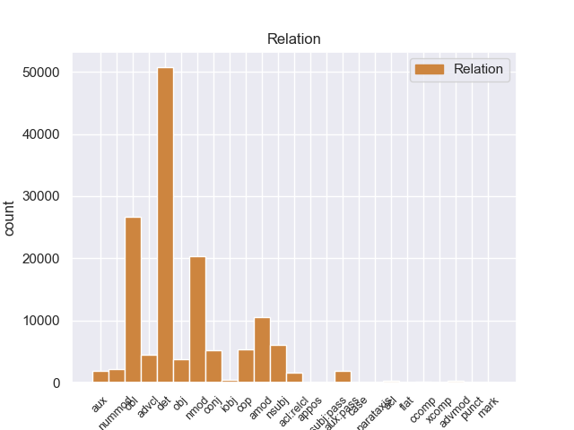
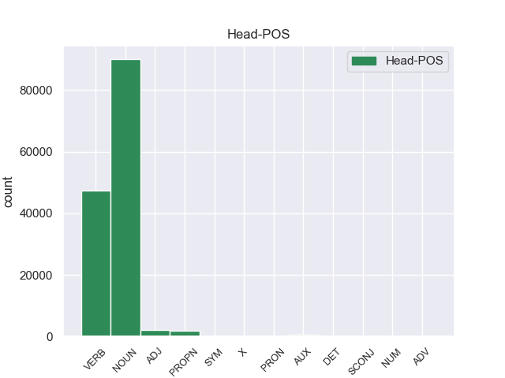
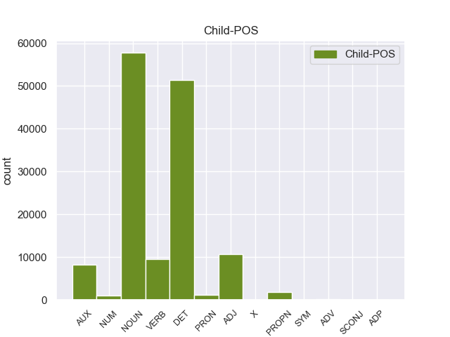

Distribution of features within this leaf



Agreement Rules sorted by frequency.
- When the dependent token is the determiner(det) of the head token, and the dependent token is DET.
1 En _ _ _ _ 0 _ _ _
2 1991 _ _ _ _ 0 _ _ _
3 , _ _ _ _ 0 _ _ _
4 como _ _ _ _ 0 _ _ _
5 ya _ _ _ _ 0 _ _ _
6 está _ _ _ _ 0 _ _ _
7 indicado _ _ _ _ 0 _ _ _
8 en _ _ _ _ 0 _ _ _
9 el _ _ _ _ 0 _ _ _
10 párrafo _ _ _ _ 0 _ _ _
11 anterior _ _ _ _ 0 _ _ _
12 , _ _ _ _ 0 _ _ _
13 se _ _ _ _ 0 _ _ _
14 creó _ _ _ _ 0 _ _ _
15 un _ _ _ _ 0 _ _ _
16 equipo _ _ _ _ 0 _ _ _
17 ad _ _ _ _ 0 _ _ _
18 hoc _ _ _ _ 0 _ _ _
19 para _ _ _ _ 0 _ _ _
20 averiguar _ _ _ _ 0 _ _ _
21 como _ _ _ _ 0 _ _ _
22 se _ _ _ _ 0 _ _ _
23 podía _ _ _ _ 0 _ _ _
24 desarrollar _ _ _ _ 0 _ _ _
25 el _ _ _ _ 0 _ _ _
26 Dialogo _ _ _ _ 0 _ _ _
27 Social _ _ _ _ 0 _ _ _
28 , _ _ _ _ 0 _ _ _
29 este este DET _ Gender=Masc|Number=Sing|PronType=Dem 30 det _ _
30 equipo equipo NOUN _ Gender=Masc|Number=Sing 0 _ _ _
31 estaba _ _ _ _ 0 _ _ _
32 formado _ _ _ _ 0 _ _ _
33 por _ _ _ _ 0 _ _ _
34 representantes _ _ _ _ 0 _ _ _
35 de _ _ _ _ 0 _ _ _
36 todas _ _ _ _ 0 _ _ _
37 las _ _ _ _ 0 _ _ _
38 organizaciones _ _ _ _ 0 _ _ _
39 relacionadas _ _ _ _ 0 _ _ _
40 con _ _ _ _ 0 _ _ _
41 CES _ _ _ _ 0 _ _ _
42 , _ _ _ _ 0 _ _ _
43 UNICE _ _ _ _ 0 _ _ _
44 y _ _ _ _ 0 _ _ _
45 CEEP _ _ _ _ 0 _ _ _
46 ; _ _ _ _ 0 _ _ _
1 En _ _ _ _ 0 _ _ _
2 1991 _ _ _ _ 0 _ _ _
3 , _ _ _ _ 0 _ _ _
4 como _ _ _ _ 0 _ _ _
5 ya _ _ _ _ 0 _ _ _
6 está _ _ _ _ 0 _ _ _
7 indicado _ _ _ _ 0 _ _ _
8 en _ _ _ _ 0 _ _ _
9 el _ _ _ _ 0 _ _ _
10 párrafo _ _ _ _ 0 _ _ _
11 anterior _ _ _ _ 0 _ _ _
12 , _ _ _ _ 0 _ _ _
13 se _ _ _ _ 0 _ _ _
14 creó _ _ _ _ 0 _ _ _
15 un _ _ _ _ 0 _ _ _
16 equipo _ _ _ _ 0 _ _ _
17 ad _ _ _ _ 0 _ _ _
18 hoc _ _ _ _ 0 _ _ _
19 para _ _ _ _ 0 _ _ _
20 averiguar _ _ _ _ 0 _ _ _
21 como _ _ _ _ 0 _ _ _
22 se _ _ _ _ 0 _ _ _
23 podía _ _ _ _ 0 _ _ _
24 desarrollar _ _ _ _ 0 _ _ _
25 el _ _ _ _ 0 _ _ _
26 Dialogo _ _ _ _ 0 _ _ _
27 Social _ _ _ _ 0 _ _ _
28 , _ _ _ _ 0 _ _ _
29 este _ _ _ _ 0 _ _ _
30 equipo _ _ _ _ 0 _ _ _
31 estaba _ _ _ _ 0 _ _ _
32 formado formado VERB _ Gender=Masc|Number=Sing|Tense=Past|VerbForm=Part 0 _ _ _
33 por _ _ _ _ 0 _ _ _
34 representantes _ _ _ _ 0 _ _ _
35 de _ _ _ _ 0 _ _ _
36 todas _ _ _ _ 0 _ _ _
37 las _ _ _ _ 0 _ _ _
38 organizaciones organizacione NOUN _ Gender=Fem|Number=Sing 32 obl _ _
39 relacionadas _ _ _ _ 0 _ _ _
40 con _ _ _ _ 0 _ _ _
41 CES _ _ _ _ 0 _ _ _
42 , _ _ _ _ 0 _ _ _
43 UNICE _ _ _ _ 0 _ _ _
44 y _ _ _ _ 0 _ _ _
45 CEEP _ _ _ _ 0 _ _ _
46 ; _ _ _ _ 0 _ _ _
1 Esta _ _ _ _ 0 _ _ _
2 teoría _ _ _ _ 0 _ _ _
3 se _ _ _ _ 0 _ _ _
4 avenía _ _ _ _ 0 _ _ _
5 bien _ _ _ _ 0 _ _ _
6 con _ _ _ _ 0 _ _ _
7 la _ _ _ _ 0 _ _ _
8 creencia _ _ _ _ 0 _ _ _
9 de _ _ _ _ 0 _ _ _
10 el _ _ _ _ 0 _ _ _
11 Romanticismo _ _ _ _ 0 _ _ _
12 en _ _ _ _ 0 _ _ _
13 un _ _ _ _ 0 _ _ _
14 volkgeist _ _ _ _ 0 _ _ _
15 , _ _ _ _ 0 _ _ _
16 " _ _ _ _ 0 _ _ _
17 genio _ _ _ _ 0 _ _ _
18 o _ _ _ _ 0 _ _ _
19 espíritu _ _ _ _ 0 _ _ _
20 de _ _ _ _ 0 _ _ _
21 el _ _ _ _ 0 _ _ _
22 pueblo _ _ _ _ 0 _ _ _
23 " _ _ _ _ 0 _ _ _
24 , _ _ _ _ 0 _ _ _
25 autor _ _ _ _ 0 _ _ _
26 colectivo _ _ _ _ 0 _ _ _
27 y _ _ _ _ 0 _ _ _
28 anónimo anónimo ADJ _ Gender=Masc|Number=Sing 0 _ _ _
29 de _ _ _ _ 0 _ _ _
30 una _ _ _ _ 0 _ _ _
31 poesía poesía NOUN _ Gender=Fem|Number=Sing 28 nmod _ _
32 nacional _ _ _ _ 0 _ _ _
33 . _ _ _ _ 0 _ _ _
1 En _ _ _ _ 0 _ _ _
2 1991 _ _ _ _ 0 _ _ _
3 , _ _ _ _ 0 _ _ _
4 como _ _ _ _ 0 _ _ _
5 ya _ _ _ _ 0 _ _ _
6 está _ _ _ _ 0 _ _ _
7 indicado _ _ _ _ 0 _ _ _
8 en _ _ _ _ 0 _ _ _
9 el _ _ _ _ 0 _ _ _
10 párrafo _ _ _ _ 0 _ _ _
11 anterior _ _ _ _ 0 _ _ _
12 , _ _ _ _ 0 _ _ _
13 se _ _ _ _ 0 _ _ _
14 creó _ _ _ _ 0 _ _ _
15 un _ _ _ _ 0 _ _ _
16 equipo equipo NOUN _ Gender=Masc|Number=Sing 0 _ _ _
17 ad _ _ _ _ 0 _ _ _
18 hoc hoc ADJ _ Gender=Masc|Number=Sing 16 amod _ _
19 para _ _ _ _ 0 _ _ _
20 averiguar _ _ _ _ 0 _ _ _
21 como _ _ _ _ 0 _ _ _
22 se _ _ _ _ 0 _ _ _
23 podía _ _ _ _ 0 _ _ _
24 desarrollar _ _ _ _ 0 _ _ _
25 el _ _ _ _ 0 _ _ _
26 Dialogo _ _ _ _ 0 _ _ _
27 Social _ _ _ _ 0 _ _ _
28 , _ _ _ _ 0 _ _ _
29 este _ _ _ _ 0 _ _ _
30 equipo _ _ _ _ 0 _ _ _
31 estaba _ _ _ _ 0 _ _ _
32 formado _ _ _ _ 0 _ _ _
33 por _ _ _ _ 0 _ _ _
34 representantes _ _ _ _ 0 _ _ _
35 de _ _ _ _ 0 _ _ _
36 todas _ _ _ _ 0 _ _ _
37 las _ _ _ _ 0 _ _ _
38 organizaciones _ _ _ _ 0 _ _ _
39 relacionadas _ _ _ _ 0 _ _ _
40 con _ _ _ _ 0 _ _ _
41 CES _ _ _ _ 0 _ _ _
42 , _ _ _ _ 0 _ _ _
43 UNICE _ _ _ _ 0 _ _ _
44 y _ _ _ _ 0 _ _ _
45 CEEP _ _ _ _ 0 _ _ _
46 ; _ _ _ _ 0 _ _ _
1 En _ _ _ _ 0 _ _ _
2 1991 _ _ _ _ 0 _ _ _
3 , _ _ _ _ 0 _ _ _
4 como _ _ _ _ 0 _ _ _
5 ya _ _ _ _ 0 _ _ _
6 está _ _ _ _ 0 _ _ _
7 indicado _ _ _ _ 0 _ _ _
8 en _ _ _ _ 0 _ _ _
9 el _ _ _ _ 0 _ _ _
10 párrafo _ _ _ _ 0 _ _ _
11 anterior _ _ _ _ 0 _ _ _
12 , _ _ _ _ 0 _ _ _
13 se _ _ _ _ 0 _ _ _
14 creó _ _ _ _ 0 _ _ _
15 un _ _ _ _ 0 _ _ _
16 equipo _ _ _ _ 0 _ _ _
17 ad _ _ _ _ 0 _ _ _
18 hoc _ _ _ _ 0 _ _ _
19 para _ _ _ _ 0 _ _ _
20 averiguar _ _ _ _ 0 _ _ _
21 como _ _ _ _ 0 _ _ _
22 se _ _ _ _ 0 _ _ _
23 podía _ _ _ _ 0 _ _ _
24 desarrollar _ _ _ _ 0 _ _ _
25 el _ _ _ _ 0 _ _ _
26 Dialogo _ _ _ _ 0 _ _ _
27 Social _ _ _ _ 0 _ _ _
28 , _ _ _ _ 0 _ _ _
29 este _ _ _ _ 0 _ _ _
30 equipo equipo NOUN _ Gender=Masc|Number=Sing 32 nsubj _ _
31 estaba _ _ _ _ 0 _ _ _
32 formado formado VERB _ Gender=Masc|Number=Sing|Tense=Past|VerbForm=Part 0 _ _ _
33 por _ _ _ _ 0 _ _ _
34 representantes _ _ _ _ 0 _ _ _
35 de _ _ _ _ 0 _ _ _
36 todas _ _ _ _ 0 _ _ _
37 las _ _ _ _ 0 _ _ _
38 organizaciones _ _ _ _ 0 _ _ _
39 relacionadas _ _ _ _ 0 _ _ _
40 con _ _ _ _ 0 _ _ _
41 CES _ _ _ _ 0 _ _ _
42 , _ _ _ _ 0 _ _ _
43 UNICE _ _ _ _ 0 _ _ _
44 y _ _ _ _ 0 _ _ _
45 CEEP _ _ _ _ 0 _ _ _
46 ; _ _ _ _ 0 _ _ _
1 Jazmin _ _ _ _ 0 _ _ _
2 es _ _ _ _ 0 _ _ _
3 todo _ _ _ _ 0 _ _ _
4 lo _ _ _ _ 0 _ _ _
5 contrario _ _ _ _ 0 _ _ _
6 , _ _ _ _ 0 _ _ _
7 es ser AUX _ Mood=Ind|Number=Sing|Person=3|Tense=Pres|VerbForm=Fin 8 cop _ _
8 tímida tímida ADJ _ Gender=Fem|Number=Sing 0 _ _ _
9 y _ _ _ _ 0 _ _ _
10 callada _ _ _ _ 0 _ _ _
11 , _ _ _ _ 0 _ _ _
12 pero _ _ _ _ 0 _ _ _
13 siempre _ _ _ _ 0 _ _ _
14 es _ _ _ _ 0 _ _ _
15 arrastrada _ _ _ _ 0 _ _ _
16 por _ _ _ _ 0 _ _ _
17 las _ _ _ _ 0 _ _ _
18 locuras _ _ _ _ 0 _ _ _
19 y _ _ _ _ 0 _ _ _
20 travesuras _ _ _ _ 0 _ _ _
21 que _ _ _ _ 0 _ _ _
22 inventa _ _ _ _ 0 _ _ _
23 Alma _ _ _ _ 0 _ _ _
24 . _ _ _ _ 0 _ _ _
1 En _ _ _ _ 0 _ _ _
2 1991 _ _ _ _ 0 _ _ _
3 , _ _ _ _ 0 _ _ _
4 como _ _ _ _ 0 _ _ _
5 ya _ _ _ _ 0 _ _ _
6 está _ _ _ _ 0 _ _ _
7 indicado _ _ _ _ 0 _ _ _
8 en _ _ _ _ 0 _ _ _
9 el _ _ _ _ 0 _ _ _
10 párrafo _ _ _ _ 0 _ _ _
11 anterior _ _ _ _ 0 _ _ _
12 , _ _ _ _ 0 _ _ _
13 se _ _ _ _ 0 _ _ _
14 creó crear VERB _ Mood=Ind|Number=Sing|Person=3|Tense=Past|VerbForm=Fin 0 _ _ _
15 un _ _ _ _ 0 _ _ _
16 equipo _ _ _ _ 0 _ _ _
17 ad _ _ _ _ 0 _ _ _
18 hoc _ _ _ _ 0 _ _ _
19 para _ _ _ _ 0 _ _ _
20 averiguar _ _ _ _ 0 _ _ _
21 como _ _ _ _ 0 _ _ _
22 se _ _ _ _ 0 _ _ _
23 podía _ _ _ _ 0 _ _ _
24 desarrollar _ _ _ _ 0 _ _ _
25 el _ _ _ _ 0 _ _ _
26 Dialogo _ _ _ _ 0 _ _ _
27 Social _ _ _ _ 0 _ _ _
28 , _ _ _ _ 0 _ _ _
29 este _ _ _ _ 0 _ _ _
30 equipo _ _ _ _ 0 _ _ _
31 estaba _ _ _ _ 0 _ _ _
32 formado formado VERB _ Gender=Masc|Number=Sing|Tense=Past|VerbForm=Part 14 advcl _ _
33 por _ _ _ _ 0 _ _ _
34 representantes _ _ _ _ 0 _ _ _
35 de _ _ _ _ 0 _ _ _
36 todas _ _ _ _ 0 _ _ _
37 las _ _ _ _ 0 _ _ _
38 organizaciones _ _ _ _ 0 _ _ _
39 relacionadas _ _ _ _ 0 _ _ _
40 con _ _ _ _ 0 _ _ _
41 CES _ _ _ _ 0 _ _ _
42 , _ _ _ _ 0 _ _ _
43 UNICE _ _ _ _ 0 _ _ _
44 y _ _ _ _ 0 _ _ _
45 CEEP _ _ _ _ 0 _ _ _
46 ; _ _ _ _ 0 _ _ _
1 En _ _ _ _ 0 _ _ _
2 1991 _ _ _ _ 0 _ _ _
3 , _ _ _ _ 0 _ _ _
4 como _ _ _ _ 0 _ _ _
5 ya _ _ _ _ 0 _ _ _
6 está _ _ _ _ 0 _ _ _
7 indicado _ _ _ _ 0 _ _ _
8 en _ _ _ _ 0 _ _ _
9 el _ _ _ _ 0 _ _ _
10 párrafo _ _ _ _ 0 _ _ _
11 anterior _ _ _ _ 0 _ _ _
12 , _ _ _ _ 0 _ _ _
13 se _ _ _ _ 0 _ _ _
14 creó crear VERB _ Mood=Ind|Number=Sing|Person=3|Tense=Past|VerbForm=Fin 0 _ _ _
15 un _ _ _ _ 0 _ _ _
16 equipo equipo NOUN _ Gender=Masc|Number=Sing 14 obj _ _
17 ad _ _ _ _ 0 _ _ _
18 hoc _ _ _ _ 0 _ _ _
19 para _ _ _ _ 0 _ _ _
20 averiguar _ _ _ _ 0 _ _ _
21 como _ _ _ _ 0 _ _ _
22 se _ _ _ _ 0 _ _ _
23 podía _ _ _ _ 0 _ _ _
24 desarrollar _ _ _ _ 0 _ _ _
25 el _ _ _ _ 0 _ _ _
26 Dialogo _ _ _ _ 0 _ _ _
27 Social _ _ _ _ 0 _ _ _
28 , _ _ _ _ 0 _ _ _
29 este _ _ _ _ 0 _ _ _
30 equipo _ _ _ _ 0 _ _ _
31 estaba _ _ _ _ 0 _ _ _
32 formado _ _ _ _ 0 _ _ _
33 por _ _ _ _ 0 _ _ _
34 representantes _ _ _ _ 0 _ _ _
35 de _ _ _ _ 0 _ _ _
36 todas _ _ _ _ 0 _ _ _
37 las _ _ _ _ 0 _ _ _
38 organizaciones _ _ _ _ 0 _ _ _
39 relacionadas _ _ _ _ 0 _ _ _
40 con _ _ _ _ 0 _ _ _
41 CES _ _ _ _ 0 _ _ _
42 , _ _ _ _ 0 _ _ _
43 UNICE _ _ _ _ 0 _ _ _
44 y _ _ _ _ 0 _ _ _
45 CEEP _ _ _ _ 0 _ _ _
46 ; _ _ _ _ 0 _ _ _
1 Esta _ _ _ _ 0 _ _ _
2 teoría _ _ _ _ 0 _ _ _
3 se _ _ _ _ 0 _ _ _
4 avenía _ _ _ _ 0 _ _ _
5 bien _ _ _ _ 0 _ _ _
6 con _ _ _ _ 0 _ _ _
7 la _ _ _ _ 0 _ _ _
8 creencia _ _ _ _ 0 _ _ _
9 de _ _ _ _ 0 _ _ _
10 el _ _ _ _ 0 _ _ _
11 Romanticismo _ _ _ _ 0 _ _ _
12 en _ _ _ _ 0 _ _ _
13 un _ _ _ _ 0 _ _ _
14 volkgeist _ _ _ _ 0 _ _ _
15 , _ _ _ _ 0 _ _ _
16 " _ _ _ _ 0 _ _ _
17 genio genio NOUN _ Gender=Masc|Number=Sing 0 _ _ _
18 o _ _ _ _ 0 _ _ _
19 espíritu espíritu NOUN _ Gender=Masc|Number=Sing 17 conj _ _
20 de _ _ _ _ 0 _ _ _
21 el _ _ _ _ 0 _ _ _
22 pueblo _ _ _ _ 0 _ _ _
23 " _ _ _ _ 0 _ _ _
24 , _ _ _ _ 0 _ _ _
25 autor _ _ _ _ 0 _ _ _
26 colectivo _ _ _ _ 0 _ _ _
27 y _ _ _ _ 0 _ _ _
28 anónimo _ _ _ _ 0 _ _ _
29 de _ _ _ _ 0 _ _ _
30 una _ _ _ _ 0 _ _ _
31 poesía _ _ _ _ 0 _ _ _
32 nacional _ _ _ _ 0 _ _ _
33 . _ _ _ _ 0 _ _ _
1 Jazmin _ _ _ _ 0 _ _ _
2 es _ _ _ _ 0 _ _ _
3 todo _ _ _ _ 0 _ _ _
4 lo _ _ _ _ 0 _ _ _
5 contrario _ _ _ _ 0 _ _ _
6 , _ _ _ _ 0 _ _ _
7 es _ _ _ _ 0 _ _ _
8 tímida _ _ _ _ 0 _ _ _
9 y _ _ _ _ 0 _ _ _
10 callada callada ADJ _ Gender=Fem|Number=Sing 0 _ _ _
11 , _ _ _ _ 0 _ _ _
12 pero _ _ _ _ 0 _ _ _
13 siempre _ _ _ _ 0 _ _ _
14 es _ _ _ _ 0 _ _ _
15 arrastrada arrastrada VERB _ Gender=Masc|Number=Sing|Tense=Past|VerbForm=Part 10 conj _ _
16 por _ _ _ _ 0 _ _ _
17 las _ _ _ _ 0 _ _ _
18 locuras _ _ _ _ 0 _ _ _
19 y _ _ _ _ 0 _ _ _
20 travesuras _ _ _ _ 0 _ _ _
21 que _ _ _ _ 0 _ _ _
22 inventa _ _ _ _ 0 _ _ _
23 Alma _ _ _ _ 0 _ _ _
24 . _ _ _ _ 0 _ _ _
1 En _ _ _ _ 0 _ _ _
2 1991 _ _ _ _ 0 _ _ _
3 , _ _ _ _ 0 _ _ _
4 como _ _ _ _ 0 _ _ _
5 ya _ _ _ _ 0 _ _ _
6 está _ _ _ _ 0 _ _ _
7 indicado _ _ _ _ 0 _ _ _
8 en _ _ _ _ 0 _ _ _
9 el _ _ _ _ 0 _ _ _
10 párrafo _ _ _ _ 0 _ _ _
11 anterior _ _ _ _ 0 _ _ _
12 , _ _ _ _ 0 _ _ _
13 se _ _ _ _ 0 _ _ _
14 creó _ _ _ _ 0 _ _ _
15 un _ _ _ _ 0 _ _ _
16 equipo _ _ _ _ 0 _ _ _
17 ad _ _ _ _ 0 _ _ _
18 hoc _ _ _ _ 0 _ _ _
19 para _ _ _ _ 0 _ _ _
20 averiguar _ _ _ _ 0 _ _ _
21 como _ _ _ _ 0 _ _ _
22 se _ _ _ _ 0 _ _ _
23 podía _ _ _ _ 0 _ _ _
24 desarrollar _ _ _ _ 0 _ _ _
25 el _ _ _ _ 0 _ _ _
26 Dialogo _ _ _ _ 0 _ _ _
27 Social _ _ _ _ 0 _ _ _
28 , _ _ _ _ 0 _ _ _
29 este _ _ _ _ 0 _ _ _
30 equipo _ _ _ _ 0 _ _ _
31 estaba stabar AUX _ Mood=Ind|Number=Sing|Person=3|Tense=Imp|VerbForm=Fin 32 aux:pass _ _
32 formado formado VERB _ Gender=Masc|Number=Sing|Tense=Past|VerbForm=Part 0 _ _ _
33 por _ _ _ _ 0 _ _ _
34 representantes _ _ _ _ 0 _ _ _
35 de _ _ _ _ 0 _ _ _
36 todas _ _ _ _ 0 _ _ _
37 las _ _ _ _ 0 _ _ _
38 organizaciones _ _ _ _ 0 _ _ _
39 relacionadas _ _ _ _ 0 _ _ _
40 con _ _ _ _ 0 _ _ _
41 CES _ _ _ _ 0 _ _ _
42 , _ _ _ _ 0 _ _ _
43 UNICE _ _ _ _ 0 _ _ _
44 y _ _ _ _ 0 _ _ _
45 CEEP _ _ _ _ 0 _ _ _
46 ; _ _ _ _ 0 _ _ _
1 Un _ _ _ _ 0 _ _ _
2 circuito _ _ _ _ 0 _ _ _
3 equivalente _ _ _ _ 0 _ _ _
4 es _ _ _ _ 0 _ _ _
5 un _ _ _ _ 0 _ _ _
6 circuito circuito NOUN _ Gender=Masc|Number=Sing 0 _ _ _
7 que _ _ _ _ 0 _ _ _
8 conserva conservar VERB _ Mood=Ind|Number=Sing|Person=3|Tense=Pres|VerbForm=Fin 6 acl:relcl _ _
9 todas _ _ _ _ 0 _ _ _
10 las _ _ _ _ 0 _ _ _
11 características _ _ _ _ 0 _ _ _
12 eléctricas _ _ _ _ 0 _ _ _
13 de _ _ _ _ 0 _ _ _
14 un _ _ _ _ 0 _ _ _
15 circuito _ _ _ _ 0 _ _ _
16 dado _ _ _ _ 0 _ _ _
17 . _ _ _ _ 0 _ _ _
1 En _ _ _ _ 0 _ _ _
2 1991 _ _ _ _ 0 _ _ _
3 , _ _ _ _ 0 _ _ _
4 como _ _ _ _ 0 _ _ _
5 ya _ _ _ _ 0 _ _ _
6 está está AUX _ Mood=Ind|Number=Sing|Person=3|Tense=Pres|VerbForm=Fin 7 aux _ _
7 indicado indicado VERB _ Gender=Masc|Number=Sing|Tense=Past|VerbForm=Part 0 _ _ _
8 en _ _ _ _ 0 _ _ _
9 el _ _ _ _ 0 _ _ _
10 párrafo _ _ _ _ 0 _ _ _
11 anterior _ _ _ _ 0 _ _ _
12 , _ _ _ _ 0 _ _ _
13 se _ _ _ _ 0 _ _ _
14 creó _ _ _ _ 0 _ _ _
15 un _ _ _ _ 0 _ _ _
16 equipo _ _ _ _ 0 _ _ _
17 ad _ _ _ _ 0 _ _ _
18 hoc _ _ _ _ 0 _ _ _
19 para _ _ _ _ 0 _ _ _
20 averiguar _ _ _ _ 0 _ _ _
21 como _ _ _ _ 0 _ _ _
22 se _ _ _ _ 0 _ _ _
23 podía _ _ _ _ 0 _ _ _
24 desarrollar _ _ _ _ 0 _ _ _
25 el _ _ _ _ 0 _ _ _
26 Dialogo _ _ _ _ 0 _ _ _
27 Social _ _ _ _ 0 _ _ _
28 , _ _ _ _ 0 _ _ _
29 este _ _ _ _ 0 _ _ _
30 equipo _ _ _ _ 0 _ _ _
31 estaba _ _ _ _ 0 _ _ _
32 formado _ _ _ _ 0 _ _ _
33 por _ _ _ _ 0 _ _ _
34 representantes _ _ _ _ 0 _ _ _
35 de _ _ _ _ 0 _ _ _
36 todas _ _ _ _ 0 _ _ _
37 las _ _ _ _ 0 _ _ _
38 organizaciones _ _ _ _ 0 _ _ _
39 relacionadas _ _ _ _ 0 _ _ _
40 con _ _ _ _ 0 _ _ _
41 CES _ _ _ _ 0 _ _ _
42 , _ _ _ _ 0 _ _ _
43 UNICE _ _ _ _ 0 _ _ _
44 y _ _ _ _ 0 _ _ _
45 CEEP _ _ _ _ 0 _ _ _
46 ; _ _ _ _ 0 _ _ _
1 Esta _ _ _ _ 0 _ _ _
2 teoría _ _ _ _ 0 _ _ _
3 se _ _ _ _ 0 _ _ _
4 avenía _ _ _ _ 0 _ _ _
5 bien _ _ _ _ 0 _ _ _
6 con _ _ _ _ 0 _ _ _
7 la _ _ _ _ 0 _ _ _
8 creencia creencia NOUN _ Gender=Fem|Number=Sing 0 _ _ _
9 de _ _ _ _ 0 _ _ _
10 el _ _ _ _ 0 _ _ _
11 Romanticismo romanticismo PROPN _ Gender=Masc|Number=Sing 8 nmod _ _
12 en _ _ _ _ 0 _ _ _
13 un _ _ _ _ 0 _ _ _
14 volkgeist _ _ _ _ 0 _ _ _
15 , _ _ _ _ 0 _ _ _
16 " _ _ _ _ 0 _ _ _
17 genio _ _ _ _ 0 _ _ _
18 o _ _ _ _ 0 _ _ _
19 espíritu _ _ _ _ 0 _ _ _
20 de _ _ _ _ 0 _ _ _
21 el _ _ _ _ 0 _ _ _
22 pueblo _ _ _ _ 0 _ _ _
23 " _ _ _ _ 0 _ _ _
24 , _ _ _ _ 0 _ _ _
25 autor _ _ _ _ 0 _ _ _
26 colectivo _ _ _ _ 0 _ _ _
27 y _ _ _ _ 0 _ _ _
28 anónimo _ _ _ _ 0 _ _ _
29 de _ _ _ _ 0 _ _ _
30 una _ _ _ _ 0 _ _ _
31 poesía _ _ _ _ 0 _ _ _
32 nacional _ _ _ _ 0 _ _ _
33 . _ _ _ _ 0 _ _ _
1 De _ _ _ _ 0 _ _ _
2 la _ _ _ _ 0 _ _ _
3 Vega _ _ _ _ 0 _ _ _
4 ha _ _ _ _ 0 _ _ _
5 pedido _ _ _ _ 0 _ _ _
6 respetar _ _ _ _ 0 _ _ _
7 los _ _ _ _ 0 _ _ _
8 tiempos _ _ _ _ 0 _ _ _
9 de _ _ _ _ 0 _ _ _
10 los _ _ _ _ 0 _ _ _
11 procesos _ _ _ _ 0 _ _ _
12 y _ _ _ _ 0 _ _ _
13 de _ _ _ _ 0 _ _ _
14 la _ _ _ _ 0 _ _ _
15 misma _ _ _ _ 0 _ _ _
16 manera _ _ _ _ 0 _ _ _
17 que _ _ _ _ 0 _ _ _
18 no _ _ _ _ 0 _ _ _
19 ha _ _ _ _ 0 _ _ _
20 querido _ _ _ _ 0 _ _ _
21 entrar _ _ _ _ 0 _ _ _
22 en _ _ _ _ 0 _ _ _
23 la _ _ _ _ 0 _ _ _
24 salida _ _ _ _ 0 _ _ _
25 de _ _ _ _ 0 _ _ _
26 Corbacho _ _ _ _ 0 _ _ _
27 , _ _ _ _ 0 _ _ _
28 tampoco _ _ _ _ 0 _ _ _
29 lo _ _ _ _ 0 _ _ _
30 ha _ _ _ _ 0 _ _ _
31 hecho _ _ _ _ 0 _ _ _
32 la _ _ _ _ 0 _ _ _
33 posible posible NOUN _ Gender=Fem|Number=Sing 34 amod _ _
34 salida salida NOUN _ Gender=Fem|Number=Sing 0 _ _ _
35 de _ _ _ _ 0 _ _ _
36 Trinidad _ _ _ _ 0 _ _ _
37 Jiménez _ _ _ _ 0 _ _ _
38 , _ _ _ _ 0 _ _ _
39 que _ _ _ _ 0 _ _ _
40 le _ _ _ _ 0 _ _ _
41 acompañaba _ _ _ _ 0 _ _ _
42 en _ _ _ _ 0 _ _ _
43 la _ _ _ _ 0 _ _ _
44 sala _ _ _ _ 0 _ _ _
45 de _ _ _ _ 0 _ _ _
46 prensa _ _ _ _ 0 _ _ _
47 . _ _ _ _ 0 _ _ _
1 De _ _ _ _ 0 _ _ _
2 los _ _ _ _ 0 _ _ _
3 714 _ _ _ _ 0 _ _ _
4 habitantes _ _ _ _ 0 _ _ _
5 , _ _ _ _ 0 _ _ _
6 el _ _ _ _ 0 _ _ _
7 municipio _ _ _ _ 0 _ _ _
8 de _ _ _ _ 0 _ _ _
9 Daggett _ _ _ _ 0 _ _ _
10 estaba _ _ _ _ 0 _ _ _
11 compuesto _ _ _ _ 0 _ _ _
12 por _ _ _ _ 0 _ _ _
13 el _ _ _ _ 0 _ _ _
14 93.28 _ _ _ _ 0 _ _ _
15 % _ _ _ _ 0 _ _ _
16 blancos _ _ _ _ 0 _ _ _
17 , _ _ _ _ 0 _ _ _
18 el _ _ _ _ 0 _ _ _
19 2.38 _ _ _ _ 0 _ _ _
20 % _ _ _ _ 0 _ _ _
21 eran _ _ _ _ 0 _ _ _
22 afroamericanos _ _ _ _ 0 _ _ _
23 , _ _ _ _ 0 _ _ _
24 el _ _ _ _ 0 _ _ _
25 0.84 _ _ _ _ 0 _ _ _
26 % _ _ _ _ 0 _ _ _
27 eran _ _ _ _ 0 _ _ _
28 amerindios _ _ _ _ 0 _ _ _
29 , _ _ _ _ 0 _ _ _
30 el _ _ _ _ 0 _ _ _
31 0.56 _ _ _ _ 0 _ _ _
32 % _ _ _ _ 0 _ _ _
33 eran _ _ _ _ 0 _ _ _
34 asiáticos _ _ _ _ 0 _ _ _
35 , _ _ _ _ 0 _ _ _
36 el _ _ _ _ 0 _ _ _
37 0 _ _ _ _ 0 _ _ _
38 % _ _ _ _ 0 _ _ _
39 eran _ _ _ _ 0 _ _ _
40 isleños _ _ _ _ 0 _ _ _
41 de _ _ _ _ 0 _ _ _
42 el _ _ _ _ 0 _ _ _
43 Pacífico _ _ _ _ 0 _ _ _
44 , _ _ _ _ 0 _ _ _
45 el _ _ _ _ 0 _ _ _
46 0.84 _ _ _ _ 0 _ _ _
47 % _ _ _ _ 0 _ _ _
48 eran _ _ _ _ 0 _ _ _
49 de _ _ _ _ 0 _ _ _
50 otras _ _ _ _ 0 _ _ _
51 razas _ _ _ _ 0 _ _ _
52 y _ _ _ _ 0 _ _ _
53 el _ _ _ _ 0 _ _ _
54 2.1 _ _ _ _ 0 _ _ _
55 % _ _ _ _ 0 _ _ _
56 pertenecían _ _ _ _ 0 _ _ _
57 a _ _ _ _ 0 _ _ _
58 dos dos NUM _ Number=Plur|NumType=Card 61 nummod _ _
59 o _ _ _ _ 0 _ _ _
60 más _ _ _ _ 0 _ _ _
61 razas raza NOUN _ Gender=Masc|Number=Plur 0 _ _ _
62 . _ _ _ _ 0 _ _ _
1 Ese _ _ _ _ 0 _ _ _
2 mismo _ _ _ _ 0 _ _ _
3 año _ _ _ _ 0 _ _ _
4 participó _ _ _ _ 0 _ _ _
5 con _ _ _ _ 0 _ _ _
6 el _ _ _ _ 0 _ _ _
7 equipo _ _ _ _ 0 _ _ _
8 ruso _ _ _ _ 0 _ _ _
9 en _ _ _ _ 0 _ _ _
10 la _ _ _ _ 0 _ _ _
11 Olimpiada _ _ _ _ 0 _ _ _
12 de _ _ _ _ 0 _ _ _
13 Ajedrez _ _ _ _ 0 _ _ _
14 de _ _ _ _ 0 _ _ _
15 Estambul _ _ _ _ 0 _ _ _
16 y _ _ _ _ 0 _ _ _
17 obtuvo _ _ _ _ 0 _ _ _
18 la _ _ _ _ 0 _ _ _
19 medalla _ _ _ _ 0 _ _ _
20 de _ _ _ _ 0 _ _ _
21 bronce _ _ _ _ 0 _ _ _
22 en _ _ _ _ 0 _ _ _
23 tanto _ _ _ _ 0 _ _ _
24 que _ _ _ _ 0 _ _ _
25 mejor _ _ _ _ 0 _ _ _
26 segunda segunda ADJ _ Gender=Fem|Number=Sing 27 nummod _ _
27 jugador jugador NOUN _ Gender=Masc|Number=Sing 0 _ _ _
28 reservista _ _ _ _ 0 _ _ _
29 de _ _ _ _ 0 _ _ _
30 el _ _ _ _ 0 _ _ _
31 torneo _ _ _ _ 0 _ _ _
32 ( _ _ _ _ 0 _ _ _
33 los _ _ _ _ 0 _ _ _
34 equipos _ _ _ _ 0 _ _ _
35 estaban _ _ _ _ 0 _ _ _
36 formados _ _ _ _ 0 _ _ _
37 por _ _ _ _ 0 _ _ _
38 cuatro _ _ _ _ 0 _ _ _
39 jugadores _ _ _ _ 0 _ _ _
40 titulares _ _ _ _ 0 _ _ _
41 y _ _ _ _ 0 _ _ _
42 dos _ _ _ _ 0 _ _ _
43 reservas _ _ _ _ 0 _ _ _
44 ) _ _ _ _ 0 _ _ _
45 . _ _ _ _ 0 _ _ _
1 De _ _ _ _ 0 _ _ _
2 los _ _ _ _ 0 _ _ _
3 714 _ _ _ _ 0 _ _ _
4 habitantes _ _ _ _ 0 _ _ _
5 , _ _ _ _ 0 _ _ _
6 el _ _ _ _ 0 _ _ _
7 municipio _ _ _ _ 0 _ _ _
8 de _ _ _ _ 0 _ _ _
9 Daggett _ _ _ _ 0 _ _ _
10 estaba _ _ _ _ 0 _ _ _
11 compuesto _ _ _ _ 0 _ _ _
12 por _ _ _ _ 0 _ _ _
13 el _ _ _ _ 0 _ _ _
14 93.28 _ _ _ _ 0 _ _ _
15 % _ _ _ _ 0 _ _ _
16 blancos _ _ _ _ 0 _ _ _
17 , _ _ _ _ 0 _ _ _
18 el _ _ _ _ 0 _ _ _
19 2.38 _ _ _ _ 0 _ _ _
20 % _ _ _ _ 0 _ _ _
21 eran _ _ _ _ 0 _ _ _
22 afroamericanos _ _ _ _ 0 _ _ _
23 , _ _ _ _ 0 _ _ _
24 el _ _ _ _ 0 _ _ _
25 0.84 _ _ _ _ 0 _ _ _
26 % _ _ _ _ 0 _ _ _
27 eran _ _ _ _ 0 _ _ _
28 amerindios _ _ _ _ 0 _ _ _
29 , _ _ _ _ 0 _ _ _
30 el _ _ _ _ 0 _ _ _
31 0.56 _ _ _ _ 0 _ _ _
32 % _ _ _ _ 0 _ _ _
33 eran _ _ _ _ 0 _ _ _
34 asiáticos _ _ _ _ 0 _ _ _
35 , _ _ _ _ 0 _ _ _
36 el _ _ _ _ 0 _ _ _
37 0 _ _ _ _ 0 _ _ _
38 % _ _ _ _ 0 _ _ _
39 eran _ _ _ _ 0 _ _ _
40 isleños isleños NOUN _ Gender=Masc|Number=Plur 0 _ _ _
41 de _ _ _ _ 0 _ _ _
42 el _ _ _ _ 0 _ _ _
43 Pacífico _ _ _ _ 0 _ _ _
44 , _ _ _ _ 0 _ _ _
45 el _ _ _ _ 0 _ _ _
46 0.84 _ _ _ _ 0 _ _ _
47 % _ _ _ _ 0 _ _ _
48 eran _ _ _ _ 0 _ _ _
49 de _ _ _ _ 0 _ _ _
50 otras _ _ _ _ 0 _ _ _
51 razas _ _ _ _ 0 _ _ _
52 y _ _ _ _ 0 _ _ _
53 el _ _ _ _ 0 _ _ _
54 2.1 _ _ _ _ 0 _ _ _
55 % _ _ _ _ 0 _ _ _
56 pertenecían pertenecían VERB _ Mood=Ind|Number=Plur|Person=3|Tense=Imp|VerbForm=Fin 40 cop _ _
57 a _ _ _ _ 0 _ _ _
58 dos _ _ _ _ 0 _ _ _
59 o _ _ _ _ 0 _ _ _
60 más _ _ _ _ 0 _ _ _
61 razas _ _ _ _ 0 _ _ _
62 . _ _ _ _ 0 _ _ _
1 Joramun _ _ _ _ 0 _ _ _
2 se _ _ _ _ 0 _ _ _
3 supone supone VERB _ Gender=Masc|Number=Sing|Tense=Past|VerbForm=Part 0 _ _ _
4 que _ _ _ _ 0 _ _ _
5 era _ _ _ _ 0 _ _ _
6 un _ _ _ _ 0 _ _ _
7 legendario _ _ _ _ 0 _ _ _
8 Rey rey PROPN _ Gender=Masc|Number=Sing 3 obl _ _
9 - _ _ _ _ 0 _ _ _
10 Más _ _ _ _ 0 _ _ _
11 - _ _ _ _ 0 _ _ _
12 Allá _ _ _ _ 0 _ _ _
13 - _ _ _ _ 0 _ _ _
14 de _ _ _ _ 0 _ _ _
15 el _ _ _ _ 0 _ _ _
16 - _ _ _ _ 0 _ _ _
17 Muro _ _ _ _ 0 _ _ _
18 , _ _ _ _ 0 _ _ _
19 a _ _ _ _ 0 _ _ _
20 el _ _ _ _ 0 _ _ _
21 norte _ _ _ _ 0 _ _ _
22 de _ _ _ _ 0 _ _ _
23 los _ _ _ _ 0 _ _ _
24 Siete _ _ _ _ 0 _ _ _
25 Reinos _ _ _ _ 0 _ _ _
26 . _ _ _ _ 0 _ _ _
1 De _ _ _ _ 0 _ _ _
2 la _ _ _ _ 0 _ _ _
3 Vega _ _ _ _ 0 _ _ _
4 ha _ _ _ _ 0 _ _ _
5 pedido _ _ _ _ 0 _ _ _
6 respetar _ _ _ _ 0 _ _ _
7 los _ _ _ _ 0 _ _ _
8 tiempos _ _ _ _ 0 _ _ _
9 de _ _ _ _ 0 _ _ _
10 los _ _ _ _ 0 _ _ _
11 procesos _ _ _ _ 0 _ _ _
12 y _ _ _ _ 0 _ _ _
13 de _ _ _ _ 0 _ _ _
14 la _ _ _ _ 0 _ _ _
15 misma _ _ _ _ 0 _ _ _
16 manera _ _ _ _ 0 _ _ _
17 que _ _ _ _ 0 _ _ _
18 no _ _ _ _ 0 _ _ _
19 ha _ _ _ _ 0 _ _ _
20 querido _ _ _ _ 0 _ _ _
21 entrar _ _ _ _ 0 _ _ _
22 en _ _ _ _ 0 _ _ _
23 la _ _ _ _ 0 _ _ _
24 salida _ _ _ _ 0 _ _ _
25 de _ _ _ _ 0 _ _ _
26 Corbacho _ _ _ _ 0 _ _ _
27 , _ _ _ _ 0 _ _ _
28 tampoco _ _ _ _ 0 _ _ _
29 lo él PRON _ Case=Acc|Gender=Masc|Number=Sing|Person=3|PrepCase=Npr|PronType=Prs 31 iobj _ _
30 ha _ _ _ _ 0 _ _ _
31 hecho hecho VERB _ Gender=Masc|Number=Sing|Tense=Past|VerbForm=Part 0 _ _ _
32 la _ _ _ _ 0 _ _ _
33 posible _ _ _ _ 0 _ _ _
34 salida _ _ _ _ 0 _ _ _
35 de _ _ _ _ 0 _ _ _
36 Trinidad _ _ _ _ 0 _ _ _
37 Jiménez _ _ _ _ 0 _ _ _
38 , _ _ _ _ 0 _ _ _
39 que _ _ _ _ 0 _ _ _
40 le _ _ _ _ 0 _ _ _
41 acompañaba _ _ _ _ 0 _ _ _
42 en _ _ _ _ 0 _ _ _
43 la _ _ _ _ 0 _ _ _
44 sala _ _ _ _ 0 _ _ _
45 de _ _ _ _ 0 _ _ _
46 prensa _ _ _ _ 0 _ _ _
47 . _ _ _ _ 0 _ _ _
1 Jazmin _ _ _ _ 0 _ _ _
2 es _ _ _ _ 0 _ _ _
3 todo _ _ _ _ 0 _ _ _
4 lo _ _ _ _ 0 _ _ _
5 contrario _ _ _ _ 0 _ _ _
6 , _ _ _ _ 0 _ _ _
7 es _ _ _ _ 0 _ _ _
8 tímida tímida ADJ _ Gender=Fem|Number=Sing 0 _ _ _
9 y _ _ _ _ 0 _ _ _
10 callada callada ADJ _ Gender=Fem|Number=Sing 8 conj _ _
11 , _ _ _ _ 0 _ _ _
12 pero _ _ _ _ 0 _ _ _
13 siempre _ _ _ _ 0 _ _ _
14 es _ _ _ _ 0 _ _ _
15 arrastrada _ _ _ _ 0 _ _ _
16 por _ _ _ _ 0 _ _ _
17 las _ _ _ _ 0 _ _ _
18 locuras _ _ _ _ 0 _ _ _
19 y _ _ _ _ 0 _ _ _
20 travesuras _ _ _ _ 0 _ _ _
21 que _ _ _ _ 0 _ _ _
22 inventa _ _ _ _ 0 _ _ _
23 Alma _ _ _ _ 0 _ _ _
24 . _ _ _ _ 0 _ _ _
1 " _ _ _ _ 0 _ _ _
2 Tenemos _ _ _ _ 0 _ _ _
3 todo _ _ _ _ 0 _ _ _
4 listo listo NOUN _ Gender=Masc|Number=Sing 0 _ _ _
5 , _ _ _ _ 0 _ _ _
6 la _ _ _ _ 0 _ _ _
7 venta _ _ _ _ 0 _ _ _
8 de _ _ _ _ 0 _ _ _
9 boletos _ _ _ _ 0 _ _ _
10 será _ _ _ _ 0 _ _ _
11 a _ _ _ _ 0 _ _ _
12 partir _ _ _ _ 0 _ _ _
13 de _ _ _ _ 0 _ _ _
14 mañana _ _ _ _ 0 _ _ _
15 de _ _ _ _ 0 _ _ _
16 8 _ _ _ _ 0 _ _ _
17 am _ _ _ _ 0 _ _ _
18 a _ _ _ _ 0 _ _ _
19 3 _ _ _ _ 0 _ _ _
20 pm _ _ _ _ 0 _ _ _
21 , _ _ _ _ 0 _ _ _
22 la _ _ _ _ 0 _ _ _
23 afición _ _ _ _ 0 _ _ _
24 de _ _ _ _ 0 _ _ _
25 el _ _ _ _ 0 _ _ _
26 Real _ _ _ _ 0 _ _ _
27 España _ _ _ _ 0 _ _ _
28 podrá _ _ _ _ 0 _ _ _
29 comprar _ _ _ _ 0 _ _ _
30 en _ _ _ _ 0 _ _ _
31 el _ _ _ _ 0 _ _ _
32 Banco _ _ _ _ 0 _ _ _
33 Continental _ _ _ _ 0 _ _ _
34 , _ _ _ _ 0 _ _ _
35 frente _ _ _ _ 0 _ _ _
36 a _ _ _ _ 0 _ _ _
37 el _ _ _ _ 0 _ _ _
38 estadio _ _ _ _ 0 _ _ _
39 Morazán _ _ _ _ 0 _ _ _
40 , _ _ _ _ 0 _ _ _
41 se _ _ _ _ 0 _ _ _
42 han _ _ _ _ 0 _ _ _
43 puesto _ _ _ _ 0 _ _ _
44 a _ _ _ _ 0 _ _ _
45 la _ _ _ _ 0 _ _ _
46 venta _ _ _ _ 0 _ _ _
47 800 _ _ _ _ 0 _ _ _
48 boletos _ _ _ _ 0 _ _ _
49 , _ _ _ _ 0 _ _ _
50 500 _ _ _ _ 0 _ _ _
51 en _ _ _ _ 0 _ _ _
52 sol _ _ _ _ 0 _ _ _
53 y _ _ _ _ 0 _ _ _
54 300 _ _ _ _ 0 _ _ _
55 en _ _ _ _ 0 _ _ _
56 preferencia _ _ _ _ 0 _ _ _
57 , _ _ _ _ 0 _ _ _
58 la _ _ _ _ 0 _ _ _
59 boletería _ _ _ _ 0 _ _ _
60 de _ _ _ _ 0 _ _ _
61 el _ _ _ _ 0 _ _ _
62 España _ _ _ _ 0 _ _ _
63 está _ _ _ _ 0 _ _ _
64 ya _ _ _ _ 0 _ _ _
65 identificada identificada VERB _ Gender=Fem|Number=Sing 4 acl _ _
66 con _ _ _ _ 0 _ _ _
67 el _ _ _ _ 0 _ _ _
68 escudo _ _ _ _ 0 _ _ _
69 de _ _ _ _ 0 _ _ _
70 el _ _ _ _ 0 _ _ _
71 equipo _ _ _ _ 0 _ _ _
72 y _ _ _ _ 0 _ _ _
73 con _ _ _ _ 0 _ _ _
74 el _ _ _ _ 0 _ _ _
75 color _ _ _ _ 0 _ _ _
76 amarillo _ _ _ _ 0 _ _ _
77 " _ _ _ _ 0 _ _ _
78 , _ _ _ _ 0 _ _ _
79 comentó _ _ _ _ 0 _ _ _
80 Rolin _ _ _ _ 0 _ _ _
81 . _ _ _ _ 0 _ _ _
1 De _ _ _ _ 0 _ _ _
2 las _ _ _ _ 0 _ _ _
3 8 _ _ _ _ 0 _ _ _
4 porciones _ _ _ _ 0 _ _ _
5 , _ _ _ _ 0 _ _ _
6 cuatro _ _ _ _ 0 _ _ _
7 correspondieron _ _ _ _ 0 _ _ _
8 a _ _ _ _ 0 _ _ _
9 el _ _ _ _ 0 _ _ _
10 rey _ _ _ _ 0 _ _ _
11 , _ _ _ _ 0 _ _ _
12 una _ _ _ _ 0 _ _ _
13 a _ _ _ _ 0 _ _ _
14 el _ _ _ _ 0 _ _ _
15 conde _ _ _ _ 0 _ _ _
16 de _ _ _ _ 0 _ _ _
17 el _ _ _ _ 0 _ _ _
18 Rosellón _ _ _ _ 0 _ _ _
19 Nuño _ _ _ _ 0 _ _ _
20 Sánchez _ _ _ _ 0 _ _ _
21 , _ _ _ _ 0 _ _ _
22 una _ _ _ _ 0 _ _ _
23 a _ _ _ _ 0 _ _ _
24 el _ _ _ _ 0 _ _ _
25 obispo _ _ _ _ 0 _ _ _
26 de _ _ _ _ 0 _ _ _
27 Barcelona _ _ _ _ 0 _ _ _
28 Berenguer _ _ _ _ 0 _ _ _
29 de _ _ _ _ 0 _ _ _
30 Palou _ _ _ _ 0 _ _ _
31 , _ _ _ _ 0 _ _ _
32 una uno DET _ Definite=Ind|Gender=Fem|Number=Sing|PronType=Art 35 nummod _ _
33 a _ _ _ _ 0 _ _ _
34 el _ _ _ _ 0 _ _ _
35 Conde conde NOUN _ Gender=Masc|Number=Sing 0 _ _ _
36 de _ _ _ _ 0 _ _ _
37 Ampurias _ _ _ _ 0 _ _ _
38 y _ _ _ _ 0 _ _ _
39 finalmente _ _ _ _ 0 _ _ _
40 otra _ _ _ _ 0 _ _ _
41 a _ _ _ _ 0 _ _ _
42 el _ _ _ _ 0 _ _ _
43 vizconde _ _ _ _ 0 _ _ _
44 de _ _ _ _ 0 _ _ _
45 Bearn _ _ _ _ 0 _ _ _
46 . _ _ _ _ 0 _ _ _
1 Igualmente _ _ _ _ 0 _ _ _
2 , _ _ _ _ 0 _ _ _
3 la _ _ _ _ 0 _ _ _
4 presencia _ _ _ _ 0 _ _ _
5 de _ _ _ _ 0 _ _ _
6 Ledesma _ _ _ _ 0 _ _ _
7 está _ _ _ _ 0 _ _ _
8 supeditada _ _ _ _ 0 _ _ _
9 a _ _ _ _ 0 _ _ _
10 la _ _ _ _ 0 _ _ _
11 actuación _ _ _ _ 0 _ _ _
12 de _ _ _ _ 0 _ _ _
13 el _ _ _ _ 0 _ _ _
14 seleccionado _ _ _ _ 0 _ _ _
15 argentino _ _ _ _ 0 _ _ _
16 sub _ _ _ _ 0 _ _ _
17 20 _ _ _ _ 0 _ _ _
18 en _ _ _ _ 0 _ _ _
19 los _ _ _ _ 0 _ _ _
20 Panamericanos _ _ _ _ 0 _ _ _
21 , _ _ _ _ 0 _ _ _
22 ya _ _ _ _ 0 _ _ _
23 que _ _ _ _ 0 _ _ _
24 Cirigliano _ _ _ _ 0 _ _ _
25 sólo _ _ _ _ 0 _ _ _
26 estaría _ _ _ _ 0 _ _ _
27 en _ _ _ _ 0 _ _ _
28 condiciones _ _ _ _ 0 _ _ _
29 de _ _ _ _ 0 _ _ _
30 jugar _ _ _ _ 0 _ _ _
31 ante _ _ _ _ 0 _ _ _
32 Aldosivi _ _ _ _ 0 _ _ _
33 en _ _ _ _ 0 _ _ _
34 caso _ _ _ _ 0 _ _ _
35 de _ _ _ _ 0 _ _ _
36 que _ _ _ _ 0 _ _ _
37 el _ _ _ _ 0 _ _ _
38 elenco _ _ _ _ 0 _ _ _
39 " _ _ _ _ 0 _ _ _
40 albiceleste _ _ _ _ 0 _ _ _
41 " _ _ _ _ 0 _ _ _
42 no _ _ _ _ 0 _ _ _
43 supere _ _ _ _ 0 _ _ _
44 la _ _ _ _ 0 _ _ _
45 primera primera NOUN _ Gender=Fem|Number=Sing 46 nummod _ _
46 ronda ronda NOUN _ Gender=Fem|Number=Sing 0 _ _ _
47 , _ _ _ _ 0 _ _ _
48 algo _ _ _ _ 0 _ _ _
49 poco _ _ _ _ 0 _ _ _
50 probable _ _ _ _ 0 _ _ _
51 . _ _ _ _ 0 _ _ _
1 El _ _ _ _ 0 _ _ _
2 Levante levante PROPN _ Gender=Masc|Number=Sing 5 nsubj _ _
3 U. _ _ _ _ 0 _ _ _
4 D. _ _ _ _ 0 _ _ _
5 jugaba jugaba VERB _ Mood=Ind|Number=Sing|Person=3|Tense=Past|VerbForm=Fin 0 _ _ _
6 sus _ _ _ _ 0 _ _ _
7 partidos _ _ _ _ 0 _ _ _
8 anteriormente _ _ _ _ 0 _ _ _
9 en _ _ _ _ 0 _ _ _
10 el _ _ _ _ 0 _ _ _
11 campo _ _ _ _ 0 _ _ _
12 de _ _ _ _ 0 _ _ _
13 Vallejo _ _ _ _ 0 _ _ _
14 . _ _ _ _ 0 _ _ _
1 La _ _ _ _ 0 _ _ _
2 primera _ _ _ _ 0 _ _ _
3 vez _ _ _ _ 0 _ _ _
4 , _ _ _ _ 0 _ _ _
5 tenía _ _ _ _ 0 _ _ _
6 un _ _ _ _ 0 _ _ _
7 presupuesto _ _ _ _ 0 _ _ _
8 de _ _ _ _ 0 _ _ _
9 700 _ _ _ _ 0 _ _ _
10 € _ _ _ _ 0 _ _ _
11 en _ _ _ _ 0 _ _ _
12 el _ _ _ _ 0 _ _ _
13 servicio _ _ _ _ 0 _ _ _
14 oficial _ _ _ _ 0 _ _ _
15 ( _ _ _ _ 0 _ _ _
16 te _ _ _ _ 0 _ _ _
17 lo lo PRON _ Case=Acc|Gender=Masc|Number=Sing|Person=3|PrepCase=Npr|PronType=Prs 18 obj _ _
18 cambio cambio VERB _ Mood=Ind|Number=Sing|Person=3|Tense=Past|VerbForm=Fin 0 _ _ _
19 todo _ _ _ _ 0 _ _ _
20 y _ _ _ _ 0 _ _ _
21 soluciono _ _ _ _ 0 _ _ _
22 el _ _ _ _ 0 _ _ _
23 problema _ _ _ _ 0 _ _ _
24 ) _ _ _ _ 0 _ _ _
25 , _ _ _ _ 0 _ _ _
26 y _ _ _ _ 0 _ _ _
27 en _ _ _ _ 0 _ _ _
28 Pinauto _ _ _ _ 0 _ _ _
29 me _ _ _ _ 0 _ _ _
30 lo _ _ _ _ 0 _ _ _
31 solucionaron _ _ _ _ 0 _ _ _
32 por _ _ _ _ 0 _ _ _
33 unos _ _ _ _ 0 _ _ _
34 200 _ _ _ _ 0 _ _ _
35 € _ _ _ _ 0 _ _ _
36 , _ _ _ _ 0 _ _ _
37 cambiando _ _ _ _ 0 _ _ _
38 sólo _ _ _ _ 0 _ _ _
39 lo _ _ _ _ 0 _ _ _
40 necesario _ _ _ _ 0 _ _ _
41 . _ _ _ _ 0 _ _ _
1 El _ _ _ _ 0 _ _ _
2 mandatario _ _ _ _ 0 _ _ _
3 uruguayo _ _ _ _ 0 _ _ _
4 , _ _ _ _ 0 _ _ _
5 quien _ _ _ _ 0 _ _ _
6 llegó _ _ _ _ 0 _ _ _
7 el _ _ _ _ 0 _ _ _
8 domingo _ _ _ _ 0 _ _ _
9 a _ _ _ _ 0 _ _ _
10 Paraguay _ _ _ _ 0 _ _ _
11 , _ _ _ _ 0 _ _ _
12 inició _ _ _ _ 0 _ _ _
13 este _ _ _ _ 0 _ _ _
14 lunes _ _ _ _ 0 _ _ _
15 sus _ _ _ _ 0 _ _ _
16 actividades _ _ _ _ 0 _ _ _
17 a _ _ _ _ 0 _ _ _
18 el _ _ _ _ 0 _ _ _
19 colocar _ _ _ _ 0 _ _ _
20 una _ _ _ _ 0 _ _ _
21 ofrenda _ _ _ _ 0 _ _ _
22 floral _ _ _ _ 0 _ _ _
23 en _ _ _ _ 0 _ _ _
24 el _ _ _ _ 0 _ _ _
25 Panteón _ _ _ _ 0 _ _ _
26 de _ _ _ _ 0 _ _ _
27 los _ _ _ _ 0 _ _ _
28 Héroes _ _ _ _ 0 _ _ _
29 , _ _ _ _ 0 _ _ _
30 tras _ _ _ _ 0 _ _ _
31 lo lo PRON _ Case=Acc|Gender=Masc|Number=Sing|Person=3|PrepCase=Npr|PronType=Prs 34 obl _ _
32 cual _ _ _ _ 0 _ _ _
33 se _ _ _ _ 0 _ _ _
34 trasladó trasladar VERB _ Mood=Ind|Number=Sing|Person=3|Tense=Past|VerbForm=Fin 0 _ _ _
35 a _ _ _ _ 0 _ _ _
36 el _ _ _ _ 0 _ _ _
37 Palacio _ _ _ _ 0 _ _ _
38 de _ _ _ _ 0 _ _ _
39 Gobierno _ _ _ _ 0 _ _ _
40 donde _ _ _ _ 0 _ _ _
41 fue _ _ _ _ 0 _ _ _
42 condecorado _ _ _ _ 0 _ _ _
43 por _ _ _ _ 0 _ _ _
44 Lugo _ _ _ _ 0 _ _ _
45 . _ _ _ _ 0 _ _ _
1 Una _ _ _ _ 0 _ _ _
2 vez _ _ _ _ 0 _ _ _
3 que _ _ _ _ 0 _ _ _
4 el _ _ _ _ 0 _ _ _
5 Hijo _ _ _ _ 0 _ _ _
6 de _ _ _ _ 0 _ _ _
7 Krypton _ _ _ _ 0 _ _ _
8 suelta suelta VERB _ Mood=Ind|Number=Sing|Person=3|Tense=Pres|VerbForm=Fin 0 _ _ _
9 el _ _ _ _ 0 _ _ _
10 misil _ _ _ _ 0 _ _ _
11 , _ _ _ _ 0 _ _ _
12 este _ _ _ _ 0 _ _ _
13 intenta intentar VERB _ Mood=Ind|Number=Sing|Person=3|Tense=Pres|VerbForm=Fin 8 aux _ _
14 huir _ _ _ _ 0 _ _ _
15 de _ _ _ _ 0 _ _ _
16 el _ _ _ _ 0 _ _ _
17 lugar _ _ _ _ 0 _ _ _
18 pero _ _ _ _ 0 _ _ _
19 es _ _ _ _ 0 _ _ _
20 atrapado _ _ _ _ 0 _ _ _
21 en _ _ _ _ 0 _ _ _
22 la _ _ _ _ 0 _ _ _
23 explosión _ _ _ _ 0 _ _ _
24 . _ _ _ _ 0 _ _ _
1 El _ _ _ _ 0 _ _ _
2 ministro _ _ _ _ 0 _ _ _
3 británico _ _ _ _ 0 _ _ _
4 de _ _ _ _ 0 _ _ _
5 Defensa _ _ _ _ 0 _ _ _
6 , _ _ _ _ 0 _ _ _
7 Liam _ _ _ _ 0 _ _ _
8 Fox _ _ _ _ 0 _ _ _
9 , _ _ _ _ 0 _ _ _
10 consideró considerar VERB _ Mood=Ind|Number=Sing|Person=3|Tense=Past|VerbForm=Fin 0 _ _ _
11 que _ _ _ _ 0 _ _ _
12 el _ _ _ _ 0 _ _ _
13 avance _ _ _ _ 0 _ _ _
14 rebelde _ _ _ _ 0 _ _ _
15 puede _ _ _ _ 0 _ _ _
16 despejar despejar VERB _ Gender=Masc|Number=Sing|VerbForm=Part 10 ccomp _ _
17 el _ _ _ _ 0 _ _ _
18 camino _ _ _ _ 0 _ _ _
19 para _ _ _ _ 0 _ _ _
20 que _ _ _ _ 0 _ _ _
21 los _ _ _ _ 0 _ _ _
22 insurgentes _ _ _ _ 0 _ _ _
23 se _ _ _ _ 0 _ _ _
24 hagan _ _ _ _ 0 _ _ _
25 con _ _ _ _ 0 _ _ _
26 el _ _ _ _ 0 _ _ _
27 control _ _ _ _ 0 _ _ _
28 de _ _ _ _ 0 _ _ _
29 los _ _ _ _ 0 _ _ _
30 puntos _ _ _ _ 0 _ _ _
31 de _ _ _ _ 0 _ _ _
32 exportación _ _ _ _ 0 _ _ _
33 de _ _ _ _ 0 _ _ _
34 petróleo _ _ _ _ 0 _ _ _
35 de _ _ _ _ 0 _ _ _
36 Libia _ _ _ _ 0 _ _ _
37 , _ _ _ _ 0 _ _ _
38 una _ _ _ _ 0 _ _ _
39 situación _ _ _ _ 0 _ _ _
40 que _ _ _ _ 0 _ _ _
41 puede _ _ _ _ 0 _ _ _
42 cambiar _ _ _ _ 0 _ _ _
43 la _ _ _ _ 0 _ _ _
44 " _ _ _ _ 0 _ _ _
45 dinámica _ _ _ _ 0 _ _ _
46 " _ _ _ _ 0 _ _ _
47 de _ _ _ _ 0 _ _ _
48 el _ _ _ _ 0 _ _ _
49 conflicto _ _ _ _ 0 _ _ _
50 . _ _ _ _ 0 _ _ _
1 Ambos ambos PRON _ Gender=Fem|Number=Plur|NumType=Card|PronType=Tot 2 nsubj _ _
2 son oner AUX _ Mood=Ind|Number=Plur|Person=3|Tense=Pres|VerbForm=Fin 0 _ _ _
3 de _ _ _ _ 0 _ _ _
4 origen _ _ _ _ 0 _ _ _
5 Hebreo _ _ _ _ 0 _ _ _
6 . _ _ _ _ 0 _ _ _
1 Uno _ _ _ _ 0 _ _ _
2 de _ _ _ _ 0 _ _ _
3 los _ _ _ _ 0 _ _ _
4 casos _ _ _ _ 0 _ _ _
5 más _ _ _ _ 0 _ _ _
6 extraños _ _ _ _ 0 _ _ _
7 y _ _ _ _ 0 _ _ _
8 más _ _ _ _ 0 _ _ _
9 enquistado _ _ _ _ 0 _ _ _
10 es _ _ _ _ 0 _ _ _
11 el _ _ _ _ 0 _ _ _
12 caso _ _ _ _ 0 _ _ _
13 de _ _ _ _ 0 _ _ _
14 el _ _ _ _ 0 _ _ _
15 bielorruso _ _ _ _ 0 _ _ _
16 Hleb _ _ _ _ 0 _ _ _
17 que _ _ _ _ 0 _ _ _
18 desde _ _ _ _ 0 _ _ _
19 que _ _ _ _ 0 _ _ _
20 fichó _ _ _ _ 0 _ _ _
21 por _ _ _ _ 0 _ _ _
22 el _ _ _ _ 0 _ _ _
23 club _ _ _ _ 0 _ _ _
24 no _ _ _ _ 0 _ _ _
25 ha _ _ _ _ 0 _ _ _
26 llegado _ _ _ _ 0 _ _ _
27 a _ _ _ _ 0 _ _ _
28 jugar _ _ _ _ 0 _ _ _
29 dos _ _ _ _ 0 _ _ _
30 partidos _ _ _ _ 0 _ _ _
31 seguidos _ _ _ _ 0 _ _ _
32 y _ _ _ _ 0 _ _ _
33 que _ _ _ _ 0 _ _ _
34 esta este PRON _ Gender=Fem|Number=Sing|PronType=Dem 38 det _ _
35 es _ _ _ _ 0 _ _ _
36 la _ _ _ _ 0 _ _ _
37 ultima _ _ _ _ 0 _ _ _
38 temporada temporada NOUN _ Gender=Fem|Number=Sing 0 _ _ _
39 con _ _ _ _ 0 _ _ _
40 contrato _ _ _ _ 0 _ _ _
41 en _ _ _ _ 0 _ _ _
42 el _ _ _ _ 0 _ _ _
43 club _ _ _ _ 0 _ _ _
44 culé _ _ _ _ 0 _ _ _
45 , _ _ _ _ 0 _ _ _
46 y _ _ _ _ 0 _ _ _
47 que _ _ _ _ 0 _ _ _
48 finalizará _ _ _ _ 0 _ _ _
49 su _ _ _ _ 0 _ _ _
50 vinculación _ _ _ _ 0 _ _ _
51 como _ _ _ _ 0 _ _ _
52 cedido _ _ _ _ 0 _ _ _
53 en _ _ _ _ 0 _ _ _
54 el _ _ _ _ 0 _ _ _
55 Wolfburgo _ _ _ _ 0 _ _ _
56 alemán _ _ _ _ 0 _ _ _
57 . _ _ _ _ 0 _ _ _
1 Comienzan _ _ _ _ 0 _ _ _
2 serias _ _ _ _ 0 _ _ _
3 discusiones _ _ _ _ 0 _ _ _
4 con _ _ _ _ 0 _ _ _
5 Daniel _ _ _ _ 0 _ _ _
6 y _ _ _ _ 0 _ _ _
7 la _ _ _ _ 0 _ _ _
8 desgracia _ _ _ _ 0 _ _ _
9 no _ _ _ _ 0 _ _ _
10 se _ _ _ _ 0 _ _ _
11 hace _ _ _ _ 0 _ _ _
12 esperar _ _ _ _ 0 _ _ _
13 , _ _ _ _ 0 _ _ _
14 en _ _ _ _ 0 _ _ _
15 una _ _ _ _ 0 _ _ _
16 noche _ _ _ _ 0 _ _ _
17 Valeria _ _ _ _ 0 _ _ _
18 se _ _ _ _ 0 _ _ _
19 encierra _ _ _ _ 0 _ _ _
20 en _ _ _ _ 0 _ _ _
21 su _ _ _ _ 0 _ _ _
22 habitación _ _ _ _ 0 _ _ _
23 donde _ _ _ _ 0 _ _ _
24 Daniel _ _ _ _ 0 _ _ _
25 la _ _ _ _ 0 _ _ _
26 encuentra _ _ _ _ 0 _ _ _
27 inconsciente _ _ _ _ 0 _ _ _
28 por _ _ _ _ 0 _ _ _
29 lo _ _ _ _ 0 _ _ _
30 que _ _ _ _ 0 _ _ _
31 es _ _ _ _ 0 _ _ _
32 hospitalizada hospitalizada VERB _ Gender=Masc|Number=Sing 0 _ _ _
33 de _ _ _ _ 0 _ _ _
34 nuevo nuevo ADJ _ Gender=Masc|Number=Sing 32 obl _ _
35 y _ _ _ _ 0 _ _ _
36 le _ _ _ _ 0 _ _ _
37 amputan _ _ _ _ 0 _ _ _
38 la _ _ _ _ 0 _ _ _
39 pierna _ _ _ _ 0 _ _ _
40 debido _ _ _ _ 0 _ _ _
41 a _ _ _ _ 0 _ _ _
42 que _ _ _ _ 0 _ _ _
43 se _ _ _ _ 0 _ _ _
44 le _ _ _ _ 0 _ _ _
45 desarrolló _ _ _ _ 0 _ _ _
46 una _ _ _ _ 0 _ _ _
47 gangrena _ _ _ _ 0 _ _ _
48 en _ _ _ _ 0 _ _ _
49 ella _ _ _ _ 0 _ _ _
50 , _ _ _ _ 0 _ _ _
51 tras _ _ _ _ 0 _ _ _
52 una _ _ _ _ 0 _ _ _
53 trombosis _ _ _ _ 0 _ _ _
54 generada _ _ _ _ 0 _ _ _
55 por _ _ _ _ 0 _ _ _
56 el _ _ _ _ 0 _ _ _
57 esfuerzo _ _ _ _ 0 _ _ _
58 de _ _ _ _ 0 _ _ _
59 Valeria _ _ _ _ 0 _ _ _
60 en _ _ _ _ 0 _ _ _
61 buscar _ _ _ _ 0 _ _ _
62 a _ _ _ _ 0 _ _ _
63 Richie _ _ _ _ 0 _ _ _
64 . _ _ _ _ 0 _ _ _
1 Aunque _ _ _ _ 0 _ _ _
2 se _ _ _ _ 0 _ _ _
3 puede _ _ _ _ 0 _ _ _
4 decir _ _ _ _ 0 _ _ _
5 que _ _ _ _ 0 _ _ _
6 tanto _ _ _ _ 0 _ _ _
7 el _ _ _ _ 0 _ _ _
8 Cyberpunk _ _ _ _ 0 _ _ _
9 ( _ _ _ _ 0 _ _ _
10 en _ _ _ _ 0 _ _ _
11 este _ _ _ _ 0 _ _ _
12 caso _ _ _ _ 0 _ _ _
13 orientado _ _ _ _ 0 _ _ _
14 con _ _ _ _ 0 _ _ _
15 la _ _ _ _ 0 _ _ _
16 cultura _ _ _ _ 0 _ _ _
17 gótica _ _ _ _ 0 _ _ _
18 ) _ _ _ _ 0 _ _ _
19 y _ _ _ _ 0 _ _ _
20 el _ _ _ _ 0 _ _ _
21 Steampunk _ _ _ _ 0 _ _ _
22 son _ _ _ _ 0 _ _ _
23 como _ _ _ _ 0 _ _ _
24 " _ _ _ _ 0 _ _ _
25 hermanos _ _ _ _ 0 _ _ _
26 lejanos _ _ _ _ 0 _ _ _
27 " _ _ _ _ 0 _ _ _
28 porque _ _ _ _ 0 _ _ _
29 ambas _ _ _ _ 0 _ _ _
30 posturas _ _ _ _ 0 _ _ _
31 se _ _ _ _ 0 _ _ _
32 concentran _ _ _ _ 0 _ _ _
33 en _ _ _ _ 0 _ _ _
34 futurismos _ _ _ _ 0 _ _ _
35 , _ _ _ _ 0 _ _ _
36 aunque _ _ _ _ 0 _ _ _
37 en _ _ _ _ 0 _ _ _
38 diferentes diferentes DET _ Number=Plur 39 amod _ _
39 formas forma NOUN _ Gender=Masc|Number=Plur 0 _ _ _
40 ( _ _ _ _ 0 _ _ _
41 retrofuturismo _ _ _ _ 0 _ _ _
42 y _ _ _ _ 0 _ _ _
43 profuturismo _ _ _ _ 0 _ _ _
44 , _ _ _ _ 0 _ _ _
45 respectivamente _ _ _ _ 0 _ _ _
46 ) _ _ _ _ 0 _ _ _
47 . _ _ _ _ 0 _ _ _
1 El _ _ _ _ 0 _ _ _
2 Doctor _ _ _ _ 0 _ _ _
3 Boskonovitch _ _ _ _ 0 _ _ _
4 y _ _ _ _ 0 _ _ _
5 Yoshimitsu _ _ _ _ 0 _ _ _
6 están _ _ _ _ 0 _ _ _
7 en _ _ _ _ 0 _ _ _
8 los _ _ _ _ 0 _ _ _
9 laboratorios _ _ _ _ 0 _ _ _
10 de _ _ _ _ 0 _ _ _
11 el _ _ _ _ 0 _ _ _
12 primero _ _ _ _ 0 _ _ _
13 , _ _ _ _ 0 _ _ _
14 observan _ _ _ _ 0 _ _ _
15 a _ _ _ _ 0 _ _ _
16 un _ _ _ _ 0 _ _ _
17 ratón _ _ _ _ 0 _ _ _
18 que _ _ _ _ 0 _ _ _
19 está _ _ _ _ 0 _ _ _
20 bebiendo _ _ _ _ 0 _ _ _
21 la _ _ _ _ 0 _ _ _
22 sangre _ _ _ _ 0 _ _ _
23 de _ _ _ _ 0 _ _ _
24 Ogre _ _ _ _ 0 _ _ _
25 , _ _ _ _ 0 _ _ _
26 de _ _ _ _ 0 _ _ _
27 repente _ _ _ _ 0 _ _ _
28 los _ _ _ _ 0 _ _ _
29 dos _ _ _ _ 0 _ _ _
30 salen _ _ _ _ 0 _ _ _
31 corriendo _ _ _ _ 0 _ _ _
32 , _ _ _ _ 0 _ _ _
33 cuando _ _ _ _ 0 _ _ _
34 el _ _ _ _ 0 _ _ _
35 ratón _ _ _ _ 0 _ _ _
36 se _ _ _ _ 0 _ _ _
37 vuelve vuelver VERB _ Mood=Ind|Number=Sing|Person=3|Tense=Pres|VerbForm=Fin 0 _ _ _
38 gigante gigante ADJ _ Gender=Masc|Number=Sing 37 advcl _ _
39 y _ _ _ _ 0 _ _ _
40 destruye _ _ _ _ 0 _ _ _
41 el _ _ _ _ 0 _ _ _
42 laboratorio _ _ _ _ 0 _ _ _
43 . _ _ _ _ 0 _ _ _
1 A _ _ _ _ 0 _ _ _
2 Piñera _ _ _ _ 0 _ _ _
3 le _ _ _ _ 0 _ _ _
4 ha _ _ _ _ 0 _ _ _
5 ido er VERB _ Gender=Masc|Number=Sing|Tense=Past|VerbForm=Part 0 _ _ _
6 bien _ _ _ _ 0 _ _ _
7 en _ _ _ _ 0 _ _ _
8 el _ _ _ _ 0 _ _ _
9 plano _ _ _ _ 0 _ _ _
10 económico _ _ _ _ 0 _ _ _
11 y _ _ _ _ 0 _ _ _
12 muy _ _ _ _ 0 _ _ _
13 mal mal ADV _ Gender=Masc|Number=Sing 5 advmod _ _
14 en _ _ _ _ 0 _ _ _
15 el _ _ _ _ 0 _ _ _
16 plano _ _ _ _ 0 _ _ _
17 político _ _ _ _ 0 _ _ _
18 . _ _ _ _ 0 _ _ _
1 La _ _ _ _ 0 _ _ _
2 localidad _ _ _ _ 0 _ _ _
3 se _ _ _ _ 0 _ _ _
4 encuentra encontrar VERB _ Mood=Ind|Number=Sing|Person=3|Tense=Pres|VerbForm=Fin 5 aux:pass _ _
5 emplazada emplazada VERB _ Gender=Fem|Number=Sing|VerbForm=Part 0 _ _ _
6 en _ _ _ _ 0 _ _ _
7 el _ _ _ _ 0 _ _ _
8 extremo _ _ _ _ 0 _ _ _
9 norte _ _ _ _ 0 _ _ _
10 de _ _ _ _ 0 _ _ _
11 el _ _ _ _ 0 _ _ _
12 departamento _ _ _ _ 0 _ _ _
13 de _ _ _ _ 0 _ _ _
14 Flores _ _ _ _ 0 _ _ _
15 , _ _ _ _ 0 _ _ _
16 sobre _ _ _ _ 0 _ _ _
17 ruta _ _ _ _ 0 _ _ _
18 3 _ _ _ _ 0 _ _ _
19 , _ _ _ _ 0 _ _ _
20 próximo _ _ _ _ 0 _ _ _
21 a _ _ _ _ 0 _ _ _
22 el _ _ _ _ 0 _ _ _
23 embalse _ _ _ _ 0 _ _ _
24 artificial _ _ _ _ 0 _ _ _
25 de _ _ _ _ 0 _ _ _
26 la _ _ _ _ 0 _ _ _
27 Represa _ _ _ _ 0 _ _ _
28 de _ _ _ _ 0 _ _ _
29 Palmar _ _ _ _ 0 _ _ _
30 . _ _ _ _ 0 _ _ _
1 Saint _ _ _ _ 0 _ _ _
2 - _ _ _ _ 0 _ _ _
3 Hippolyte _ _ _ _ 0 _ _ _
4 ( _ _ _ _ 0 _ _ _
5 en _ _ _ _ 0 _ _ _
6 occitano occitano PROPN _ Gender=Masc|Number=Sing 12 amod _ _
7 Sent _ _ _ _ 0 _ _ _
8 Ipòli _ _ _ _ 0 _ _ _
9 ) _ _ _ _ 0 _ _ _
10 es _ _ _ _ 0 _ _ _
11 una _ _ _ _ 0 _ _ _
12 población población NOUN _ Gender=Fem|Number=Sing 0 _ _ _
13 y _ _ _ _ 0 _ _ _
14 comuna _ _ _ _ 0 _ _ _
15 francesa _ _ _ _ 0 _ _ _
16 , _ _ _ _ 0 _ _ _
17 situada _ _ _ _ 0 _ _ _
18 en _ _ _ _ 0 _ _ _
19 la _ _ _ _ 0 _ _ _
20 región _ _ _ _ 0 _ _ _
21 de _ _ _ _ 0 _ _ _
22 Aquitania _ _ _ _ 0 _ _ _
23 , _ _ _ _ 0 _ _ _
24 departamento _ _ _ _ 0 _ _ _
25 de _ _ _ _ 0 _ _ _
26 Gironda _ _ _ _ 0 _ _ _
27 , _ _ _ _ 0 _ _ _
28 en _ _ _ _ 0 _ _ _
29 el _ _ _ _ 0 _ _ _
30 distrito _ _ _ _ 0 _ _ _
31 de _ _ _ _ 0 _ _ _
32 Libourne _ _ _ _ 0 _ _ _
33 y _ _ _ _ 0 _ _ _
34 cantón _ _ _ _ 0 _ _ _
35 de _ _ _ _ 0 _ _ _
36 Castillon _ _ _ _ 0 _ _ _
37 - _ _ _ _ 0 _ _ _
38 la _ _ _ _ 0 _ _ _
39 - _ _ _ _ 0 _ _ _
40 Bataille _ _ _ _ 0 _ _ _
41 . _ _ _ _ 0 _ _ _
1 La _ _ _ _ 0 _ _ _
2 crítica _ _ _ _ 0 _ _ _
3 valoró valoró VERB _ Mood=Ind|Number=Sing|Person=3|Tense=Past|VerbForm=Fin 0 _ _ _
4 muy _ _ _ _ 0 _ _ _
5 positivamente positivamente ADJ _ Number=Sing 3 advmod _ _
6 su _ _ _ _ 0 _ _ _
7 interpretación _ _ _ _ 0 _ _ _
8 tanto _ _ _ _ 0 _ _ _
9 en _ _ _ _ 0 _ _ _
10 la _ _ _ _ 0 _ _ _
11 primera _ _ _ _ 0 _ _ _
12 parte _ _ _ _ 0 _ _ _
13 como _ _ _ _ 0 _ _ _
14 en _ _ _ _ 0 _ _ _
15 la _ _ _ _ 0 _ _ _
16 segunda _ _ _ _ 0 _ _ _
17 . _ _ _ _ 0 _ _ _
1 Con _ _ _ _ 0 _ _ _
2 miras _ _ _ _ 0 _ _ _
3 a _ _ _ _ 0 _ _ _
4 minimizar minimizar VERB _ Gender=Fem|Number=Sing 12 amod _ _
5 cualquier _ _ _ _ 0 _ _ _
6 confusión _ _ _ _ 0 _ _ _
7 con _ _ _ _ 0 _ _ _
8 una _ _ _ _ 0 _ _ _
9 religión _ _ _ _ 0 _ _ _
10 , _ _ _ _ 0 _ _ _
11 el _ _ _ _ 0 _ _ _
12 uso uso NOUN _ Gender=Masc|Number=Sing 0 _ _ _
13 de _ _ _ _ 0 _ _ _
14 la _ _ _ _ 0 _ _ _
15 palabra _ _ _ _ 0 _ _ _
16 " _ _ _ _ 0 _ _ _
17 templo _ _ _ _ 0 _ _ _
18 " _ _ _ _ 0 _ _ _
19 para _ _ _ _ 0 _ _ _
20 describir _ _ _ _ 0 _ _ _
21 los _ _ _ _ 0 _ _ _
22 inmuebles _ _ _ _ 0 _ _ _
23 de _ _ _ _ 0 _ _ _
24 los _ _ _ _ 0 _ _ _
25 Shriners _ _ _ _ 0 _ _ _
26 ha _ _ _ _ 0 _ _ _
27 sido _ _ _ _ 0 _ _ _
28 reemplazado _ _ _ _ 0 _ _ _
29 por _ _ _ _ 0 _ _ _
30 la _ _ _ _ 0 _ _ _
31 frase _ _ _ _ 0 _ _ _
32 " _ _ _ _ 0 _ _ _
33 Centro _ _ _ _ 0 _ _ _
34 Shriner _ _ _ _ 0 _ _ _
35 " _ _ _ _ 0 _ _ _
36 , _ _ _ _ 0 _ _ _
37 aunque _ _ _ _ 0 _ _ _
38 en _ _ _ _ 0 _ _ _
39 capítulos _ _ _ _ 0 _ _ _
40 individuales _ _ _ _ 0 _ _ _
41 siguen _ _ _ _ 0 _ _ _
42 siendo _ _ _ _ 0 _ _ _
43 nombrados _ _ _ _ 0 _ _ _
44 como _ _ _ _ 0 _ _ _
45 " _ _ _ _ 0 _ _ _
46 templos _ _ _ _ 0 _ _ _
47 " _ _ _ _ 0 _ _ _
48 . _ _ _ _ 0 _ _ _
1 Hemos _ _ _ _ 0 _ _ _
2 tenido tener VERB _ Gender=Masc|Number=Sing|Tense=Past|VerbForm=Part 0 _ _ _
3 todo todo DET _ Gender=Masc|Number=Sing|Tense=Past|VerbForm=Part 2 obj _ _
4 guardado _ _ _ _ 0 _ _ _
5 allí _ _ _ _ 0 _ _ _
6 durante _ _ _ _ 0 _ _ _
7 10 _ _ _ _ 0 _ _ _
8 meses _ _ _ _ 0 _ _ _
9 . _ _ _ _ 0 _ _ _
1 Sin _ _ _ _ 0 _ _ _
2 embargo _ _ _ _ 0 _ _ _
3 , _ _ _ _ 0 _ _ _
4 propició propiciór VERB _ Mood=Ind|Number=Sing|Person=3|Tense=Past|VerbForm=Fin 0 _ _ _
5 una _ _ _ _ 0 _ _ _
6 temprana temprana ADJ _ Gender=Fem|Number=Sing 4 obj _ _
7 cristianización _ _ _ _ 0 _ _ _
8 , _ _ _ _ 0 _ _ _
9 que _ _ _ _ 0 _ _ _
10 a _ _ _ _ 0 _ _ _
11 arraigó _ _ _ _ 0 _ _ _
12 fuertemente _ _ _ _ 0 _ _ _
13 en _ _ _ _ 0 _ _ _
14 las _ _ _ _ 0 _ _ _
15 costas _ _ _ _ 0 _ _ _
16 andaluzas _ _ _ _ 0 _ _ _
17 y _ _ _ _ 0 _ _ _
18 que _ _ _ _ 0 _ _ _
19 fue _ _ _ _ 0 _ _ _
20 marcando _ _ _ _ 0 _ _ _
21 un _ _ _ _ 0 _ _ _
22 nuevo _ _ _ _ 0 _ _ _
23 desarrollo _ _ _ _ 0 _ _ _
24 cultural _ _ _ _ 0 _ _ _
25 en _ _ _ _ 0 _ _ _
26 toda _ _ _ _ 0 _ _ _
27 la _ _ _ _ 0 _ _ _
28 Península _ _ _ _ 0 _ _ _
29 Ibérica _ _ _ _ 0 _ _ _
30 . _ _ _ _ 0 _ _ _
1 Desde _ _ _ _ 0 _ _ _
2 su _ _ _ _ 0 _ _ _
3 llegada _ _ _ _ 0 _ _ _
4 a _ _ _ _ 0 _ _ _
5 Hollywood _ _ _ _ 0 _ _ _
6 , _ _ _ _ 0 _ _ _
7 Devon _ _ _ _ 0 _ _ _
8 logró _ _ _ _ 0 _ _ _
9 varios _ _ _ _ 0 _ _ _
10 programas _ _ _ _ 0 _ _ _
11 de _ _ _ _ 0 _ _ _
12 televisión _ _ _ _ 0 _ _ _
13 y _ _ _ _ 0 _ _ _
14 películas _ _ _ _ 0 _ _ _
15 , _ _ _ _ 0 _ _ _
16 el _ _ _ _ 0 _ _ _
17 mayor _ _ _ _ 0 _ _ _
18 de _ _ _ _ 0 _ _ _
19 ellos _ _ _ _ 0 _ _ _
20 , _ _ _ _ 0 _ _ _
21 y _ _ _ _ 0 _ _ _
22 el el DET _ Definite=Def|Gender=Masc|Number=Sing|PronType=Art 25 nsubj _ _
23 que _ _ _ _ 0 _ _ _
24 lo _ _ _ _ 0 _ _ _
25 llevó llevó VERB _ Mood=Ind|Number=Sing|Person=3|Tense=Past|VerbForm=Fin 0 _ _ _
26 a _ _ _ _ 0 _ _ _
27 la _ _ _ _ 0 _ _ _
28 fama _ _ _ _ 0 _ _ _
29 fue _ _ _ _ 0 _ _ _
30 el _ _ _ _ 0 _ _ _
31 de _ _ _ _ 0 _ _ _
32 Ned _ _ _ _ 0 _ _ _
33 Bigby _ _ _ _ 0 _ _ _
34 en _ _ _ _ 0 _ _ _
35 el _ _ _ _ 0 _ _ _
36 " _ _ _ _ 0 _ _ _
37 Manual _ _ _ _ 0 _ _ _
38 de _ _ _ _ 0 _ _ _
39 sobrevivencia _ _ _ _ 0 _ _ _
40 escolar _ _ _ _ 0 _ _ _
41 de _ _ _ _ 0 _ _ _
42 Ned _ _ _ _ 0 _ _ _
43 " _ _ _ _ 0 _ _ _
44 . _ _ _ _ 0 _ _ _
1 El _ _ _ _ 0 _ _ _
2 ingreso ingreso NOUN _ Gender=Masc|Number=Sing 0 _ _ _
3 per _ _ _ _ 0 _ _ _
4 cápita cápita ADJ _ Gender=Masc|Number=Sing 2 nmod _ _
5 para _ _ _ _ 0 _ _ _
6 la _ _ _ _ 0 _ _ _
7 localidad _ _ _ _ 0 _ _ _
8 era _ _ _ _ 0 _ _ _
9 de _ _ _ _ 0 _ _ _
10 $ _ _ _ _ 0 _ _ _
11 14.159 _ _ _ _ 0 _ _ _
12 . _ _ _ _ 0 _ _ _
1 La _ _ _ _ 0 _ _ _
2 primera _ _ _ _ 0 _ _ _
3 vez _ _ _ _ 0 _ _ _
4 , _ _ _ _ 0 _ _ _
5 tenía teener VERB _ Mood=Ind|Number=Sing|Person=3|Tense=Past|VerbForm=Fin 0 _ _ _
6 un _ _ _ _ 0 _ _ _
7 presupuesto _ _ _ _ 0 _ _ _
8 de _ _ _ _ 0 _ _ _
9 700 _ _ _ _ 0 _ _ _
10 € _ _ _ _ 0 _ _ _
11 en _ _ _ _ 0 _ _ _
12 el _ _ _ _ 0 _ _ _
13 servicio _ _ _ _ 0 _ _ _
14 oficial _ _ _ _ 0 _ _ _
15 ( _ _ _ _ 0 _ _ _
16 te _ _ _ _ 0 _ _ _
17 lo _ _ _ _ 0 _ _ _
18 cambio _ _ _ _ 0 _ _ _
19 todo _ _ _ _ 0 _ _ _
20 y _ _ _ _ 0 _ _ _
21 soluciono _ _ _ _ 0 _ _ _
22 el _ _ _ _ 0 _ _ _
23 problema _ _ _ _ 0 _ _ _
24 ) _ _ _ _ 0 _ _ _
25 , _ _ _ _ 0 _ _ _
26 y _ _ _ _ 0 _ _ _
27 en _ _ _ _ 0 _ _ _
28 Pinauto _ _ _ _ 0 _ _ _
29 me _ _ _ _ 0 _ _ _
30 lo _ _ _ _ 0 _ _ _
31 solucionaron solucionaron VERB _ Mood=Ind|Number=Sing|Person=3|Tense=Past|VerbForm=Fin 5 obj _ _
32 por _ _ _ _ 0 _ _ _
33 unos _ _ _ _ 0 _ _ _
34 200 _ _ _ _ 0 _ _ _
35 € _ _ _ _ 0 _ _ _
36 , _ _ _ _ 0 _ _ _
37 cambiando _ _ _ _ 0 _ _ _
38 sólo _ _ _ _ 0 _ _ _
39 lo _ _ _ _ 0 _ _ _
40 necesario _ _ _ _ 0 _ _ _
41 . _ _ _ _ 0 _ _ _
1 Además _ _ _ _ 0 _ _ _
2 de _ _ _ _ 0 _ _ _
3 tratar _ _ _ _ 0 _ _ _
4 se _ _ _ _ 0 _ _ _
5 de _ _ _ _ 0 _ _ _
6 un _ _ _ _ 0 _ _ _
7 lugar _ _ _ _ 0 _ _ _
8 lleno _ _ _ _ 0 _ _ _
9 de _ _ _ _ 0 _ _ _
10 encanto _ _ _ _ 0 _ _ _
11 y _ _ _ _ 0 _ _ _
12 caracter _ _ _ _ 0 _ _ _
13 que _ _ _ _ 0 _ _ _
14 ha _ _ _ _ 0 _ _ _
15 sabido _ _ _ _ 0 _ _ _
16 respetar _ _ _ _ 0 _ _ _
17 la _ _ _ _ 0 _ _ _
18 historia _ _ _ _ 0 _ _ _
19 de _ _ _ _ 0 _ _ _
20 esta _ _ _ _ 0 _ _ _
21 antigua _ _ _ _ 0 _ _ _
22 drogeria _ _ _ _ 0 _ _ _
23 , _ _ _ _ 0 _ _ _
24 dispone _ _ _ _ 0 _ _ _
25 de _ _ _ _ 0 _ _ _
26 una _ _ _ _ 0 _ _ _
27 " _ _ _ _ 0 _ _ _
28 Viatjoteca _ _ _ _ 0 _ _ _
29 " _ _ _ _ 0 _ _ _
30 , _ _ _ _ 0 _ _ _
31 biblioteca _ _ _ _ 0 _ _ _
32 sobre _ _ _ _ 0 _ _ _
33 viajes _ _ _ _ 0 _ _ _
34 con _ _ _ _ 0 _ _ _
35 guias _ _ _ _ 0 _ _ _
36 , _ _ _ _ 0 _ _ _
37 mapas _ _ _ _ 0 _ _ _
38 y _ _ _ _ 0 _ _ _
39 libros _ _ _ _ 0 _ _ _
40 para _ _ _ _ 0 _ _ _
41 los el DET _ Definite=Def|Gender=Masc|Number=Plur|PronType=Art 45 obl _ _
42 que _ _ _ _ 0 _ _ _
43 no _ _ _ _ 0 _ _ _
44 se _ _ _ _ 0 _ _ _
45 conforman conforman VERB _ Mood=Ind|Number=Plur|Person=3|Tense=Pres|VerbForm=Fin 0 _ _ _
46 con _ _ _ _ 0 _ _ _
47 quedar _ _ _ _ 0 _ _ _
48 se _ _ _ _ 0 _ _ _
49 en _ _ _ _ 0 _ _ _
50 casita _ _ _ _ 0 _ _ _
51 . _ _ _ _ 0 _ _ _
1 El _ _ _ _ 0 _ _ _
2 mismo mismo ADJ _ Gender=Masc|Number=Sing 5 nsubj _ _
3 investigador _ _ _ _ 0 _ _ _
4 ha _ _ _ _ 0 _ _ _
5 informado informador VERB _ Gender=Masc|Number=Sing|Tense=Past|VerbForm=Part 0 _ _ _
6 recientemente _ _ _ _ 0 _ _ _
7 de _ _ _ _ 0 _ _ _
8 el _ _ _ _ 0 _ _ _
9 primer _ _ _ _ 0 _ _ _
10 caso _ _ _ _ 0 _ _ _
11 documentado _ _ _ _ 0 _ _ _
12 de _ _ _ _ 0 _ _ _
13 una _ _ _ _ 0 _ _ _
14 plaga _ _ _ _ 0 _ _ _
15 resistente _ _ _ _ 0 _ _ _
16 a _ _ _ _ 0 _ _ _
17 el _ _ _ _ 0 _ _ _
18 algodón _ _ _ _ 0 _ _ _
19 transgénico _ _ _ _ 0 _ _ _
20 . _ _ _ _ 0 _ _ _
1 La _ _ _ _ 0 _ _ _
2 OTAN _ _ _ _ 0 _ _ _
3 llevó llevar VERB _ Mood=Ind|Number=Sing|Person=3|Tense=Past|VerbForm=Fin 0 _ _ _
4 a _ _ _ _ 0 _ _ _
5 cabo cabo VERB _ Gender=Masc|Number=Sing 3 obl _ _
6 el _ _ _ _ 0 _ _ _
7 viernes _ _ _ _ 0 _ _ _
8 por _ _ _ _ 0 _ _ _
9 la _ _ _ _ 0 _ _ _
10 noche _ _ _ _ 0 _ _ _
11 varias _ _ _ _ 0 _ _ _
12 incursiones _ _ _ _ 0 _ _ _
13 sobre _ _ _ _ 0 _ _ _
14 Trípoli _ _ _ _ 0 _ _ _
15 , _ _ _ _ 0 _ _ _
16 apuntando _ _ _ _ 0 _ _ _
17 en _ _ _ _ 0 _ _ _
18 particular _ _ _ _ 0 _ _ _
19 hacia _ _ _ _ 0 _ _ _
20 el _ _ _ _ 0 _ _ _
21 sector _ _ _ _ 0 _ _ _
22 donde _ _ _ _ 0 _ _ _
23 está _ _ _ _ 0 _ _ _
24 ubicada _ _ _ _ 0 _ _ _
25 la _ _ _ _ 0 _ _ _
26 residencia _ _ _ _ 0 _ _ _
27 de _ _ _ _ 0 _ _ _
28 el _ _ _ _ 0 _ _ _
29 líder _ _ _ _ 0 _ _ _
30 libio _ _ _ _ 0 _ _ _
31 Muamar _ _ _ _ 0 _ _ _
32 Gadafi _ _ _ _ 0 _ _ _
33 , _ _ _ _ 0 _ _ _
34 cerca _ _ _ _ 0 _ _ _
35 de _ _ _ _ 0 _ _ _
36 el _ _ _ _ 0 _ _ _
37 centro _ _ _ _ 0 _ _ _
38 de _ _ _ _ 0 _ _ _
39 la _ _ _ _ 0 _ _ _
40 capital _ _ _ _ 0 _ _ _
41 . _ _ _ _ 0 _ _ _
1 Se _ _ _ _ 0 _ _ _
2 llena _ _ _ _ 0 _ _ _
3 demasiado _ _ _ _ 0 _ _ _
4 y _ _ _ _ 0 _ _ _
5 no _ _ _ _ 0 _ _ _
6 controlan _ _ _ _ 0 _ _ _
7 la _ _ _ _ 0 _ _ _
8 cantidad _ _ _ _ 0 _ _ _
9 de _ _ _ _ 0 _ _ _
10 gente _ _ _ _ 0 _ _ _
11 que _ _ _ _ 0 _ _ _
12 entra _ _ _ _ 0 _ _ _
13 , _ _ _ _ 0 _ _ _
14 parecen parecen VERB _ Mood=Ind|Number=Plur|Person=3|Tense=Pres|VerbForm=Fin 0 _ _ _
15 muy _ _ _ _ 0 _ _ _
16 avariciosos avariciosos NOUN _ Number=Plur 14 advcl _ _
17 y _ _ _ _ 0 _ _ _
18 no _ _ _ _ 0 _ _ _
19 se _ _ _ _ 0 _ _ _
20 puede _ _ _ _ 0 _ _ _
21 ni _ _ _ _ 0 _ _ _
22 estar _ _ _ _ 0 _ _ _
23 . _ _ _ _ 0 _ _ _
1 Eran _ _ _ _ 0 _ _ _
2 jinetes jinete NOUN _ Gender=Masc|Number=Plur 0 _ _ _
3 muy _ _ _ _ 0 _ _ _
4 experimentados experimentado ADJ _ Gender=Masc|Number=Plur|VerbForm=Part 2 acl _ _
5 y _ _ _ _ 0 _ _ _
6 estaban _ _ _ _ 0 _ _ _
7 uniformados _ _ _ _ 0 _ _ _
8 con _ _ _ _ 0 _ _ _
9 trajes _ _ _ _ 0 _ _ _
10 de _ _ _ _ 0 _ _ _
11 charro _ _ _ _ 0 _ _ _
12 de _ _ _ _ 0 _ _ _
13 color _ _ _ _ 0 _ _ _
14 gris _ _ _ _ 0 _ _ _
15 y _ _ _ _ 0 _ _ _
16 sombrero _ _ _ _ 0 _ _ _
17 . _ _ _ _ 0 _ _ _
1 Goatse.cx _ _ _ _ 0 _ _ _
2 o _ _ _ _ 0 _ _ _
3 Goatse.da.ru _ _ _ _ 0 _ _ _
4 ( _ _ _ _ 0 _ _ _
5 pronunciado _ _ _ _ 0 _ _ _
6 de _ _ _ _ 0 _ _ _
7 varias _ _ _ _ 0 _ _ _
8 maneras _ _ _ _ 0 _ _ _
9 en _ _ _ _ 0 _ _ _
10 inglés _ _ _ _ 0 _ _ _
11 : _ _ _ _ 0 _ _ _
12 " _ _ _ _ 0 _ _ _
13 goat _ _ _ _ 0 _ _ _
14 see _ _ _ _ 0 _ _ _
15 , _ _ _ _ 0 _ _ _
16 " _ _ _ _ 0 _ _ _
17 " _ _ _ _ 0 _ _ _
18 goat _ _ _ _ 0 _ _ _
19 seh _ _ _ _ 0 _ _ _
20 , _ _ _ _ 0 _ _ _
21 " _ _ _ _ 0 _ _ _
22 " _ _ _ _ 0 _ _ _
23 goats _ _ _ _ 0 _ _ _
24 , _ _ _ _ 0 _ _ _
25 " _ _ _ _ 0 _ _ _
26 " _ _ _ _ 0 _ _ _
27 goatsex _ _ _ _ 0 _ _ _
28 , _ _ _ _ 0 _ _ _
29 " _ _ _ _ 0 _ _ _
30 " _ _ _ _ 0 _ _ _
31 goat _ _ _ _ 0 _ _ _
32 say _ _ _ _ 0 _ _ _
33 " _ _ _ _ 0 _ _ _
34 , _ _ _ _ 0 _ _ _
35 o _ _ _ _ 0 _ _ _
36 " _ _ _ _ 0 _ _ _
37 goat goat NOUN _ Gender=Masc|Number=Sing 45 appos _ _
38 see _ _ _ _ 0 _ _ _
39 dot _ _ _ _ 0 _ _ _
40 cx _ _ _ _ 0 _ _ _
41 " _ _ _ _ 0 _ _ _
42 ) _ _ _ _ 0 _ _ _
43 fue _ _ _ _ 0 _ _ _
44 un _ _ _ _ 0 _ _ _
45 sitio sitio NOUN _ Gender=Masc|Number=Sing 0 _ _ _
46 de _ _ _ _ 0 _ _ _
47 Internet _ _ _ _ 0 _ _ _
48 de _ _ _ _ 0 _ _ _
49 el _ _ _ _ 0 _ _ _
50 tipo _ _ _ _ 0 _ _ _
51 " _ _ _ _ 0 _ _ _
52 Internet _ _ _ _ 0 _ _ _
53 shock _ _ _ _ 0 _ _ _
54 sites _ _ _ _ 0 _ _ _
55 " _ _ _ _ 0 _ _ _
56 que _ _ _ _ 0 _ _ _
57 durante _ _ _ _ 0 _ _ _
58 varios _ _ _ _ 0 _ _ _
59 años _ _ _ _ 0 _ _ _
60 , _ _ _ _ 0 _ _ _
61 desde _ _ _ _ 0 _ _ _
62 1999 _ _ _ _ 0 _ _ _
63 , _ _ _ _ 0 _ _ _
64 conmocionaron _ _ _ _ 0 _ _ _
65 a _ _ _ _ 0 _ _ _
66 la _ _ _ _ 0 _ _ _
67 comunidad _ _ _ _ 0 _ _ _
68 internauta _ _ _ _ 0 _ _ _
69 , _ _ _ _ 0 _ _ _
70 recibiendo _ _ _ _ 0 _ _ _
71 más _ _ _ _ 0 _ _ _
72 visitas _ _ _ _ 0 _ _ _
73 durante _ _ _ _ 0 _ _ _
74 el _ _ _ _ 0 _ _ _
75 año _ _ _ _ 0 _ _ _
76 2004 _ _ _ _ 0 _ _ _
77 . _ _ _ _ 0 _ _ _
1 Carece _ _ _ _ 0 _ _ _
2 de _ _ _ _ 0 _ _ _
3 una _ _ _ _ 0 _ _ _
4 forma _ _ _ _ 0 _ _ _
5 infinitiva _ _ _ _ 0 _ _ _
6 distinta _ _ _ _ 0 _ _ _
7 de _ _ _ _ 0 _ _ _
8 las _ _ _ _ 0 _ _ _
9 otras _ _ _ _ 0 _ _ _
10 ( _ _ _ _ 0 _ _ _
11 el _ _ _ _ 0 _ _ _
12 infinitivo _ _ _ _ 0 _ _ _
13 debe _ _ _ _ 0 _ _ _
14 ser _ _ _ _ 0 _ _ _
15 construido _ _ _ _ 0 _ _ _
16 desde _ _ _ _ 0 _ _ _
17 la _ _ _ _ 0 _ _ _
18 raíz _ _ _ _ 0 _ _ _
19 verbal _ _ _ _ 0 _ _ _
20 para _ _ _ _ 0 _ _ _
21 ser _ _ _ _ 0 _ _ _
22 usado usado VERB _ Gender=Masc|Number=Sing 0 _ _ _
23 en _ _ _ _ 0 _ _ _
24 las _ _ _ _ 0 _ _ _
25 frases _ _ _ _ 0 _ _ _
26 y _ _ _ _ 0 _ _ _
27 puede _ _ _ _ 0 _ _ _
28 tener _ _ _ _ 0 _ _ _
29 una _ _ _ _ 0 _ _ _
30 forma _ _ _ _ 0 _ _ _
31 aspirada _ _ _ _ 0 _ _ _
32 y _ _ _ _ 0 _ _ _
33 una _ _ _ _ 0 _ _ _
34 no no NOUN _ Gender=Fem|Number=Sing 22 advmod _ _
35 aspirada _ _ _ _ 0 _ _ _
36 ) _ _ _ _ 0 _ _ _
37 . _ _ _ _ 0 _ _ _
1 Se _ _ _ _ 0 _ _ _
2 estima estimar VERB _ Mood=Ind|Number=Sing|Person=3|Tense=Pres|VerbForm=Fin 0 _ _ _
3 que _ _ _ _ 0 _ _ _
4 , _ _ _ _ 0 _ _ _
5 en _ _ _ _ 0 _ _ _
6 el _ _ _ _ 0 _ _ _
7 tiempo _ _ _ _ 0 _ _ _
8 de _ _ _ _ 0 _ _ _
9 el _ _ _ _ 0 _ _ _
10 censo _ _ _ _ 0 _ _ _
11 de _ _ _ _ 0 _ _ _
12 1869 _ _ _ _ 0 _ _ _
13 , _ _ _ _ 0 _ _ _
14 el _ _ _ _ 0 _ _ _
15 59 _ _ _ _ 0 _ _ _
16 % _ _ _ _ 0 _ _ _
17 de _ _ _ _ 0 _ _ _
18 la _ _ _ _ 0 _ _ _
19 población _ _ _ _ 0 _ _ _
20 transilvana _ _ _ _ 0 _ _ _
21 era _ _ _ _ 0 _ _ _
22 rumana _ _ _ _ 0 _ _ _
23 , _ _ _ _ 0 _ _ _
24 mientras _ _ _ _ 0 _ _ _
25 que _ _ _ _ 0 _ _ _
26 el _ _ _ _ 0 _ _ _
27 24,9 _ _ _ _ 0 _ _ _
28 % % SYM _ Gender=Masc|Number=Sing 2 obl _ _
29 era _ _ _ _ 0 _ _ _
30 húngara _ _ _ _ 0 _ _ _
31 . _ _ _ _ 0 _ _ _
1 En _ _ _ _ 0 _ _ _
2 concreto concreto ADV _ Gender=Masc|Number=Sing 6 obl _ _
3 , _ _ _ _ 0 _ _ _
4 Marlaska _ _ _ _ 0 _ _ _
5 les _ _ _ _ 0 _ _ _
6 solicita solicitar VERB _ Mood=Ind|Number=Sing|Person=3|Tense=Past|VerbForm=Fin 0 _ _ _
7 que _ _ _ _ 0 _ _ _
8 remitan _ _ _ _ 0 _ _ _
9 toda _ _ _ _ 0 _ _ _
10 la _ _ _ _ 0 _ _ _
11 información _ _ _ _ 0 _ _ _
12 sobre _ _ _ _ 0 _ _ _
13 " _ _ _ _ 0 _ _ _
14 cuantas _ _ _ _ 0 _ _ _
15 irregularidades _ _ _ _ 0 _ _ _
16 e _ _ _ _ 0 _ _ _
17 incumplimientos _ _ _ _ 0 _ _ _
18 de _ _ _ _ 0 _ _ _
19 la _ _ _ _ 0 _ _ _
20 normativa _ _ _ _ 0 _ _ _
21 bancaria _ _ _ _ 0 _ _ _
22 se _ _ _ _ 0 _ _ _
23 pudieran _ _ _ _ 0 _ _ _
24 haber _ _ _ _ 0 _ _ _
25 cometido _ _ _ _ 0 _ _ _
26 por _ _ _ _ 0 _ _ _
27 los _ _ _ _ 0 _ _ _
28 anteriores _ _ _ _ 0 _ _ _
29 responsables _ _ _ _ 0 _ _ _
30 de _ _ _ _ 0 _ _ _
31 la _ _ _ _ 0 _ _ _
32 entidad _ _ _ _ 0 _ _ _
33 " _ _ _ _ 0 _ _ _
34 contra _ _ _ _ 0 _ _ _
35 la _ _ _ _ 0 _ _ _
36 normativa _ _ _ _ 0 _ _ _
37 de _ _ _ _ 0 _ _ _
38 Disciplina _ _ _ _ 0 _ _ _
39 e _ _ _ _ 0 _ _ _
40 Intervención _ _ _ _ 0 _ _ _
41 de _ _ _ _ 0 _ _ _
42 las _ _ _ _ 0 _ _ _
43 Entidades _ _ _ _ 0 _ _ _
44 de _ _ _ _ 0 _ _ _
45 Crédito _ _ _ _ 0 _ _ _
46 . _ _ _ _ 0 _ _ _
1 La _ _ _ _ 0 _ _ _
2 obra _ _ _ _ 0 _ _ _
3 la _ _ _ _ 0 _ _ _
4 realizaría _ _ _ _ 0 _ _ _
5 la _ _ _ _ 0 _ _ _
6 empresa _ _ _ _ 0 _ _ _
7 Savaría _ _ _ _ 0 _ _ _
8 y _ _ _ _ 0 _ _ _
9 Cía _ _ _ _ 0 _ _ _
10 a _ _ _ _ 0 _ _ _
11 un _ _ _ _ 0 _ _ _
12 valor _ _ _ _ 0 _ _ _
13 de _ _ _ _ 0 _ _ _
14 156000 _ _ _ _ 0 _ _ _
15 pesos _ _ _ _ 0 _ _ _
16 , _ _ _ _ 0 _ _ _
17 debiendo _ _ _ _ 0 _ _ _
18 abonar _ _ _ _ 0 _ _ _
19 se _ _ _ _ 0 _ _ _
20 250000 _ _ _ _ 0 _ _ _
21 pesos _ _ _ _ 0 _ _ _
22 a _ _ _ _ 0 _ _ _
23 el _ _ _ _ 0 _ _ _
24 levantar _ _ _ _ 0 _ _ _
25 se _ _ _ _ 0 _ _ _
26 los _ _ _ _ 0 _ _ _
27 cimientos _ _ _ _ 0 _ _ _
28 , _ _ _ _ 0 _ _ _
29 250000 _ _ _ _ 0 _ _ _
30 a _ _ _ _ 0 _ _ _
31 el _ _ _ _ 0 _ _ _
32 llegar llegar NOUN _ Gender=Masc|Number=Sing 0 _ _ _
33 a _ _ _ _ 0 _ _ _
34 la _ _ _ _ 0 _ _ _
35 altura _ _ _ _ 0 _ _ _
36 de _ _ _ _ 0 _ _ _
37 los _ _ _ _ 0 _ _ _
38 arcos _ _ _ _ 0 _ _ _
39 , _ _ _ _ 0 _ _ _
40 250000 _ _ _ _ 0 _ _ _
41 para _ _ _ _ 0 _ _ _
42 techar _ _ _ _ 0 _ _ _
43 lo lo PRON _ Case=Acc|Gender=Masc|Number=Sing|Person=3|PrepCase=Npr|PronType=Prs 32 nmod _ _
44 . _ _ _ _ 0 _ _ _
1 Sirva _ _ _ _ 0 _ _ _
2 la _ _ _ _ 0 _ _ _
3 presente _ _ _ _ 0 _ _ _
4 para _ _ _ _ 0 _ _ _
5 saludar _ _ _ _ 0 _ _ _
6 le _ _ _ _ 0 _ _ _
7 de _ _ _ _ 0 _ _ _
8 parte _ _ _ _ 0 _ _ _
9 de _ _ _ _ 0 _ _ _
10 el _ _ _ _ 0 _ _ _
11 Alcalde _ _ _ _ 0 _ _ _
12 de _ _ _ _ 0 _ _ _
13 el _ _ _ _ 0 _ _ _
14 Municipio _ _ _ _ 0 _ _ _
15 Heres _ _ _ _ 0 _ _ _
16 y _ _ _ _ 0 _ _ _
17 su _ _ _ _ 0 _ _ _
18 Equipo _ _ _ _ 0 _ _ _
19 de _ _ _ _ 0 _ _ _
20 Turismo _ _ _ _ 0 _ _ _
21 e _ _ _ _ 0 _ _ _
22 informar _ _ _ _ 0 _ _ _
23 le _ _ _ _ 0 _ _ _
24 que _ _ _ _ 0 _ _ _
25 el _ _ _ _ 0 _ _ _
26 20 _ _ _ _ 0 _ _ _
27 de _ _ _ _ 0 _ _ _
28 mayo _ _ _ _ 0 _ _ _
29 de _ _ _ _ 0 _ _ _
30 el _ _ _ _ 0 _ _ _
31 año _ _ _ _ 0 _ _ _
32 en _ _ _ _ 0 _ _ _
33 curso _ _ _ _ 0 _ _ _
34 , _ _ _ _ 0 _ _ _
35 en _ _ _ _ 0 _ _ _
36 el _ _ _ _ 0 _ _ _
37 marco _ _ _ _ 0 _ _ _
38 de _ _ _ _ 0 _ _ _
39 la _ _ _ _ 0 _ _ _
40 celebración _ _ _ _ 0 _ _ _
41 de _ _ _ _ 0 _ _ _
42 los _ _ _ _ 0 _ _ _
43 246 _ _ _ _ 0 _ _ _
44 aniversarios _ _ _ _ 0 _ _ _
45 de _ _ _ _ 0 _ _ _
46 Ciudad _ _ _ _ 0 _ _ _
47 Bolívar _ _ _ _ 0 _ _ _
48 , _ _ _ _ 0 _ _ _
49 la _ _ _ _ 0 _ _ _
50 Alcaldía _ _ _ _ 0 _ _ _
51 de _ _ _ _ 0 _ _ _
52 el _ _ _ _ 0 _ _ _
53 Municipio _ _ _ _ 0 _ _ _
54 Heres _ _ _ _ 0 _ _ _
55 , _ _ _ _ 0 _ _ _
56 a _ _ _ _ 0 _ _ _
57 través _ _ _ _ 0 _ _ _
58 de _ _ _ _ 0 _ _ _
59 su _ _ _ _ 0 _ _ _
60 Dirección _ _ _ _ 0 _ _ _
61 de _ _ _ _ 0 _ _ _
62 Turismo _ _ _ _ 0 _ _ _
63 ha _ _ _ _ 0 _ _ _
64 programado _ _ _ _ 0 _ _ _
65 las _ _ _ _ 0 _ _ _
66 1ras _ _ _ _ 0 _ _ _
67 jornadas _ _ _ _ 0 _ _ _
68 sobre _ _ _ _ 0 _ _ _
69 perspectivas _ _ _ _ 0 _ _ _
70 de _ _ _ _ 0 _ _ _
71 desarrollo _ _ _ _ 0 _ _ _
72 para _ _ _ _ 0 _ _ _
73 el _ _ _ _ 0 _ _ _
74 turístico _ _ _ _ 0 _ _ _
75 sustentable _ _ _ _ 0 _ _ _
76 en _ _ _ _ 0 _ _ _
77 el _ _ _ _ 0 _ _ _
78 Municipio _ _ _ _ 0 _ _ _
79 Heres _ _ _ _ 0 _ _ _
80 , _ _ _ _ 0 _ _ _
81 que _ _ _ _ 0 _ _ _
82 contará _ _ _ _ 0 _ _ _
83 con _ _ _ _ 0 _ _ _
84 la _ _ _ _ 0 _ _ _
85 participación _ _ _ _ 0 _ _ _
86 de _ _ _ _ 0 _ _ _
87 representantes _ _ _ _ 0 _ _ _
88 de _ _ _ _ 0 _ _ _
89 los _ _ _ _ 0 _ _ _
90 poderes _ _ _ _ 0 _ _ _
91 públicos _ _ _ _ 0 _ _ _
92 locales _ _ _ _ 0 _ _ _
93 , _ _ _ _ 0 _ _ _
94 regionales _ _ _ _ 0 _ _ _
95 y _ _ _ _ 0 _ _ _
96 nacionales _ _ _ _ 0 _ _ _
97 , _ _ _ _ 0 _ _ _
98 así _ _ _ _ 0 _ _ _
99 como _ _ _ _ 0 _ _ _
100 destacados _ _ _ _ 0 _ _ _
101 profesionales _ _ _ _ 0 _ _ _
102 , _ _ _ _ 0 _ _ _
103 académicos _ _ _ _ 0 _ _ _
104 , _ _ _ _ 0 _ _ _
105 coordinadores _ _ _ _ 0 _ _ _
106 de _ _ _ _ 0 _ _ _
107 turismos _ _ _ _ 0 _ _ _
108 de _ _ _ _ 0 _ _ _
109 las _ _ _ _ 0 _ _ _
110 diferentes diferente NOUN _ Gender=Masc|Number=Plur 125 det _ _
111 universidades _ _ _ _ 0 _ _ _
112 que _ _ _ _ 0 _ _ _
113 ofrecen _ _ _ _ 0 _ _ _
114 la _ _ _ _ 0 _ _ _
115 carrera _ _ _ _ 0 _ _ _
116 de _ _ _ _ 0 _ _ _
117 Turismo _ _ _ _ 0 _ _ _
118 en _ _ _ _ 0 _ _ _
119 la _ _ _ _ 0 _ _ _
120 región _ _ _ _ 0 _ _ _
121 , _ _ _ _ 0 _ _ _
122 estudiantes _ _ _ _ 0 _ _ _
123 universitarios _ _ _ _ 0 _ _ _
124 , _ _ _ _ 0 _ _ _
125 empresarios empresario NOUN _ Gender=Masc|Number=Plur 0 _ _ _
126 turísticos _ _ _ _ 0 _ _ _
127 y _ _ _ _ 0 _ _ _
128 promotores _ _ _ _ 0 _ _ _
129 turísticos _ _ _ _ 0 _ _ _
130 de _ _ _ _ 0 _ _ _
131 el _ _ _ _ 0 _ _ _
132 Estado _ _ _ _ 0 _ _ _
133 Bolívar _ _ _ _ 0 _ _ _
134 . _ _ _ _ 0 _ _ _
1 La _ _ _ _ 0 _ _ _
2 Primera primera PROPN _ Gender=Fem|Number=Sing 3 nummod _ _
3 División división NOUN _ Gender=Fem|Number=Sing 0 _ _ _
4 Blindada _ _ _ _ 0 _ _ _
5 polaca _ _ _ _ 0 _ _ _
6 se _ _ _ _ 0 _ _ _
7 encaminó _ _ _ _ 0 _ _ _
8 hacia _ _ _ _ 0 _ _ _
9 la _ _ _ _ 0 _ _ _
10 frontera _ _ _ _ 0 _ _ _
11 belga _ _ _ _ 0 _ _ _
12 - _ _ _ _ 0 _ _ _
13 neerlandesa _ _ _ _ 0 _ _ _
14 más _ _ _ _ 0 _ _ _
15 a _ _ _ _ 0 _ _ _
16 el _ _ _ _ 0 _ _ _
17 este _ _ _ _ 0 _ _ _
18 y _ _ _ _ 0 _ _ _
19 la _ _ _ _ 0 _ _ _
20 zona _ _ _ _ 0 _ _ _
21 crucial _ _ _ _ 0 _ _ _
22 a _ _ _ _ 0 _ _ _
23 el _ _ _ _ 0 _ _ _
24 norte _ _ _ _ 0 _ _ _
25 de _ _ _ _ 0 _ _ _
26 Amberes _ _ _ _ 0 _ _ _
27 . _ _ _ _ 0 _ _ _
1 Desde _ _ _ _ 0 _ _ _
2 su _ _ _ _ 0 _ _ _
3 llegada _ _ _ _ 0 _ _ _
4 a _ _ _ _ 0 _ _ _
5 Hollywood _ _ _ _ 0 _ _ _
6 , _ _ _ _ 0 _ _ _
7 Devon _ _ _ _ 0 _ _ _
8 logró _ _ _ _ 0 _ _ _
9 varios _ _ _ _ 0 _ _ _
10 programas programa NOUN _ Gender=Masc|Number=Plur 0 _ _ _
11 de _ _ _ _ 0 _ _ _
12 televisión _ _ _ _ 0 _ _ _
13 y _ _ _ _ 0 _ _ _
14 películas _ _ _ _ 0 _ _ _
15 , _ _ _ _ 0 _ _ _
16 el _ _ _ _ 0 _ _ _
17 mayor _ _ _ _ 0 _ _ _
18 de _ _ _ _ 0 _ _ _
19 ellos ellos DET _ Definite=Def|Gender=Masc|Number=Plur|PronType=Art 10 nmod _ _
20 , _ _ _ _ 0 _ _ _
21 y _ _ _ _ 0 _ _ _
22 el _ _ _ _ 0 _ _ _
23 que _ _ _ _ 0 _ _ _
24 lo _ _ _ _ 0 _ _ _
25 llevó _ _ _ _ 0 _ _ _
26 a _ _ _ _ 0 _ _ _
27 la _ _ _ _ 0 _ _ _
28 fama _ _ _ _ 0 _ _ _
29 fue _ _ _ _ 0 _ _ _
30 el _ _ _ _ 0 _ _ _
31 de _ _ _ _ 0 _ _ _
32 Ned _ _ _ _ 0 _ _ _
33 Bigby _ _ _ _ 0 _ _ _
34 en _ _ _ _ 0 _ _ _
35 el _ _ _ _ 0 _ _ _
36 " _ _ _ _ 0 _ _ _
37 Manual _ _ _ _ 0 _ _ _
38 de _ _ _ _ 0 _ _ _
39 sobrevivencia _ _ _ _ 0 _ _ _
40 escolar _ _ _ _ 0 _ _ _
41 de _ _ _ _ 0 _ _ _
42 Ned _ _ _ _ 0 _ _ _
43 " _ _ _ _ 0 _ _ _
44 . _ _ _ _ 0 _ _ _
1 Con _ _ _ _ 0 _ _ _
2 miras _ _ _ _ 0 _ _ _
3 a _ _ _ _ 0 _ _ _
4 minimizar _ _ _ _ 0 _ _ _
5 cualquier _ _ _ _ 0 _ _ _
6 confusión _ _ _ _ 0 _ _ _
7 con _ _ _ _ 0 _ _ _
8 una _ _ _ _ 0 _ _ _
9 religión _ _ _ _ 0 _ _ _
10 , _ _ _ _ 0 _ _ _
11 el _ _ _ _ 0 _ _ _
12 uso _ _ _ _ 0 _ _ _
13 de _ _ _ _ 0 _ _ _
14 la _ _ _ _ 0 _ _ _
15 palabra _ _ _ _ 0 _ _ _
16 " _ _ _ _ 0 _ _ _
17 templo _ _ _ _ 0 _ _ _
18 " _ _ _ _ 0 _ _ _
19 para _ _ _ _ 0 _ _ _
20 describir _ _ _ _ 0 _ _ _
21 los _ _ _ _ 0 _ _ _
22 inmuebles _ _ _ _ 0 _ _ _
23 de _ _ _ _ 0 _ _ _
24 los _ _ _ _ 0 _ _ _
25 Shriners _ _ _ _ 0 _ _ _
26 ha _ _ _ _ 0 _ _ _
27 sido _ _ _ _ 0 _ _ _
28 reemplazado _ _ _ _ 0 _ _ _
29 por _ _ _ _ 0 _ _ _
30 la _ _ _ _ 0 _ _ _
31 frase frase NOUN _ Gender=Fem|Number=Sing 0 _ _ _
32 " _ _ _ _ 0 _ _ _
33 Centro centro PROPN _ Gender=Masc|Number=Sing 31 appos _ _
34 Shriner _ _ _ _ 0 _ _ _
35 " _ _ _ _ 0 _ _ _
36 , _ _ _ _ 0 _ _ _
37 aunque _ _ _ _ 0 _ _ _
38 en _ _ _ _ 0 _ _ _
39 capítulos _ _ _ _ 0 _ _ _
40 individuales _ _ _ _ 0 _ _ _
41 siguen _ _ _ _ 0 _ _ _
42 siendo _ _ _ _ 0 _ _ _
43 nombrados _ _ _ _ 0 _ _ _
44 como _ _ _ _ 0 _ _ _
45 " _ _ _ _ 0 _ _ _
46 templos _ _ _ _ 0 _ _ _
47 " _ _ _ _ 0 _ _ _
48 . _ _ _ _ 0 _ _ _
1 Lo _ _ _ _ 0 _ _ _
2 que _ _ _ _ 0 _ _ _
3 quedó quedó VERB _ Mood=Ind|Number=Sing|Person=3|Tense=Past|VerbForm=Fin 5 nsubj _ _
4 fue _ _ _ _ 0 _ _ _
5 arrasado arrasado VERB _ Gender=Masc|Number=Sing|Tense=Past|VerbForm=Part 0 _ _ _
6 por _ _ _ _ 0 _ _ _
7 los _ _ _ _ 0 _ _ _
8 derviches _ _ _ _ 0 _ _ _
9 tras _ _ _ _ 0 _ _ _
10 la _ _ _ _ 0 _ _ _
11 caída _ _ _ _ 0 _ _ _
12 de _ _ _ _ 0 _ _ _
13 Constantinopla _ _ _ _ 0 _ _ _
14 en _ _ _ _ 0 _ _ _
15 1453 _ _ _ _ 0 _ _ _
16 , _ _ _ _ 0 _ _ _
17 quienes _ _ _ _ 0 _ _ _
18 a _ _ _ _ 0 _ _ _
19 el _ _ _ _ 0 _ _ _
20 parecer _ _ _ _ 0 _ _ _
21 pasaron _ _ _ _ 0 _ _ _
22 catorce _ _ _ _ 0 _ _ _
23 horas _ _ _ _ 0 _ _ _
24 destruyendo _ _ _ _ 0 _ _ _
25 con _ _ _ _ 0 _ _ _
26 mazas _ _ _ _ 0 _ _ _
27 y _ _ _ _ 0 _ _ _
28 barras _ _ _ _ 0 _ _ _
29 de _ _ _ _ 0 _ _ _
30 hierro _ _ _ _ 0 _ _ _
31 lo _ _ _ _ 0 _ _ _
32 que _ _ _ _ 0 _ _ _
33 se _ _ _ _ 0 _ _ _
34 había _ _ _ _ 0 _ _ _
35 salvado _ _ _ _ 0 _ _ _
36 de _ _ _ _ 0 _ _ _
37 la _ _ _ _ 0 _ _ _
38 destrucción _ _ _ _ 0 _ _ _
39 ocasionada _ _ _ _ 0 _ _ _
40 por _ _ _ _ 0 _ _ _
41 los _ _ _ _ 0 _ _ _
42 cruzados _ _ _ _ 0 _ _ _
43 . _ _ _ _ 0 _ _ _
1 Sólo _ _ _ _ 0 _ _ _
2 CiU _ _ _ _ 0 _ _ _
3 ha _ _ _ _ 0 _ _ _
4 dicho dicho VERB _ Gender=Masc|Number=Sing|Tense=Past|VerbForm=Part 0 _ _ _
5 que _ _ _ _ 0 _ _ _
6 la _ _ _ _ 0 _ _ _
7 moción _ _ _ _ 0 _ _ _
8 de _ _ _ _ 0 _ _ _
9 el _ _ _ _ 0 _ _ _
10 PP _ _ _ _ 0 _ _ _
11 era _ _ _ _ 0 _ _ _
12 " _ _ _ _ 0 _ _ _
13 oportuna oportuna ADJ _ Gender=Fem|Number=Sing 4 ccomp _ _
14 " _ _ _ _ 0 _ _ _
15 pero _ _ _ _ 0 _ _ _
16 se _ _ _ _ 0 _ _ _
17 ha _ _ _ _ 0 _ _ _
18 abstenido _ _ _ _ 0 _ _ _
19 " _ _ _ _ 0 _ _ _
20 en _ _ _ _ 0 _ _ _
21 coherencia _ _ _ _ 0 _ _ _
22 " _ _ _ _ 0 _ _ _
23 con _ _ _ _ 0 _ _ _
24 su _ _ _ _ 0 _ _ _
25 propia _ _ _ _ 0 _ _ _
26 propuesta _ _ _ _ 0 _ _ _
27 de _ _ _ _ 0 _ _ _
28 Pacto _ _ _ _ 0 _ _ _
29 de _ _ _ _ 0 _ _ _
30 Estado _ _ _ _ 0 _ _ _
31 contra _ _ _ _ 0 _ _ _
32 la _ _ _ _ 0 _ _ _
33 crisis _ _ _ _ 0 _ _ _
34 presentada _ _ _ _ 0 _ _ _
35 ayer _ _ _ _ 0 _ _ _
36 . _ _ _ _ 0 _ _ _
1 Un _ _ _ _ 0 _ _ _
2 60 _ _ _ _ 0 _ _ _
3 % % SYM _ Gender=Masc|Number=Sing 11 nsubj _ _
4 de _ _ _ _ 0 _ _ _
5 los _ _ _ _ 0 _ _ _
6 110 _ _ _ _ 0 _ _ _
7 millones _ _ _ _ 0 _ _ _
8 de _ _ _ _ 0 _ _ _
9 votantes _ _ _ _ 0 _ _ _
10 aptos _ _ _ _ 0 _ _ _
11 participó participar VERB _ Mood=Ind|Number=Sing|Person=3|Tense=Past|VerbForm=Fin 0 _ _ _
12 en _ _ _ _ 0 _ _ _
13 las _ _ _ _ 0 _ _ _
14 elecciones _ _ _ _ 0 _ _ _
15 , _ _ _ _ 0 _ _ _
16 un _ _ _ _ 0 _ _ _
17 descenso _ _ _ _ 0 _ _ _
18 con _ _ _ _ 0 _ _ _
19 respecto _ _ _ _ 0 _ _ _
20 a _ _ _ _ 0 _ _ _
21 el _ _ _ _ 0 _ _ _
22 64 _ _ _ _ 0 _ _ _
23 % _ _ _ _ 0 _ _ _
24 de _ _ _ _ 0 _ _ _
25 hace _ _ _ _ 0 _ _ _
26 cuatro _ _ _ _ 0 _ _ _
27 años _ _ _ _ 0 _ _ _
28 . _ _ _ _ 0 _ _ _
1 Si _ _ _ _ 0 _ _ _
2 un _ _ _ _ 0 _ _ _
3 producto _ _ _ _ 0 _ _ _
4 destinado _ _ _ _ 0 _ _ _
5 a _ _ _ _ 0 _ _ _
6 durar _ _ _ _ 0 _ _ _
7 demasiado _ _ _ _ 0 _ _ _
8 , _ _ _ _ 0 _ _ _
9 una _ _ _ _ 0 _ _ _
10 vez _ _ _ _ 0 _ _ _
11 este este PRON _ Gender=Masc|Number=Sing|PronType=Dem 14 advmod _ _
12 ya _ _ _ _ 0 _ _ _
13 ha _ _ _ _ 0 _ _ _
14 llegado llegado VERB _ Gender=Masc|Number=Sing|Tense=Past|VerbForm=Part 0 _ _ _
15 a _ _ _ _ 0 _ _ _
16 el _ _ _ _ 0 _ _ _
17 mercado _ _ _ _ 0 _ _ _
18 la _ _ _ _ 0 _ _ _
19 producción _ _ _ _ 0 _ _ _
20 puede _ _ _ _ 0 _ _ _
21 parar _ _ _ _ 0 _ _ _
22 hasta _ _ _ _ 0 _ _ _
23 que _ _ _ _ 0 _ _ _
24 no _ _ _ _ 0 _ _ _
25 vuelva _ _ _ _ 0 _ _ _
26 a _ _ _ _ 0 _ _ _
27 necesitar _ _ _ _ 0 _ _ _
28 se _ _ _ _ 0 _ _ _
29 y _ _ _ _ 0 _ _ _
30 esto _ _ _ _ 0 _ _ _
31 suponía _ _ _ _ 0 _ _ _
32 una _ _ _ _ 0 _ _ _
33 catástrofe _ _ _ _ 0 _ _ _
34 para _ _ _ _ 0 _ _ _
35 las _ _ _ _ 0 _ _ _
36 empresas _ _ _ _ 0 _ _ _
37 . _ _ _ _ 0 _ _ _
1 En _ _ _ _ 0 _ _ _
2 1992 _ _ _ _ 0 _ _ _
3 , _ _ _ _ 0 _ _ _
4 junto _ _ _ _ 0 _ _ _
5 a _ _ _ _ 0 _ _ _
6 renombrados _ _ _ _ 0 _ _ _
7 artistas _ _ _ _ 0 _ _ _
8 e _ _ _ _ 0 _ _ _
9 intelectuales _ _ _ _ 0 _ _ _
10 peruanos _ _ _ _ 0 _ _ _
11 , _ _ _ _ 0 _ _ _
12 formó _ _ _ _ 0 _ _ _
13 el _ _ _ _ 0 _ _ _
14 Grupo _ _ _ _ 0 _ _ _
15 Andiamérica _ _ _ _ 0 _ _ _
16 con _ _ _ _ 0 _ _ _
17 ocasión _ _ _ _ 0 _ _ _
18 de _ _ _ _ 0 _ _ _
19 el _ _ _ _ 0 _ _ _
20 V _ _ _ _ 0 _ _ _
21 Centenario _ _ _ _ 0 _ _ _
22 de _ _ _ _ 0 _ _ _
23 el _ _ _ _ 0 _ _ _
24 encuentro _ _ _ _ 0 _ _ _
25 entre _ _ _ _ 0 _ _ _
26 Americanos americanos PROPN _ Gender=Masc|Number=Plur 0 _ _ _
27 y _ _ _ _ 0 _ _ _
28 Europeos europeos PROPN _ Gender=Masc|Number=Plur 26 conj _ _
29 . _ _ _ _ 0 _ _ _
1 Tienen _ _ _ _ 0 _ _ _
2 un _ _ _ _ 0 _ _ _
3 amplisimo _ _ _ _ 0 _ _ _
4 surtido _ _ _ _ 0 _ _ _
5 de _ _ _ _ 0 _ _ _
6 especialidades _ _ _ _ 0 _ _ _
7 saladas _ _ _ _ 0 _ _ _
8 y _ _ _ _ 0 _ _ _
9 dulces _ _ _ _ 0 _ _ _
10 , _ _ _ _ 0 _ _ _
11 helados _ _ _ _ 0 _ _ _
12 y _ _ _ _ 0 _ _ _
13 bombones _ _ _ _ 0 _ _ _
14 , _ _ _ _ 0 _ _ _
15 todo _ _ _ _ 0 _ _ _
16 muy _ _ _ _ 0 _ _ _
17 original _ _ _ _ 0 _ _ _
18 , _ _ _ _ 0 _ _ _
19 se _ _ _ _ 0 _ _ _
20 nota _ _ _ _ 0 _ _ _
21 que _ _ _ _ 0 _ _ _
22 es _ _ _ _ 0 _ _ _
23 todo todo DET _ Gender=Masc|Number=Sing 24 advmod _ _
24 artesano artesano NOUN _ Gender=Masc|Number=Sing 0 _ _ _
25 , _ _ _ _ 0 _ _ _
26 les _ _ _ _ 0 _ _ _
27 encargue _ _ _ _ 0 _ _ _
28 un _ _ _ _ 0 _ _ _
29 catering _ _ _ _ 0 _ _ _
30 para _ _ _ _ 0 _ _ _
31 un _ _ _ _ 0 _ _ _
32 pequeño _ _ _ _ 0 _ _ _
33 evento _ _ _ _ 0 _ _ _
34 y _ _ _ _ 0 _ _ _
35 quede _ _ _ _ 0 _ _ _
36 genial _ _ _ _ 0 _ _ _
37 , _ _ _ _ 0 _ _ _
38 servicio _ _ _ _ 0 _ _ _
39 personalizado _ _ _ _ 0 _ _ _
40 y _ _ _ _ 0 _ _ _
41 el _ _ _ _ 0 _ _ _
42 personal _ _ _ _ 0 _ _ _
43 super _ _ _ _ 0 _ _ _
44 simpatico _ _ _ _ 0 _ _ _
45 , _ _ _ _ 0 _ _ _
46 recomendable _ _ _ _ 0 _ _ _
47 100 _ _ _ _ 0 _ _ _
48 x100 _ _ _ _ 0 _ _ _
49 . _ _ _ _ 0 _ _ _
1 Con _ _ _ _ 0 _ _ _
2 miras _ _ _ _ 0 _ _ _
3 a _ _ _ _ 0 _ _ _
4 minimizar _ _ _ _ 0 _ _ _
5 cualquier _ _ _ _ 0 _ _ _
6 confusión _ _ _ _ 0 _ _ _
7 con _ _ _ _ 0 _ _ _
8 una _ _ _ _ 0 _ _ _
9 religión _ _ _ _ 0 _ _ _
10 , _ _ _ _ 0 _ _ _
11 el _ _ _ _ 0 _ _ _
12 uso uso NOUN _ Gender=Masc|Number=Sing 28 nsubj:pass _ _
13 de _ _ _ _ 0 _ _ _
14 la _ _ _ _ 0 _ _ _
15 palabra _ _ _ _ 0 _ _ _
16 " _ _ _ _ 0 _ _ _
17 templo _ _ _ _ 0 _ _ _
18 " _ _ _ _ 0 _ _ _
19 para _ _ _ _ 0 _ _ _
20 describir _ _ _ _ 0 _ _ _
21 los _ _ _ _ 0 _ _ _
22 inmuebles _ _ _ _ 0 _ _ _
23 de _ _ _ _ 0 _ _ _
24 los _ _ _ _ 0 _ _ _
25 Shriners _ _ _ _ 0 _ _ _
26 ha _ _ _ _ 0 _ _ _
27 sido _ _ _ _ 0 _ _ _
28 reemplazado reemplazado VERB _ Gender=Masc|Number=Sing|Tense=Past|VerbForm=Part 0 _ _ _
29 por _ _ _ _ 0 _ _ _
30 la _ _ _ _ 0 _ _ _
31 frase _ _ _ _ 0 _ _ _
32 " _ _ _ _ 0 _ _ _
33 Centro _ _ _ _ 0 _ _ _
34 Shriner _ _ _ _ 0 _ _ _
35 " _ _ _ _ 0 _ _ _
36 , _ _ _ _ 0 _ _ _
37 aunque _ _ _ _ 0 _ _ _
38 en _ _ _ _ 0 _ _ _
39 capítulos _ _ _ _ 0 _ _ _
40 individuales _ _ _ _ 0 _ _ _
41 siguen _ _ _ _ 0 _ _ _
42 siendo _ _ _ _ 0 _ _ _
43 nombrados _ _ _ _ 0 _ _ _
44 como _ _ _ _ 0 _ _ _
45 " _ _ _ _ 0 _ _ _
46 templos _ _ _ _ 0 _ _ _
47 " _ _ _ _ 0 _ _ _
48 . _ _ _ _ 0 _ _ _
1 Hay _ _ _ _ 0 _ _ _
2 demasiada demasiada VERB _ Gender=Fem|Number=Sing 3 advmod _ _
3 oferta oferta NOUN _ Gender=Fem|Number=Sing 0 _ _ _
4 como _ _ _ _ 0 _ _ _
5 para _ _ _ _ 0 _ _ _
6 volver _ _ _ _ 0 _ _ _
7 . _ _ _ _ 0 _ _ _
1 Project _ _ _ _ 0 _ _ _
2 fue _ _ _ _ 0 _ _ _
3 producido _ _ _ _ 0 _ _ _
4 por _ _ _ _ 0 _ _ _
5 el _ _ _ _ 0 _ _ _
6 cantante _ _ _ _ 0 _ _ _
7 japonés _ _ _ _ 0 _ _ _
8 Tsunku _ _ _ _ 0 _ _ _
9 , _ _ _ _ 0 _ _ _
10 mientras _ _ _ _ 0 _ _ _
11 el el DET _ Definite=Def|Gender=Masc|Number=Sing|PronType=Art 12 iobj _ _
12 buscaba buscabar VERB _ Mood=Ind|Number=Sing|Person=3|Tense=Pres|VerbForm=Fin 0 _ _ _
13 nuevos _ _ _ _ 0 _ _ _
14 talentos _ _ _ _ 0 _ _ _
15 taiwaneses _ _ _ _ 0 _ _ _
16 para _ _ _ _ 0 _ _ _
17 iniciar _ _ _ _ 0 _ _ _
18 la _ _ _ _ 0 _ _ _
19 audición _ _ _ _ 0 _ _ _
20 en _ _ _ _ 0 _ _ _
21 2007 _ _ _ _ 0 _ _ _
22 , _ _ _ _ 0 _ _ _
23 con _ _ _ _ 0 _ _ _
24 el _ _ _ _ 0 _ _ _
25 proposito _ _ _ _ 0 _ _ _
26 de _ _ _ _ 0 _ _ _
27 hacer _ _ _ _ 0 _ _ _
28 conocer _ _ _ _ 0 _ _ _
29 a _ _ _ _ 0 _ _ _
30 el _ _ _ _ 0 _ _ _
31 grupo _ _ _ _ 0 _ _ _
32 por _ _ _ _ 0 _ _ _
33 el _ _ _ _ 0 _ _ _
34 resto _ _ _ _ 0 _ _ _
35 de _ _ _ _ 0 _ _ _
36 Asia _ _ _ _ 0 _ _ _
37 . _ _ _ _ 0 _ _ _
1 Cuando _ _ _ _ 0 _ _ _
2 tras _ _ _ _ 0 _ _ _
3 su _ _ _ _ 0 _ _ _
4 muerte _ _ _ _ 0 _ _ _
5 , _ _ _ _ 0 _ _ _
6 los _ _ _ _ 0 _ _ _
7 estados _ _ _ _ 0 _ _ _
8 de _ _ _ _ 0 _ _ _
9 California _ _ _ _ 0 _ _ _
10 y _ _ _ _ 0 _ _ _
11 Texas _ _ _ _ 0 _ _ _
12 trataron _ _ _ _ 0 _ _ _
13 de _ _ _ _ 0 _ _ _
14 cobrar _ _ _ _ 0 _ _ _
15 los _ _ _ _ 0 _ _ _
16 impuestos _ _ _ _ 0 _ _ _
17 relativos _ _ _ _ 0 _ _ _
18 a _ _ _ _ 0 _ _ _
19 su _ _ _ _ 0 _ _ _
20 herencia _ _ _ _ 0 _ _ _
21 , _ _ _ _ 0 _ _ _
22 no _ _ _ _ 0 _ _ _
23 pudieron _ _ _ _ 0 _ _ _
24 probar probar VERB _ Gender=Masc|Number=Sing|Tense=Past|VerbForm=Part 0 _ _ _
25 que _ _ _ _ 0 _ _ _
26 hubiera _ _ _ _ 0 _ _ _
27 sido _ _ _ _ 0 _ _ _
28 residente residente NOUN _ Gender=Masc|Number=Sing 24 ccomp _ _
29 legal _ _ _ _ 0 _ _ _
30 en _ _ _ _ 0 _ _ _
31 ninguno _ _ _ _ 0 _ _ _
32 de _ _ _ _ 0 _ _ _
33 los _ _ _ _ 0 _ _ _
34 dos _ _ _ _ 0 _ _ _
35 territorios _ _ _ _ 0 _ _ _
36 . _ _ _ _ 0 _ _ _
1 El _ _ _ _ 0 _ _ _
2 estudio _ _ _ _ 0 _ _ _
3 , _ _ _ _ 0 _ _ _
4 publicado _ _ _ _ 0 _ _ _
5 en _ _ _ _ 0 _ _ _
6 la _ _ _ _ 0 _ _ _
7 revista _ _ _ _ 0 _ _ _
8 Environmental _ _ _ _ 0 _ _ _
9 Health _ _ _ _ 0 _ _ _
10 Perspectives _ _ _ _ 0 _ _ _
11 , _ _ _ _ 0 _ _ _
12 precisó _ _ _ _ 0 _ _ _
13 que _ _ _ _ 0 _ _ _
14 el _ _ _ _ 0 _ _ _
15 herbicida _ _ _ _ 0 _ _ _
16 mata _ _ _ _ 0 _ _ _
17 una _ _ _ _ 0 _ _ _
18 gran _ _ _ _ 0 _ _ _
19 proporción _ _ _ _ 0 _ _ _
20 de _ _ _ _ 0 _ _ _
21 esas _ _ _ _ 0 _ _ _
22 células _ _ _ _ 0 _ _ _
23 después _ _ _ _ 0 _ _ _
24 de _ _ _ _ 0 _ _ _
25 sólo sólo ADV _ Number=Plur|NumType=Card 27 nummod _ _
26 dieciocho _ _ _ _ 0 _ _ _
27 horas hora NOUN _ Gender=Masc|Number=Plur 0 _ _ _
28 de _ _ _ _ 0 _ _ _
29 exposición _ _ _ _ 0 _ _ _
30 a _ _ _ _ 0 _ _ _
31 concentraciones _ _ _ _ 0 _ _ _
32 menores _ _ _ _ 0 _ _ _
33 que _ _ _ _ 0 _ _ _
34 las _ _ _ _ 0 _ _ _
35 utilizadas _ _ _ _ 0 _ _ _
36 en _ _ _ _ 0 _ _ _
37 el _ _ _ _ 0 _ _ _
38 uso _ _ _ _ 0 _ _ _
39 agrícola _ _ _ _ 0 _ _ _
40 . _ _ _ _ 0 _ _ _
1 Aquí _ _ _ _ 0 _ _ _
2 están _ _ _ _ 0 _ _ _
3 todos todos ADV _ Definite=Def|Gender=Masc|Number=Plur|PronType=Art 5 det _ _
4 los _ _ _ _ 0 _ _ _
5 villanos villano NOUN _ Gender=Masc|Number=Plur 0 _ _ _
6 más _ _ _ _ 0 _ _ _
7 célebres _ _ _ _ 0 _ _ _
8 de _ _ _ _ 0 _ _ _
9 el _ _ _ _ 0 _ _ _
10 Hombre _ _ _ _ 0 _ _ _
11 Araña _ _ _ _ 0 _ _ _
12 , _ _ _ _ 0 _ _ _
13 como _ _ _ _ 0 _ _ _
14 el _ _ _ _ 0 _ _ _
15 doctor _ _ _ _ 0 _ _ _
16 Pulpo _ _ _ _ 0 _ _ _
17 , _ _ _ _ 0 _ _ _
18 Venom _ _ _ _ 0 _ _ _
19 y _ _ _ _ 0 _ _ _
20 el _ _ _ _ 0 _ _ _
21 Duende _ _ _ _ 0 _ _ _
22 Verde _ _ _ _ 0 _ _ _
23 , _ _ _ _ 0 _ _ _
24 en _ _ _ _ 0 _ _ _
25 la _ _ _ _ 0 _ _ _
26 presentación _ _ _ _ 0 _ _ _
27 de _ _ _ _ 0 _ _ _
28 la _ _ _ _ 0 _ _ _
29 serie _ _ _ _ 0 _ _ _
30 que _ _ _ _ 0 _ _ _
31 seguirá _ _ _ _ 0 _ _ _
32 con _ _ _ _ 0 _ _ _
33 sus _ _ _ _ 0 _ _ _
34 aventuras _ _ _ _ 0 _ _ _
35 todas _ _ _ _ 0 _ _ _
36 las _ _ _ _ 0 _ _ _
37 semanas _ _ _ _ 0 _ _ _
38 . _ _ _ _ 0 _ _ _
1 Asimismo _ _ _ _ 0 _ _ _
2 , _ _ _ _ 0 _ _ _
3 Ryanair _ _ _ _ 0 _ _ _
4 ha _ _ _ _ 0 _ _ _
5 desviado _ _ _ _ 0 _ _ _
6 varios _ _ _ _ 0 _ _ _
7 de _ _ _ _ 0 _ _ _
8 sus _ _ _ _ 0 _ _ _
9 vuelos _ _ _ _ 0 _ _ _
10 con _ _ _ _ 0 _ _ _
11 destino _ _ _ _ 0 _ _ _
12 a _ _ _ _ 0 _ _ _
13 Dublín _ _ _ _ 0 _ _ _
14 , _ _ _ _ 0 _ _ _
15 entre _ _ _ _ 0 _ _ _
16 los _ _ _ _ 0 _ _ _
17 que _ _ _ _ 0 _ _ _
18 se _ _ _ _ 0 _ _ _
19 encuentran _ _ _ _ 0 _ _ _
20 un _ _ _ _ 0 _ _ _
21 vuelo vuelo NOUN _ Gender=Masc|Number=Sing 0 _ _ _
22 de _ _ _ _ 0 _ _ _
23 Madrid _ _ _ _ 0 _ _ _
24 y _ _ _ _ 0 _ _ _
25 otro otro DET _ Gender=Masc|Number=Sing 21 conj _ _
26 de _ _ _ _ 0 _ _ _
27 Barcelona _ _ _ _ 0 _ _ _
28 , _ _ _ _ 0 _ _ _
29 hasta _ _ _ _ 0 _ _ _
30 los _ _ _ _ 0 _ _ _
31 aeropuertos _ _ _ _ 0 _ _ _
32 de _ _ _ _ 0 _ _ _
33 Shannon _ _ _ _ 0 _ _ _
34 y _ _ _ _ 0 _ _ _
35 Cork _ _ _ _ 0 _ _ _
36 . _ _ _ _ 0 _ _ _
1 Al _ _ _ _ 0 _ _ _
2 mismo mismo ADV _ Gender=Masc|Number=Sing 3 amod _ _
3 tiempo tiempo NOUN _ Gender=Masc|Number=Sing 0 _ _ _
4 , _ _ _ _ 0 _ _ _
5 esta _ _ _ _ 0 _ _ _
6 manera _ _ _ _ 0 _ _ _
7 de _ _ _ _ 0 _ _ _
8 pensar _ _ _ _ 0 _ _ _
9 también _ _ _ _ 0 _ _ _
10 podría _ _ _ _ 0 _ _ _
11 ver _ _ _ _ 0 _ _ _
12 se _ _ _ _ 0 _ _ _
13 reflejada _ _ _ _ 0 _ _ _
14 en _ _ _ _ 0 _ _ _
15 un _ _ _ _ 0 _ _ _
16 precio _ _ _ _ 0 _ _ _
17 más _ _ _ _ 0 _ _ _
18 bajo _ _ _ _ 0 _ _ _
19 , _ _ _ _ 0 _ _ _
20 compitiendo _ _ _ _ 0 _ _ _
21 con _ _ _ _ 0 _ _ _
22 la _ _ _ _ 0 _ _ _
23 Nintendo _ _ _ _ 0 _ _ _
24 3DS _ _ _ _ 0 _ _ _
25 , _ _ _ _ 0 _ _ _
26 pero _ _ _ _ 0 _ _ _
27 generando _ _ _ _ 0 _ _ _
28 a _ _ _ _ 0 _ _ _
29 el _ _ _ _ 0 _ _ _
30 mismo _ _ _ _ 0 _ _ _
31 tiempo _ _ _ _ 0 _ _ _
32 ganancias _ _ _ _ 0 _ _ _
33 para _ _ _ _ 0 _ _ _
34 Sony _ _ _ _ 0 _ _ _
35 . _ _ _ _ 0 _ _ _
1 Buen _ _ _ _ 0 _ _ _
2 servicio servicio NOUN _ Gender=Masc|Number=Sing 0 _ _ _
3 en _ _ _ _ 0 _ _ _
4 general _ _ _ _ 0 _ _ _
5 de _ _ _ _ 0 _ _ _
6 un _ _ _ _ 0 _ _ _
7 hotel _ _ _ _ 0 _ _ _
8 muy _ _ _ _ 0 _ _ _
9 a _ _ _ _ 0 _ _ _
10 las _ _ _ _ 0 _ _ _
11 afueras _ _ _ _ 0 _ _ _
12 ( _ _ _ _ 0 _ _ _
13 esta estar VERB _ Gender=Fem|Number=Sing|VerbForm=Fin 2 parataxis _ _
14 en _ _ _ _ 0 _ _ _
15 un _ _ _ _ 0 _ _ _
16 polígono _ _ _ _ 0 _ _ _
17 industrial _ _ _ _ 0 _ _ _
18 ) _ _ _ _ 0 _ _ _
19 pero _ _ _ _ 0 _ _ _
20 que _ _ _ _ 0 _ _ _
21 ofrece _ _ _ _ 0 _ _ _
22 servicio _ _ _ _ 0 _ _ _
23 gratuito _ _ _ _ 0 _ _ _
24 de _ _ _ _ 0 _ _ _
25 transfer _ _ _ _ 0 _ _ _
26 a _ _ _ _ 0 _ _ _
27 el _ _ _ _ 0 _ _ _
28 aeropuerto _ _ _ _ 0 _ _ _
29 y _ _ _ _ 0 _ _ _
30 a _ _ _ _ 0 _ _ _
31 el _ _ _ _ 0 _ _ _
32 IFEMA _ _ _ _ 0 _ _ _
33 . _ _ _ _ 0 _ _ _
1 El _ _ _ _ 0 _ _ _
2 cocinero _ _ _ _ 0 _ _ _
3 encargado _ _ _ _ 0 _ _ _
4 de _ _ _ _ 0 _ _ _
5 clausurar clausurar VERB _ Gender=Fem|Number=Sing 8 nmod _ _
6 la _ _ _ _ 0 _ _ _
7 XI _ _ _ _ 0 _ _ _
8 Mostra mostra NOUN _ Gender=Fem|Number=Sing 0 _ _ _
9 de _ _ _ _ 0 _ _ _
10 Cuina _ _ _ _ 0 _ _ _
11 Marinera _ _ _ _ 0 _ _ _
12 de _ _ _ _ 0 _ _ _
13 La _ _ _ _ 0 _ _ _
14 Vila _ _ _ _ 0 _ _ _
15 Joiosa _ _ _ _ 0 _ _ _
16 , _ _ _ _ 0 _ _ _
17 Fran _ _ _ _ 0 _ _ _
18 Martínez _ _ _ _ 0 _ _ _
19 García _ _ _ _ 0 _ _ _
20 , _ _ _ _ 0 _ _ _
21 es _ _ _ _ 0 _ _ _
22 el _ _ _ _ 0 _ _ _
23 jefe _ _ _ _ 0 _ _ _
24 de _ _ _ _ 0 _ _ _
25 cocina _ _ _ _ 0 _ _ _
26 y _ _ _ _ 0 _ _ _
27 propietario _ _ _ _ 0 _ _ _
28 , _ _ _ _ 0 _ _ _
29 junto _ _ _ _ 0 _ _ _
30 a _ _ _ _ 0 _ _ _
31 su _ _ _ _ 0 _ _ _
32 esposa _ _ _ _ 0 _ _ _
33 Cristina _ _ _ _ 0 _ _ _
34 Díaz _ _ _ _ 0 _ _ _
35 , _ _ _ _ 0 _ _ _
36 de _ _ _ _ 0 _ _ _
37 el _ _ _ _ 0 _ _ _
38 restaurante _ _ _ _ 0 _ _ _
39 " _ _ _ _ 0 _ _ _
40 Maralba _ _ _ _ 0 _ _ _
41 " _ _ _ _ 0 _ _ _
42 , _ _ _ _ 0 _ _ _
43 en _ _ _ _ 0 _ _ _
44 Almansa _ _ _ _ 0 _ _ _
45 ( _ _ _ _ 0 _ _ _
46 Albacete _ _ _ _ 0 _ _ _
47 ) _ _ _ _ 0 _ _ _
48 . _ _ _ _ 0 _ _ _
1 El _ _ _ _ 0 _ _ _
2 interés _ _ _ _ 0 _ _ _
3 que _ _ _ _ 0 _ _ _
4 recibió recibió VERB _ Mood=Ind|Number=Sing|Person=3|Tense=Past|VerbForm=Fin 0 _ _ _
5 en _ _ _ _ 0 _ _ _
6 el _ _ _ _ 0 _ _ _
7 extranjero _ _ _ _ 0 _ _ _
8 era ser AUX _ Mood=Ind|Number=Sing|Person=3|Tense=Pres|VerbForm=Fin 4 advcl _ _
9 para _ _ _ _ 0 _ _ _
10 sus _ _ _ _ 0 _ _ _
11 obras _ _ _ _ 0 _ _ _
12 más _ _ _ _ 0 _ _ _
13 anecdóticas _ _ _ _ 0 _ _ _
14 y _ _ _ _ 0 _ _ _
15 pintorescas _ _ _ _ 0 _ _ _
16 , _ _ _ _ 0 _ _ _
17 las _ _ _ _ 0 _ _ _
18 típicas _ _ _ _ 0 _ _ _
19 de _ _ _ _ 0 _ _ _
20 la _ _ _ _ 0 _ _ _
21 Escuela _ _ _ _ 0 _ _ _
22 de _ _ _ _ 0 _ _ _
23 La _ _ _ _ 0 _ _ _
24 Haya _ _ _ _ 0 _ _ _
25 . _ _ _ _ 0 _ _ _
1 El _ _ _ _ 0 _ _ _
2 actual actual NOUN _ Gender=Masc|Number=Sing 0 _ _ _
3 " _ _ _ _ 0 _ _ _
4 La la PROPN _ Definite=Def|Gender=Fem|Number=Sing|PronType=Art 2 det _ _
5 Niña _ _ _ _ 0 _ _ _
6 " _ _ _ _ 0 _ _ _
7 se _ _ _ _ 0 _ _ _
8 desarrolló _ _ _ _ 0 _ _ _
9 durante _ _ _ _ 0 _ _ _
10 los _ _ _ _ 0 _ _ _
11 pasados _ _ _ _ 0 _ _ _
12 meses _ _ _ _ 0 _ _ _
13 de _ _ _ _ 0 _ _ _
14 junio _ _ _ _ 0 _ _ _
15 y _ _ _ _ 0 _ _ _
16 julio _ _ _ _ 0 _ _ _
17 como _ _ _ _ 0 _ _ _
18 consecuencia _ _ _ _ 0 _ _ _
19 de _ _ _ _ 0 _ _ _
20 la _ _ _ _ 0 _ _ _
21 disipación _ _ _ _ 0 _ _ _
22 de _ _ _ _ 0 _ _ _
23 " _ _ _ _ 0 _ _ _
24 El _ _ _ _ 0 _ _ _
25 Niño _ _ _ _ 0 _ _ _
26 " _ _ _ _ 0 _ _ _
27 - _ _ _ _ 0 _ _ _
28 cuya _ _ _ _ 0 _ _ _
29 desaparición _ _ _ _ 0 _ _ _
30 suele _ _ _ _ 0 _ _ _
31 dar _ _ _ _ 0 _ _ _
32 pie _ _ _ _ 0 _ _ _
33 a _ _ _ _ 0 _ _ _
34 el _ _ _ _ 0 _ _ _
35 fenómeno _ _ _ _ 0 _ _ _
36 opuesto _ _ _ _ 0 _ _ _
37 - _ _ _ _ 0 _ _ _
38 en _ _ _ _ 0 _ _ _
39 abril _ _ _ _ 0 _ _ _
40 de _ _ _ _ 0 _ _ _
41 2010 _ _ _ _ 0 _ _ _
42 . _ _ _ _ 0 _ _ _
1 Con _ _ _ _ 0 _ _ _
2 la _ _ _ _ 0 _ _ _
3 ayuda _ _ _ _ 0 _ _ _
4 de _ _ _ _ 0 _ _ _
5 sus _ _ _ _ 0 _ _ _
6 amigos _ _ _ _ 0 _ _ _
7 Lamb _ _ _ _ 0 _ _ _
8 logró _ _ _ _ 0 _ _ _
9 evitar _ _ _ _ 0 _ _ _
10 que _ _ _ _ 0 _ _ _
11 su _ _ _ _ 0 _ _ _
12 hermana _ _ _ _ 0 _ _ _
13 fuese _ _ _ _ 0 _ _ _
14 encarcelada _ _ _ _ 0 _ _ _
15 de _ _ _ _ 0 _ _ _
16 por _ _ _ _ 0 _ _ _
17 vida _ _ _ _ 0 _ _ _
18 , _ _ _ _ 0 _ _ _
19 con _ _ _ _ 0 _ _ _
20 la _ _ _ _ 0 _ _ _
21 condición condición NOUN _ Gender=Fem|Number=Sing 0 _ _ _
22 de _ _ _ _ 0 _ _ _
23 que _ _ _ _ 0 _ _ _
24 sería _ _ _ _ 0 _ _ _
25 responsable responsable NOUN _ Gender=Masc|Number=Sing 21 acl:relcl _ _
26 de _ _ _ _ 0 _ _ _
27 ella _ _ _ _ 0 _ _ _
28 . _ _ _ _ 0 _ _ _
1 La _ _ _ _ 0 _ _ _
2 ganadería _ _ _ _ 0 _ _ _
3 tiene _ _ _ _ 0 _ _ _
4 escasa escasa ADJ _ Mood=Ind|Number=Sing|Person=3|Tense=Pres|VerbForm=Fin 5 cop _ _
5 importancia importancia NOUN _ Gender=Fem|Number=Sing 0 _ _ _
6 , _ _ _ _ 0 _ _ _
7 quedando _ _ _ _ 0 _ _ _
8 reducida _ _ _ _ 0 _ _ _
9 a _ _ _ _ 0 _ _ _
10 el _ _ _ _ 0 _ _ _
11 autoconsumo _ _ _ _ 0 _ _ _
12 . _ _ _ _ 0 _ _ _
1 El _ _ _ _ 0 _ _ _
2 objetivo _ _ _ _ 0 _ _ _
3 de _ _ _ _ 0 _ _ _
4 el _ _ _ _ 0 _ _ _
5 IDSDR _ _ _ _ 0 _ _ _
6 es _ _ _ _ 0 _ _ _
7 agrupar _ _ _ _ 0 _ _ _
8 a _ _ _ _ 0 _ _ _
9 los _ _ _ _ 0 _ _ _
10 máximos _ _ _ _ 0 _ _ _
11 representantes _ _ _ _ 0 _ _ _
12 de _ _ _ _ 0 _ _ _
13 el _ _ _ _ 0 _ _ _
14 diseño _ _ _ _ 0 _ _ _
15 arquitectónico _ _ _ _ 0 _ _ _
16 y _ _ _ _ 0 _ _ _
17 de _ _ _ _ 0 _ _ _
18 interiores _ _ _ _ 0 _ _ _
19 , _ _ _ _ 0 _ _ _
20 tanto _ _ _ _ 0 _ _ _
21 de _ _ _ _ 0 _ _ _
22 el _ _ _ _ 0 _ _ _
23 mercado _ _ _ _ 0 _ _ _
24 nacional _ _ _ _ 0 _ _ _
25 como _ _ _ _ 0 _ _ _
26 extranjero _ _ _ _ 0 _ _ _
27 , _ _ _ _ 0 _ _ _
28 dentro _ _ _ _ 0 _ _ _
29 de _ _ _ _ 0 _ _ _
30 un _ _ _ _ 0 _ _ _
31 concepto _ _ _ _ 0 _ _ _
32 totalmente _ _ _ _ 0 _ _ _
33 innovador _ _ _ _ 0 _ _ _
34 , _ _ _ _ 0 _ _ _
35 con _ _ _ _ 0 _ _ _
36 la _ _ _ _ 0 _ _ _
37 finalidad _ _ _ _ 0 _ _ _
38 de _ _ _ _ 0 _ _ _
39 mantener _ _ _ _ 0 _ _ _
40 a _ _ _ _ 0 _ _ _
41 la _ _ _ _ 0 _ _ _
42 vanguardia _ _ _ _ 0 _ _ _
43 a _ _ _ _ 0 _ _ _
44 los _ _ _ _ 0 _ _ _
45 profesionales _ _ _ _ 0 _ _ _
46 , _ _ _ _ 0 _ _ _
47 estudiantes _ _ _ _ 0 _ _ _
48 de _ _ _ _ 0 _ _ _
49 la _ _ _ _ 0 _ _ _
50 industria _ _ _ _ 0 _ _ _
51 y _ _ _ _ 0 _ _ _
52 público _ _ _ _ 0 _ _ _
53 en _ _ _ _ 0 _ _ _
54 general _ _ _ _ 0 _ _ _
55 , _ _ _ _ 0 _ _ _
56 que _ _ _ _ 0 _ _ _
57 podrán _ _ _ _ 0 _ _ _
58 admirar _ _ _ _ 0 _ _ _
59 y _ _ _ _ 0 _ _ _
60 sentir _ _ _ _ 0 _ _ _
61 los _ _ _ _ 0 _ _ _
62 mas _ _ _ _ 0 _ _ _
63 hermosos _ _ _ _ 0 _ _ _
64 y _ _ _ _ 0 _ _ _
65 espectaculares _ _ _ _ 0 _ _ _
66 ambientes ambiente NOUN _ Gender=Masc|Number=Plur 0 _ _ _
67 y _ _ _ _ 0 _ _ _
68 escenarios _ _ _ _ 0 _ _ _
69 , _ _ _ _ 0 _ _ _
70 creados creado NOUN _ Gender=Masc|Number=Plur 66 acl _ _
71 y _ _ _ _ 0 _ _ _
72 diseñados _ _ _ _ 0 _ _ _
73 especialmente _ _ _ _ 0 _ _ _
74 para _ _ _ _ 0 _ _ _
75 este _ _ _ _ 0 _ _ _
76 show _ _ _ _ 0 _ _ _
77 , _ _ _ _ 0 _ _ _
78 así _ _ _ _ 0 _ _ _
79 como _ _ _ _ 0 _ _ _
80 presenciar _ _ _ _ 0 _ _ _
81 las _ _ _ _ 0 _ _ _
82 excelentes _ _ _ _ 0 _ _ _
83 charlas _ _ _ _ 0 _ _ _
84 a _ _ _ _ 0 _ _ _
85 cargo _ _ _ _ 0 _ _ _
86 de _ _ _ _ 0 _ _ _
87 famosas _ _ _ _ 0 _ _ _
88 personalidades _ _ _ _ 0 _ _ _
89 tanto _ _ _ _ 0 _ _ _
90 nacionales _ _ _ _ 0 _ _ _
91 como _ _ _ _ 0 _ _ _
92 internacionales _ _ _ _ 0 _ _ _
93 . _ _ _ _ 0 _ _ _
1 Desde _ _ _ _ 0 _ _ _
2 esa _ _ _ _ 0 _ _ _
3 fecha _ _ _ _ 0 _ _ _
4 ocupó _ _ _ _ 0 _ _ _
5 la _ _ _ _ 0 _ _ _
6 plaza plaza NOUN _ Gender=Fem|Number=Sing 0 _ _ _
7 de _ _ _ _ 0 _ _ _
8 enfermera _ _ _ _ 0 _ _ _
9 con _ _ _ _ 0 _ _ _
10 sucesivos sucesivos ADJ _ Number=Sing|Person=3|Poss=Yes|PronType=Prs 6 det _ _
11 contratos _ _ _ _ 0 _ _ _
12 concatenados _ _ _ _ 0 _ _ _
13 hasta _ _ _ _ 0 _ _ _
14 el _ _ _ _ 0 _ _ _
15 pasado _ _ _ _ 0 _ _ _
16 30 _ _ _ _ 0 _ _ _
17 de _ _ _ _ 0 _ _ _
18 septiembre _ _ _ _ 0 _ _ _
19 de _ _ _ _ 0 _ _ _
20 2009 _ _ _ _ 0 _ _ _
21 , _ _ _ _ 0 _ _ _
22 momento _ _ _ _ 0 _ _ _
23 en _ _ _ _ 0 _ _ _
24 el _ _ _ _ 0 _ _ _
25 que _ _ _ _ 0 _ _ _
26 se _ _ _ _ 0 _ _ _
27 encontraba _ _ _ _ 0 _ _ _
28 de _ _ _ _ 0 _ _ _
29 baja _ _ _ _ 0 _ _ _
30 por _ _ _ _ 0 _ _ _
31 embarazo _ _ _ _ 0 _ _ _
32 de _ _ _ _ 0 _ _ _
33 alto _ _ _ _ 0 _ _ _
34 riesgo _ _ _ _ 0 _ _ _
35 . _ _ _ _ 0 _ _ _
1 He _ _ _ _ 0 _ _ _
2 estado estado VERB _ Gender=Masc|Number=Sing|Tense=Past|VerbForm=Part 0 _ _ _
3 en _ _ _ _ 0 _ _ _
4 este _ _ _ _ 0 _ _ _
5 comercio _ _ _ _ 0 _ _ _
6 y _ _ _ _ 0 _ _ _
7 estoy estoy AUX _ Mood=Ind|Number=Sing|Person=3|Tense=Pres|VerbForm=Fin 2 conj _ _
8 encantada _ _ _ _ 0 _ _ _
9 con _ _ _ _ 0 _ _ _
10 el _ _ _ _ 0 _ _ _
11 trato _ _ _ _ 0 _ _ _
12 recibido _ _ _ _ 0 _ _ _
13 que _ _ _ _ 0 _ _ _
14 considero _ _ _ _ 0 _ _ _
15 muy _ _ _ _ 0 _ _ _
16 profesional _ _ _ _ 0 _ _ _
17 . _ _ _ _ 0 _ _ _
1 DSN _ _ _ _ 0 _ _ _
2 es _ _ _ _ 0 _ _ _
3 una _ _ _ _ 0 _ _ _
4 palabra _ _ _ _ 0 _ _ _
5 abreviada _ _ _ _ 0 _ _ _
6 de _ _ _ _ 0 _ _ _
7 el _ _ _ _ 0 _ _ _
8 inglés _ _ _ _ 0 _ _ _
9 ( _ _ _ _ 0 _ _ _
10 Data _ _ _ _ 0 _ _ _
11 Source _ _ _ _ 0 _ _ _
12 Name _ _ _ _ 0 _ _ _
13 ) _ _ _ _ 0 _ _ _
14 ( _ _ _ _ 0 _ _ _
15 en _ _ _ _ 0 _ _ _
16 español _ _ _ _ 0 _ _ _
17 , _ _ _ _ 0 _ _ _
18 Nombre nombre PROPN _ Gender=Masc|Number=Sing 31 obj _ _
19 Fuente _ _ _ _ 0 _ _ _
20 de _ _ _ _ 0 _ _ _
21 datos _ _ _ _ 0 _ _ _
22 o _ _ _ _ 0 _ _ _
23 Nombre _ _ _ _ 0 _ _ _
24 de _ _ _ _ 0 _ _ _
25 origen _ _ _ _ 0 _ _ _
26 de _ _ _ _ 0 _ _ _
27 datos _ _ _ _ 0 _ _ _
28 ) _ _ _ _ 0 _ _ _
29 , _ _ _ _ 0 _ _ _
30 que _ _ _ _ 0 _ _ _
31 representa representar VERB _ Mood=Ind|Number=Sing|Person=3|Tense=Pres|VerbForm=Fin 0 _ _ _
32 todo _ _ _ _ 0 _ _ _
33 lo _ _ _ _ 0 _ _ _
34 relativo _ _ _ _ 0 _ _ _
35 a _ _ _ _ 0 _ _ _
36 una _ _ _ _ 0 _ _ _
37 fuente _ _ _ _ 0 _ _ _
38 de _ _ _ _ 0 _ _ _
39 datos _ _ _ _ 0 _ _ _
40 configurada _ _ _ _ 0 _ _ _
41 por _ _ _ _ 0 _ _ _
42 el _ _ _ _ 0 _ _ _
43 usuario _ _ _ _ 0 _ _ _
44 para _ _ _ _ 0 _ _ _
45 conectar _ _ _ _ 0 _ _ _
46 se _ _ _ _ 0 _ _ _
47 a _ _ _ _ 0 _ _ _
48 una _ _ _ _ 0 _ _ _
49 Base _ _ _ _ 0 _ _ _
50 de _ _ _ _ 0 _ _ _
51 datos _ _ _ _ 0 _ _ _
52 . _ _ _ _ 0 _ _ _
1 Señores _ _ _ _ 0 _ _ _
2 , _ _ _ _ 0 _ _ _
3 no _ _ _ _ 0 _ _ _
4 basta _ _ _ _ 0 _ _ _
5 con _ _ _ _ 0 _ _ _
6 poner _ _ _ _ 0 _ _ _
7 un _ _ _ _ 0 _ _ _
8 negocio negocio NOUN _ Gender=Masc|Number=Sing 0 _ _ _
9 y _ _ _ _ 0 _ _ _
10 ya _ _ _ _ 0 _ _ _
11 esta esta PRON _ Gender=Fem|Number=Sing|PronType=Dem 8 conj _ _
12 , _ _ _ _ 0 _ _ _
13 hay _ _ _ _ 0 _ _ _
14 que _ _ _ _ 0 _ _ _
15 tener _ _ _ _ 0 _ _ _
16 seriedad _ _ _ _ 0 _ _ _
17 , _ _ _ _ 0 _ _ _
18 no _ _ _ _ 0 _ _ _
19 intentar _ _ _ _ 0 _ _ _
20 engañar _ _ _ _ 0 _ _ _
21 a _ _ _ _ 0 _ _ _
22 el _ _ _ _ 0 _ _ _
23 cliente _ _ _ _ 0 _ _ _
24 , _ _ _ _ 0 _ _ _
25 si _ _ _ _ 0 _ _ _
26 quiere _ _ _ _ 0 _ _ _
27 colocar _ _ _ _ 0 _ _ _
28 un _ _ _ _ 0 _ _ _
29 equipo _ _ _ _ 0 _ _ _
30 usado _ _ _ _ 0 _ _ _
31 , _ _ _ _ 0 _ _ _
32 indique _ _ _ _ 0 _ _ _
33 se _ _ _ _ 0 _ _ _
34 lo _ _ _ _ 0 _ _ _
35 a _ _ _ _ 0 _ _ _
36 el _ _ _ _ 0 _ _ _
37 cliente _ _ _ _ 0 _ _ _
38 , _ _ _ _ 0 _ _ _
39 reduzca _ _ _ _ 0 _ _ _
40 le _ _ _ _ 0 _ _ _
41 el _ _ _ _ 0 _ _ _
42 precio _ _ _ _ 0 _ _ _
43 , _ _ _ _ 0 _ _ _
44 que _ _ _ _ 0 _ _ _
45 es _ _ _ _ 0 _ _ _
46 lo _ _ _ _ 0 _ _ _
47 que _ _ _ _ 0 _ _ _
48 corresponde _ _ _ _ 0 _ _ _
49 , _ _ _ _ 0 _ _ _
50 y _ _ _ _ 0 _ _ _
51 que _ _ _ _ 0 _ _ _
52 sea _ _ _ _ 0 _ _ _
53 el _ _ _ _ 0 _ _ _
54 cliente _ _ _ _ 0 _ _ _
55 el _ _ _ _ 0 _ _ _
56 que _ _ _ _ 0 _ _ _
57 decida _ _ _ _ 0 _ _ _
58 . _ _ _ _ 0 _ _ _
1 El _ _ _ _ 0 _ _ _
2 23 23 NUM _ Gender=Masc|Number=Sing 3 nsubj _ _
3 comunicaba comunicabar VERB _ Mood=Ind|Number=Sing|Person=3|Tense=Past|VerbForm=Fin 0 _ _ _
4 su _ _ _ _ 0 _ _ _
5 situación _ _ _ _ 0 _ _ _
6 y _ _ _ _ 0 _ _ _
7 asumía _ _ _ _ 0 _ _ _
8 que _ _ _ _ 0 _ _ _
9 existiendo _ _ _ _ 0 _ _ _
10 « _ _ _ _ 0 _ _ _
11 una _ _ _ _ 0 _ _ _
12 poderosa _ _ _ _ 0 _ _ _
13 y _ _ _ _ 0 _ _ _
14 guerrera _ _ _ _ 0 _ _ _
15 tribu _ _ _ _ 0 _ _ _
16 , _ _ _ _ 0 _ _ _
17 como _ _ _ _ 0 _ _ _
18 los _ _ _ _ 0 _ _ _
19 Bonair _ _ _ _ 0 _ _ _
20 , _ _ _ _ 0 _ _ _
21 en _ _ _ _ 0 _ _ _
22 abierta _ _ _ _ 0 _ _ _
23 hostilidad _ _ _ _ 0 _ _ _
24 sobre _ _ _ _ 0 _ _ _
25 el _ _ _ _ 0 _ _ _
26 flanco _ _ _ _ 0 _ _ _
27 izquierdo _ _ _ _ 0 _ _ _
28 de _ _ _ _ 0 _ _ _
29 nuestra _ _ _ _ 0 _ _ _
30 línea _ _ _ _ 0 _ _ _
31 de _ _ _ _ 0 _ _ _
32 marcha _ _ _ _ 0 _ _ _
33 y _ _ _ _ 0 _ _ _
34 en _ _ _ _ 0 _ _ _
35 una _ _ _ _ 0 _ _ _
36 posición _ _ _ _ 0 _ _ _
37 a _ _ _ _ 0 _ _ _
38 la _ _ _ _ 0 _ _ _
39 cual _ _ _ _ 0 _ _ _
40 pueden _ _ _ _ 0 _ _ _
41 siempre _ _ _ _ 0 _ _ _
42 retornar _ _ _ _ 0 _ _ _
43 tras _ _ _ _ 0 _ _ _
44 ser _ _ _ _ 0 _ _ _
45 batidos _ _ _ _ 0 _ _ _
46 y _ _ _ _ 0 _ _ _
47 desalojados _ _ _ _ 0 _ _ _
48 , _ _ _ _ 0 _ _ _
49 es _ _ _ _ 0 _ _ _
50 imposible _ _ _ _ 0 _ _ _
51 perseverar _ _ _ _ 0 _ _ _
52 en _ _ _ _ 0 _ _ _
53 el _ _ _ _ 0 _ _ _
54 plan _ _ _ _ 0 _ _ _
55 de _ _ _ _ 0 _ _ _
56 operaciones _ _ _ _ 0 _ _ _
57 » _ _ _ _ 0 _ _ _
58 . _ _ _ _ 0 _ _ _
1 Este _ _ _ _ 0 _ _ _
2 sonido _ _ _ _ 0 _ _ _
3 fue _ _ _ _ 0 _ _ _
4 utilizado _ _ _ _ 0 _ _ _
5 por _ _ _ _ 0 _ _ _
6 primera _ _ _ _ 0 _ _ _
7 vez _ _ _ _ 0 _ _ _
8 en _ _ _ _ 0 _ _ _
9 el _ _ _ _ 0 _ _ _
10 tercer _ _ _ _ 0 _ _ _
11 álbum _ _ _ _ 0 _ _ _
12 como _ _ _ _ 0 _ _ _
13 solista _ _ _ _ 0 _ _ _
14 de _ _ _ _ 0 _ _ _
15 Peter _ _ _ _ 0 _ _ _
16 Gabriel _ _ _ _ 0 _ _ _
17 de _ _ _ _ 0 _ _ _
18 1980 _ _ _ _ 0 _ _ _
19 , _ _ _ _ 0 _ _ _
20 donde _ _ _ _ 0 _ _ _
21 Padgham _ _ _ _ 0 _ _ _
22 fue _ _ _ _ 0 _ _ _
23 ingeniero _ _ _ _ 0 _ _ _
24 de _ _ _ _ 0 _ _ _
25 sonido _ _ _ _ 0 _ _ _
26 y _ _ _ _ 0 _ _ _
27 en _ _ _ _ 0 _ _ _
28 el _ _ _ _ 0 _ _ _
29 cual cual SCONJ _ Gender=Masc|Number=Sing 31 obl _ _
30 Collins _ _ _ _ 0 _ _ _
31 aportó aportó VERB _ Mood=Ind|Number=Sing|Person=3|Tense=Past|VerbForm=Fin 0 _ _ _
32 sus _ _ _ _ 0 _ _ _
33 baterías _ _ _ _ 0 _ _ _
34 . _ _ _ _ 0 _ _ _
1 El _ _ _ _ 0 _ _ _
2 número _ _ _ _ 0 _ _ _
3 de _ _ _ _ 0 _ _ _
4 fincas _ _ _ _ 0 _ _ _
5 hipotecadas _ _ _ _ 0 _ _ _
6 en _ _ _ _ 0 _ _ _
7 Asturias _ _ _ _ 0 _ _ _
8 bajó _ _ _ _ 0 _ _ _
9 un _ _ _ _ 0 _ _ _
10 1,4 _ _ _ _ 0 _ _ _
11 por _ _ _ _ 0 _ _ _
12 ciento _ _ _ _ 0 _ _ _
13 en _ _ _ _ 0 _ _ _
14 noviembre _ _ _ _ 0 _ _ _
15 respecto _ _ _ _ 0 _ _ _
16 a _ _ _ _ 0 _ _ _
17 el _ _ _ _ 0 _ _ _
18 mismo _ _ _ _ 0 _ _ _
19 mes _ _ _ _ 0 _ _ _
20 de _ _ _ _ 0 _ _ _
21 2008 _ _ _ _ 0 _ _ _
22 , _ _ _ _ 0 _ _ _
23 mientras _ _ _ _ 0 _ _ _
24 que _ _ _ _ 0 _ _ _
25 el _ _ _ _ 0 _ _ _
26 importe importe NOUN _ Gender=Masc|Number=Sing 0 _ _ _
27 medio _ _ _ _ 0 _ _ _
28 de _ _ _ _ 0 _ _ _
29 las _ _ _ _ 0 _ _ _
30 mismas _ _ _ _ 0 _ _ _
31 descendió _ _ _ _ 0 _ _ _
32 en _ _ _ _ 0 _ _ _
33 un _ _ _ _ 0 _ _ _
34 8,2 _ _ _ _ 0 _ _ _
35 por _ _ _ _ 0 _ _ _
36 ciento ciento NUM _ Gender=Masc|Number=Sing 26 nmod _ _
37 . _ _ _ _ 0 _ _ _
1 También _ _ _ _ 0 _ _ _
2 los _ _ _ _ 0 _ _ _
3 llamados llamado NOUN _ Number=Plur 4 cop _ _
4 baldíos baldío NOUN _ Gender=Masc|Number=Plur 0 _ _ _
5 y _ _ _ _ 0 _ _ _
6 tierras _ _ _ _ 0 _ _ _
7 comunales _ _ _ _ 0 _ _ _
8 de _ _ _ _ 0 _ _ _
9 los _ _ _ _ 0 _ _ _
10 municipios _ _ _ _ 0 _ _ _
11 . _ _ _ _ 0 _ _ _
1 En _ _ _ _ 0 _ _ _
2 la _ _ _ _ 0 _ _ _
3 Jefatura _ _ _ _ 0 _ _ _
4 de _ _ _ _ 0 _ _ _
5 Gabinete _ _ _ _ 0 _ _ _
6 sostenían _ _ _ _ 0 _ _ _
7 anoche _ _ _ _ 0 _ _ _
8 que _ _ _ _ 0 _ _ _
9 esta _ _ _ _ 0 _ _ _
10 filtración _ _ _ _ 0 _ _ _
11 confirmaría _ _ _ _ 0 _ _ _
12 que _ _ _ _ 0 _ _ _
13 la _ _ _ _ 0 _ _ _
14 SIDE _ _ _ _ 0 _ _ _
15 - _ _ _ _ 0 _ _ _
16 en _ _ _ _ 0 _ _ _
17 el _ _ _ _ 0 _ _ _
18 2007 2007 NUM _ Gender=Masc|Number=Sing 21 obl _ _
19 -- _ _ _ _ 0 _ _ _
20 habría _ _ _ _ 0 _ _ _
21 entregado entregado VERB _ Gender=Masc|Number=Sing|Tense=Past|VerbForm=Part 0 _ _ _
22 a _ _ _ _ 0 _ _ _
23 la _ _ _ _ 0 _ _ _
24 CIA _ _ _ _ 0 _ _ _
25 una _ _ _ _ 0 _ _ _
26 investigación _ _ _ _ 0 _ _ _
27 destinada _ _ _ _ 0 _ _ _
28 a _ _ _ _ 0 _ _ _
29 ensuciar _ _ _ _ 0 _ _ _
30 a _ _ _ _ 0 _ _ _
31 Aníbal _ _ _ _ 0 _ _ _
32 Fernández _ _ _ _ 0 _ _ _
33 , _ _ _ _ 0 _ _ _
34 como _ _ _ _ 0 _ _ _
35 gestor _ _ _ _ 0 _ _ _
36 de _ _ _ _ 0 _ _ _
37 una _ _ _ _ 0 _ _ _
38 SIDE _ _ _ _ 0 _ _ _
39 paralela _ _ _ _ 0 _ _ _
40 . _ _ _ _ 0 _ _ _
1 Muchos _ _ _ _ 0 _ _ _
2 astrónomos _ _ _ _ 0 _ _ _
3 han _ _ _ _ 0 _ _ _
4 dudado _ _ _ _ 0 _ _ _
5 de _ _ _ _ 0 _ _ _
6 su _ _ _ _ 0 _ _ _
7 existencia _ _ _ _ 0 _ _ _
8 , _ _ _ _ 0 _ _ _
9 considerán _ _ _ _ 0 _ _ _
10 do _ _ _ _ 0 _ _ _
11 las _ _ _ _ 0 _ _ _
12 una _ _ _ _ 0 _ _ _
13 ilusión _ _ _ _ 0 _ _ _
14 óptica _ _ _ _ 0 _ _ _
15 , _ _ _ _ 0 _ _ _
16 mientras _ _ _ _ 0 _ _ _
17 otros _ _ _ _ 0 _ _ _
18 las _ _ _ _ 0 _ _ _
19 han _ _ _ _ 0 _ _ _
20 tenido _ _ _ _ 0 _ _ _
21 por _ _ _ _ 0 _ _ _
22 evidencias _ _ _ _ 0 _ _ _
23 de _ _ _ _ 0 _ _ _
24 tormentas _ _ _ _ 0 _ _ _
25 eléctricas _ _ _ _ 0 _ _ _
26 en _ _ _ _ 0 _ _ _
27 la _ _ _ _ 0 _ _ _
28 atmósfera _ _ _ _ 0 _ _ _
29 de _ _ _ _ 0 _ _ _
30 Venus _ _ _ _ 0 _ _ _
31 , _ _ _ _ 0 _ _ _
32 en _ _ _ _ 0 _ _ _
33 consonancia _ _ _ _ 0 _ _ _
34 con _ _ _ _ 0 _ _ _
35 los _ _ _ _ 0 _ _ _
36 datos _ _ _ _ 0 _ _ _
37 obtenidos _ _ _ _ 0 _ _ _
38 durante _ _ _ _ 0 _ _ _
39 la _ _ _ _ 0 _ _ _
40 década _ _ _ _ 0 _ _ _
41 de _ _ _ _ 0 _ _ _
42 1970 _ _ _ _ 0 _ _ _
43 por _ _ _ _ 0 _ _ _
44 las _ _ _ _ 0 _ _ _
45 sondas _ _ _ _ 0 _ _ _
46 soviéticas _ _ _ _ 0 _ _ _
47 y _ _ _ _ 0 _ _ _
48 estadounidenses _ _ _ _ 0 _ _ _
49 , _ _ _ _ 0 _ _ _
50 las el DET _ Definite=Def|Gender=Fem|Number=Plur|PronType=Art 52 mark _ _
51 cuales _ _ _ _ 0 _ _ _
52 detectaron detectaron VERB _ Mood=Ind|Number=Plur|Person=3|Tense=Pres|VerbForm=Fin 0 _ _ _
53 emisiones _ _ _ _ 0 _ _ _
54 de _ _ _ _ 0 _ _ _
55 radio _ _ _ _ 0 _ _ _
56 de _ _ _ _ 0 _ _ _
57 baja _ _ _ _ 0 _ _ _
58 frecuencia _ _ _ _ 0 _ _ _
59 que _ _ _ _ 0 _ _ _
60 sugerían _ _ _ _ 0 _ _ _
61 que _ _ _ _ 0 _ _ _
62 en _ _ _ _ 0 _ _ _
63 la _ _ _ _ 0 _ _ _
64 densa _ _ _ _ 0 _ _ _
65 atmósfera _ _ _ _ 0 _ _ _
66 de _ _ _ _ 0 _ _ _
67 Venus _ _ _ _ 0 _ _ _
68 se _ _ _ _ 0 _ _ _
69 producían _ _ _ _ 0 _ _ _
70 fenómenos _ _ _ _ 0 _ _ _
71 eléctricos _ _ _ _ 0 _ _ _
72 . _ _ _ _ 0 _ _ _
1 Manolo manolo PROPN _ Gender=Masc|Number=Sing 0 _ _ _
2 Enduro enduro PROPN _ Gender=Masc|Number=Sing 1 flat _ _
3 se _ _ _ _ 0 _ _ _
4 comió _ _ _ _ 0 _ _ _
5 una _ _ _ _ 0 _ _ _
6 triple _ _ _ _ 0 _ _ _
7 , _ _ _ _ 0 _ _ _
8 hasta _ _ _ _ 0 _ _ _
9 la _ _ _ _ 0 _ _ _
10 lechuga _ _ _ _ 0 _ _ _
11 y _ _ _ _ 0 _ _ _
12 parte _ _ _ _ 0 _ _ _
13 de _ _ _ _ 0 _ _ _
14 el _ _ _ _ 0 _ _ _
15 albal _ _ _ _ 0 _ _ _
16 . _ _ _ _ 0 _ _ _
1 La _ _ _ _ 0 _ _ _
2 orquesta _ _ _ _ 0 _ _ _
3 está _ _ _ _ 0 _ _ _
4 integrada _ _ _ _ 0 _ _ _
5 por _ _ _ _ 0 _ _ _
6 cuerda _ _ _ _ 0 _ _ _
7 , _ _ _ _ 0 _ _ _
8 dos _ _ _ _ 0 _ _ _
9 flautas _ _ _ _ 0 _ _ _
10 , _ _ _ _ 0 _ _ _
11 dos _ _ _ _ 0 _ _ _
12 oboes _ _ _ _ 0 _ _ _
13 , _ _ _ _ 0 _ _ _
14 dos _ _ _ _ 0 _ _ _
15 clarinetes _ _ _ _ 0 _ _ _
16 , _ _ _ _ 0 _ _ _
17 un _ _ _ _ 0 _ _ _
18 corno corno PROPN _ Gender=Masc|Number=Sing 0 _ _ _
19 di _ _ _ _ 0 _ _ _
20 bassetto bassetto X _ Gender=Masc|Number=Sing 18 nmod _ SpaceAfter=No
21 , _ _ _ _ 0 _ _ _
22 dos _ _ _ _ 0 _ _ _
23 fagotes _ _ _ _ 0 _ _ _
24 , _ _ _ _ 0 _ _ _
25 dos _ _ _ _ 0 _ _ _
26 trompas _ _ _ _ 0 _ _ _
27 , _ _ _ _ 0 _ _ _
28 dos _ _ _ _ 0 _ _ _
29 trompetas _ _ _ _ 0 _ _ _
30 y _ _ _ _ 0 _ _ _
31 timbales _ _ _ _ 0 _ _ _
32 . _ _ _ _ 0 _ _ _
1 En _ _ _ _ 0 _ _ _
2 el _ _ _ _ 0 _ _ _
3 transcurso _ _ _ _ 0 _ _ _
4 de _ _ _ _ 0 _ _ _
5 la _ _ _ _ 0 _ _ _
6 década _ _ _ _ 0 _ _ _
7 de _ _ _ _ 0 _ _ _
8 1980 _ _ _ _ 0 _ _ _
9 y _ _ _ _ 0 _ _ _
10 de _ _ _ _ 0 _ _ _
11 1990 _ _ _ _ 0 _ _ _
12 la _ _ _ _ 0 _ _ _
13 percepción _ _ _ _ 0 _ _ _
14 social _ _ _ _ 0 _ _ _
15 de _ _ _ _ 0 _ _ _
16 la _ _ _ _ 0 _ _ _
17 enfermedad _ _ _ _ 0 _ _ _
18 cambió _ _ _ _ 0 _ _ _
19 gracias _ _ _ _ 0 _ _ _
20 , _ _ _ _ 0 _ _ _
21 en _ _ _ _ 0 _ _ _
22 parte _ _ _ _ 0 _ _ _
23 , _ _ _ _ 0 _ _ _
24 a _ _ _ _ 0 _ _ _
25 White _ _ _ _ 0 _ _ _
26 y _ _ _ _ 0 _ _ _
27 otras _ _ _ _ 0 _ _ _
28 personalidades _ _ _ _ 0 _ _ _
29 relevantes _ _ _ _ 0 _ _ _
30 con _ _ _ _ 0 _ _ _
31 sida _ _ _ _ 0 _ _ _
32 , _ _ _ _ 0 _ _ _
33 como _ _ _ _ 0 _ _ _
34 el _ _ _ _ 0 _ _ _
35 jugador _ _ _ _ 0 _ _ _
36 de _ _ _ _ 0 _ _ _
37 baloncesto _ _ _ _ 0 _ _ _
38 Magic _ _ _ _ 0 _ _ _
39 Johnson _ _ _ _ 0 _ _ _
40 , _ _ _ _ 0 _ _ _
41 los _ _ _ _ 0 _ _ _
42 hermanos _ _ _ _ 0 _ _ _
43 Ray _ _ _ _ 0 _ _ _
44 o _ _ _ _ 0 _ _ _
45 Kimberly _ _ _ _ 0 _ _ _
46 Bergalis _ _ _ _ 0 _ _ _
47 , _ _ _ _ 0 _ _ _
48 quienes quienes SCONJ _ Number=Plur 49 mark _ _
49 aparecieron apareciero VERB _ Mood=Ind|Number=Plur|Person=3|Tense=Pres|VerbForm=Fin 0 _ _ _
50 con _ _ _ _ 0 _ _ _
51 frecuencia _ _ _ _ 0 _ _ _
52 en _ _ _ _ 0 _ _ _
53 los _ _ _ _ 0 _ _ _
54 medios _ _ _ _ 0 _ _ _
55 de _ _ _ _ 0 _ _ _
56 comunicación _ _ _ _ 0 _ _ _
57 reclamando _ _ _ _ 0 _ _ _
58 una _ _ _ _ 0 _ _ _
59 mayor _ _ _ _ 0 _ _ _
60 investigación _ _ _ _ 0 _ _ _
61 sobre _ _ _ _ 0 _ _ _
62 el _ _ _ _ 0 _ _ _
63 sida _ _ _ _ 0 _ _ _
64 y _ _ _ _ 0 _ _ _
65 más _ _ _ _ 0 _ _ _
66 sensibilización _ _ _ _ 0 _ _ _
67 ciudadana _ _ _ _ 0 _ _ _
68 . _ _ _ _ 0 _ _ _
1 Luis _ _ _ _ 0 _ _ _
2 Ulloa _ _ _ _ 0 _ _ _
3 , _ _ _ _ 0 _ _ _
4 historiador _ _ _ _ 0 _ _ _
5 peruano _ _ _ _ 0 _ _ _
6 que _ _ _ _ 0 _ _ _
7 residió _ _ _ _ 0 _ _ _
8 en _ _ _ _ 0 _ _ _
9 Barcelona _ _ _ _ 0 _ _ _
10 varios _ _ _ _ 0 _ _ _
11 años _ _ _ _ 0 _ _ _
12 , _ _ _ _ 0 _ _ _
13 afirmaba afirmabar VERB _ Mood=Ind|Number=Sing|Person=3|Tense=Pres|VerbForm=Fin 0 _ _ _
14 que _ _ _ _ 0 _ _ _
15 Colón _ _ _ _ 0 _ _ _
16 era ser AUX _ Mood=Ind|Number=Sing|Person=3|Tense=Imp|VerbForm=Fin 13 ccomp _ _
17 de _ _ _ _ 0 _ _ _
18 origen _ _ _ _ 0 _ _ _
19 catalán _ _ _ _ 0 _ _ _
20 y _ _ _ _ 0 _ _ _
21 de _ _ _ _ 0 _ _ _
22 tradición _ _ _ _ 0 _ _ _
23 marinera _ _ _ _ 0 _ _ _
24 , _ _ _ _ 0 _ _ _
25 basándo _ _ _ _ 0 _ _ _
26 se _ _ _ _ 0 _ _ _
27 , _ _ _ _ 0 _ _ _
28 entre _ _ _ _ 0 _ _ _
29 otras _ _ _ _ 0 _ _ _
30 razones _ _ _ _ 0 _ _ _
31 , _ _ _ _ 0 _ _ _
32 en _ _ _ _ 0 _ _ _
33 que _ _ _ _ 0 _ _ _
34 en _ _ _ _ 0 _ _ _
35 sus _ _ _ _ 0 _ _ _
36 escritos _ _ _ _ 0 _ _ _
37 , _ _ _ _ 0 _ _ _
38 todos _ _ _ _ 0 _ _ _
39 en _ _ _ _ 0 _ _ _
40 lengua _ _ _ _ 0 _ _ _
41 castellana _ _ _ _ 0 _ _ _
42 , _ _ _ _ 0 _ _ _
43 existen _ _ _ _ 0 _ _ _
44 giros _ _ _ _ 0 _ _ _
45 lingüísticos _ _ _ _ 0 _ _ _
46 propios _ _ _ _ 0 _ _ _
47 de _ _ _ _ 0 _ _ _
48 el _ _ _ _ 0 _ _ _
49 catalán _ _ _ _ 0 _ _ _
50 . _ _ _ _ 0 _ _ _
1 Espero espero AUX _ Mood=Ind|Number=Sing|Person=3|Tense=Pres|VerbForm=Fin 5 advmod _ _
2 que _ _ _ _ 0 _ _ _
3 mi _ _ _ _ 0 _ _ _
4 comentario _ _ _ _ 0 _ _ _
5 ayude ayude VERB _ Mood=Ind|Number=Sing|Person=3|Tense=Pres|VerbForm=Fin 0 _ _ _
6 a _ _ _ _ 0 _ _ _
7 que _ _ _ _ 0 _ _ _
8 nadie _ _ _ _ 0 _ _ _
9 más _ _ _ _ 0 _ _ _
10 deje _ _ _ _ 0 _ _ _
11 de _ _ _ _ 0 _ _ _
12 cobrar _ _ _ _ 0 _ _ _
13 por _ _ _ _ 0 _ _ _
14 los _ _ _ _ 0 _ _ _
15 servicios _ _ _ _ 0 _ _ _
16 prestados _ _ _ _ 0 _ _ _
17 a _ _ _ _ 0 _ _ _
18 esta _ _ _ _ 0 _ _ _
19 compañía _ _ _ _ 0 _ _ _
20 . _ _ _ _ 0 _ _ _
1 No _ _ _ _ 0 _ _ _
2 queda quedar VERB _ Mood=Ind|Number=Sing|Person=3|Tense=Pres|VerbForm=Fin 0 _ _ _
3 nada nada ADV _ Gender=Fem|Number=Sing 2 obj _ _
4 ya _ _ _ _ 0 _ _ _
5 para _ _ _ _ 0 _ _ _
6 las _ _ _ _ 0 _ _ _
7 fiestas _ _ _ _ 0 _ _ _
8 de _ _ _ _ 0 _ _ _
9 semana _ _ _ _ 0 _ _ _
10 santa _ _ _ _ 0 _ _ _
11 , _ _ _ _ 0 _ _ _
12 y _ _ _ _ 0 _ _ _
13 seguro _ _ _ _ 0 _ _ _
14 que _ _ _ _ 0 _ _ _
15 vamos _ _ _ _ 0 _ _ _
16 a _ _ _ _ 0 _ _ _
17 tener _ _ _ _ 0 _ _ _
18 buen _ _ _ _ 0 _ _ _
19 tiempo _ _ _ _ 0 _ _ _
20 . _ _ _ _ 0 _ _ _
1 Su _ _ _ _ 0 _ _ _
2 primera _ _ _ _ 0 _ _ _
3 novela _ _ _ _ 0 _ _ _
4 gráfica _ _ _ _ 0 _ _ _
5 , _ _ _ _ 0 _ _ _
6 Mi _ _ _ _ 0 _ _ _
7 culo _ _ _ _ 0 _ _ _
8 es _ _ _ _ 0 _ _ _
9 la _ _ _ _ 0 _ _ _
10 revolución _ _ _ _ 0 _ _ _
11 , _ _ _ _ 0 _ _ _
12 esta este DET _ Gender=Fem|Number=Sing|PronType=Dem 13 cop _ _
13 pendiente pendiente NOUN _ Gender=Fem|Number=Sing 0 _ _ _
14 de _ _ _ _ 0 _ _ _
15 publicación _ _ _ _ 0 _ _ _
16 . _ _ _ _ 0 _ _ _
1 Tras _ _ _ _ 0 _ _ _
2 la _ _ _ _ 0 _ _ _
3 Segunda _ _ _ _ 0 _ _ _
4 Guerra _ _ _ _ 0 _ _ _
5 Mundial _ _ _ _ 0 _ _ _
6 , _ _ _ _ 0 _ _ _
7 la _ _ _ _ 0 _ _ _
8 rendición _ _ _ _ 0 _ _ _
9 de _ _ _ _ 0 _ _ _
10 el _ _ _ _ 0 _ _ _
11 Japón _ _ _ _ 0 _ _ _
12 se _ _ _ _ 0 _ _ _
13 firmó _ _ _ _ 0 _ _ _
14 a _ _ _ _ 0 _ _ _
15 bordo _ _ _ _ 0 _ _ _
16 de _ _ _ _ 0 _ _ _
17 el _ _ _ _ 0 _ _ _
18 barco _ _ _ _ 0 _ _ _
19 USS _ _ _ _ 0 _ _ _
20 Missouri _ _ _ _ 0 _ _ _
21 , _ _ _ _ 0 _ _ _
22 anclado _ _ _ _ 0 _ _ _
23 en _ _ _ _ 0 _ _ _
24 la _ _ _ _ 0 _ _ _
25 bahía bahía NOUN _ Gender=Fem|Number=Sing 0 _ _ _
26 el el ADP _ Definite=Def|Gender=Masc|Number=Sing|PronType=Art 25 det _ _
27 2 _ _ _ _ 0 _ _ _
28 de _ _ _ _ 0 _ _ _
29 septiembre _ _ _ _ 0 _ _ _
30 de _ _ _ _ 0 _ _ _
31 1945 _ _ _ _ 0 _ _ _
32 . _ _ _ _ 0 _ _ _
1 No _ _ _ _ 0 _ _ _
2 sé sé VERB _ Mood=Ind|Number=Sing|Person=3|Tense=Pres|VerbForm=Fin 4 iobj _ _
3 si _ _ _ _ 0 _ _ _
4 tiene tiene VERB _ Mood=Ind|Number=Sing|Person=3|Tense=Pres|VerbForm=Fin 0 _ _ _
5 estrés _ _ _ _ 0 _ _ _
6 , _ _ _ _ 0 _ _ _
7 y _ _ _ _ 0 _ _ _
8 en _ _ _ _ 0 _ _ _
9 ese _ _ _ _ 0 _ _ _
10 caso _ _ _ _ 0 _ _ _
11 , _ _ _ _ 0 _ _ _
12 no _ _ _ _ 0 _ _ _
13 creo _ _ _ _ 0 _ _ _
14 que _ _ _ _ 0 _ _ _
15 venga _ _ _ _ 0 _ _ _
16 por _ _ _ _ 0 _ _ _
17 el _ _ _ _ 0 _ _ _
18 tema _ _ _ _ 0 _ _ _
19 de _ _ _ _ 0 _ _ _
20 su _ _ _ _ 0 _ _ _
21 renovación _ _ _ _ 0 _ _ _
22 . _ _ _ _ 0 _ _ _
1 Camelot _ _ _ _ 0 _ _ _
2 había _ _ _ _ 0 _ _ _
3 estado _ _ _ _ 0 _ _ _
4 trabajando _ _ _ _ 0 _ _ _
5 en _ _ _ _ 0 _ _ _
6 una _ _ _ _ 0 _ _ _
7 versión _ _ _ _ 0 _ _ _
8 previa _ _ _ _ 0 _ _ _
9 de _ _ _ _ 0 _ _ _
10 Mario _ _ _ _ 0 _ _ _
11 Tennis _ _ _ _ 0 _ _ _
12 para _ _ _ _ 0 _ _ _
13 la _ _ _ _ 0 _ _ _
14 consola _ _ _ _ 0 _ _ _
15 Nintendo _ _ _ _ 0 _ _ _
16 GameCube _ _ _ _ 0 _ _ _
17 , _ _ _ _ 0 _ _ _
18 sin _ _ _ _ 0 _ _ _
19 embargo _ _ _ _ 0 _ _ _
20 pausó _ _ _ _ 0 _ _ _
21 el _ _ _ _ 0 _ _ _
22 proyecto _ _ _ _ 0 _ _ _
23 para _ _ _ _ 0 _ _ _
24 reiniciar _ _ _ _ 0 _ _ _
25 lo _ _ _ _ 0 _ _ _
26 desde _ _ _ _ 0 _ _ _
27 cero _ _ _ _ 0 _ _ _
28 , _ _ _ _ 0 _ _ _
29 esta _ _ _ _ 0 _ _ _
30 vez _ _ _ _ 0 _ _ _
31 usando _ _ _ _ 0 _ _ _
32 ideas _ _ _ _ 0 _ _ _
33 y _ _ _ _ 0 _ _ _
34 tecnología _ _ _ _ 0 _ _ _
35 provenientes _ _ _ _ 0 _ _ _
36 de _ _ _ _ 0 _ _ _
37 Mario _ _ _ _ 0 _ _ _
38 Golf _ _ _ _ 0 _ _ _
39 : _ _ _ _ 0 _ _ _
40 Toadstool _ _ _ _ 0 _ _ _
41 Tour _ _ _ _ 0 _ _ _
42 , _ _ _ _ 0 _ _ _
43 el _ _ _ _ 0 _ _ _
44 cual cual SCONJ _ Gender=Masc|Number=Sing 46 nsubj _ _
45 se _ _ _ _ 0 _ _ _
46 desarrolló desarrollar VERB _ Mood=Ind|Number=Sing|Person=3|Tense=Past|VerbForm=Fin 0 _ _ _
47 de _ _ _ _ 0 _ _ _
48 manera _ _ _ _ 0 _ _ _
49 simultánea _ _ _ _ 0 _ _ _
50 a _ _ _ _ 0 _ _ _
51 Power _ _ _ _ 0 _ _ _
52 Tennis _ _ _ _ 0 _ _ _
53 . _ _ _ _ 0 _ _ _
1 Comienza _ _ _ _ 0 _ _ _
2 sobre _ _ _ _ 0 _ _ _
3 el _ _ _ _ 0 _ _ _
4 sector _ _ _ _ 0 _ _ _
5 comprendido _ _ _ _ 0 _ _ _
6 de _ _ _ _ 0 _ _ _
7 el _ _ _ _ 0 _ _ _
8 casco _ _ _ _ 0 _ _ _
9 céntrico _ _ _ _ 0 _ _ _
10 , _ _ _ _ 0 _ _ _
11 que _ _ _ _ 0 _ _ _
12 comprende _ _ _ _ 0 _ _ _
13 la _ _ _ _ 0 _ _ _
14 Avenida _ _ _ _ 0 _ _ _
15 San _ _ _ _ 0 _ _ _
16 Martín _ _ _ _ 0 _ _ _
17 , _ _ _ _ 0 _ _ _
18 Calle _ _ _ _ 0 _ _ _
19 25 _ _ _ _ 0 _ _ _
20 de _ _ _ _ 0 _ _ _
21 Mayo _ _ _ _ 0 _ _ _
22 , _ _ _ _ 0 _ _ _
23 Almirante _ _ _ _ 0 _ _ _
24 Brown _ _ _ _ 0 _ _ _
25 , _ _ _ _ 0 _ _ _
26 Avenida _ _ _ _ 0 _ _ _
27 Costanera _ _ _ _ 0 _ _ _
28 , _ _ _ _ 0 _ _ _
29 donde _ _ _ _ 0 _ _ _
30 se _ _ _ _ 0 _ _ _
31 visita _ _ _ _ 0 _ _ _
32 el _ _ _ _ 0 _ _ _
33 accidente _ _ _ _ 0 _ _ _
34 geográfico _ _ _ _ 0 _ _ _
35 la _ _ _ _ 0 _ _ _
36 " _ _ _ _ 0 _ _ _
37 caleta _ _ _ _ 0 _ _ _
38 " _ _ _ _ 0 _ _ _
39 , _ _ _ _ 0 _ _ _
40 por _ _ _ _ 0 _ _ _
41 su _ _ _ _ 0 _ _ _
42 significado _ _ _ _ 0 _ _ _
43 histórico _ _ _ _ 0 _ _ _
44 , _ _ _ _ 0 _ _ _
45 haciendo _ _ _ _ 0 _ _ _
46 referencia _ _ _ _ 0 _ _ _
47 la _ _ _ _ 0 _ _ _
48 llegada _ _ _ _ 0 _ _ _
49 de _ _ _ _ 0 _ _ _
50 el _ _ _ _ 0 _ _ _
51 buque _ _ _ _ 0 _ _ _
52 Guardia _ _ _ _ 0 _ _ _
53 Nacional _ _ _ _ 0 _ _ _
54 , _ _ _ _ 0 _ _ _
55 la _ _ _ _ 0 _ _ _
56 construcción _ _ _ _ 0 _ _ _
57 de _ _ _ _ 0 _ _ _
58 la _ _ _ _ 0 _ _ _
59 línea _ _ _ _ 0 _ _ _
60 telegráfica _ _ _ _ 0 _ _ _
61 , _ _ _ _ 0 _ _ _
62 el _ _ _ _ 0 _ _ _
63 asentamiento _ _ _ _ 0 _ _ _
64 de _ _ _ _ 0 _ _ _
65 los _ _ _ _ 0 _ _ _
66 primeros _ _ _ _ 0 _ _ _
67 pobladores _ _ _ _ 0 _ _ _
68 , _ _ _ _ 0 _ _ _
69 en _ _ _ _ 0 _ _ _
70 su _ _ _ _ 0 _ _ _
71 mayoría _ _ _ _ 0 _ _ _
72 europeos _ _ _ _ 0 _ _ _
73 y _ _ _ _ 0 _ _ _
74 una _ _ _ _ 0 _ _ _
75 descripción _ _ _ _ 0 _ _ _
76 de _ _ _ _ 0 _ _ _
77 las _ _ _ _ 0 _ _ _
78 viviendas vivienda NOUN _ Gender=Fem|Number=Plur 0 _ _ _
79 que _ _ _ _ 0 _ _ _
80 permanecen _ _ _ _ 0 _ _ _
81 intactas intacta ADJ _ Gender=Fem|Number=Plur 78 acl:relcl _ _
82 en _ _ _ _ 0 _ _ _
83 ese _ _ _ _ 0 _ _ _
84 lugar _ _ _ _ 0 _ _ _
85 . _ _ _ _ 0 _ _ _
1 Fort _ _ _ _ 0 _ _ _
2 Howard _ _ _ _ 0 _ _ _
3 estaba _ _ _ _ 0 _ _ _
4 a _ _ _ _ 0 _ _ _
5 la _ _ _ _ 0 _ _ _
6 orilla _ _ _ _ 0 _ _ _
7 izquierda _ _ _ _ 0 _ _ _
8 de _ _ _ _ 0 _ _ _
9 el _ _ _ _ 0 _ _ _
10 río _ _ _ _ 0 _ _ _
11 Fox _ _ _ _ 0 _ _ _
12 , _ _ _ _ 0 _ _ _
13 con _ _ _ _ 0 _ _ _
14 Green _ _ _ _ 0 _ _ _
15 Bay _ _ _ _ 0 _ _ _
16 justo justo ADJ _ Gender=Masc|Number=Sing 19 case _ _
17 en _ _ _ _ 0 _ _ _
18 la _ _ _ _ 0 _ _ _
19 orilla orilla NOUN _ Gender=Fem|Number=Sing 0 _ _ _
20 opuesta _ _ _ _ 0 _ _ _
21 . _ _ _ _ 0 _ _ _
1 En _ _ _ _ 0 _ _ _
2 el _ _ _ _ 0 _ _ _
3 Derecho _ _ _ _ 0 _ _ _
4 español _ _ _ _ 0 _ _ _
5 , _ _ _ _ 0 _ _ _
6 el _ _ _ _ 0 _ _ _
7 Código _ _ _ _ 0 _ _ _
8 Penal _ _ _ _ 0 _ _ _
9 recoge _ _ _ _ 0 _ _ _
10 los _ _ _ _ 0 _ _ _
11 delitos _ _ _ _ 0 _ _ _
12 de _ _ _ _ 0 _ _ _
13 traición _ _ _ _ 0 _ _ _
14 en _ _ _ _ 0 _ _ _
15 el _ _ _ _ 0 _ _ _
16 Capítulo capítulo NOUN _ Gender=Masc|Number=Sing 0 _ _ _
17 I _ _ _ _ 0 _ _ _
18 de _ _ _ _ 0 _ _ _
19 el _ _ _ _ 0 _ _ _
20 Título _ _ _ _ 0 _ _ _
21 XXIII _ _ _ _ 0 _ _ _
22 ( _ _ _ _ 0 _ _ _
23 arts. arts. X _ Gender=Fem|Number=Sing 16 appos _ _
24 581 _ _ _ _ 0 _ _ _
25 a _ _ _ _ 0 _ _ _
26 588 _ _ _ _ 0 _ _ _
27 ) _ _ _ _ 0 _ _ _
28 . _ _ _ _ 0 _ _ _
1 PLas _ _ _ _ 0 _ _ _
2 unidades _ _ _ _ 0 _ _ _
3 podrán _ _ _ _ 0 _ _ _
4 alcanzar _ _ _ _ 0 _ _ _
5 una _ _ _ _ 0 _ _ _
6 velocidad _ _ _ _ 0 _ _ _
7 de _ _ _ _ 0 _ _ _
8 70 _ _ _ _ 0 _ _ _
9 km _ _ _ _ 0 _ _ _
10 / _ _ _ _ 0 _ _ _
11 h _ _ _ _ 0 _ _ _
12 en _ _ _ _ 0 _ _ _
13 el _ _ _ _ 0 _ _ _
14 caso _ _ _ _ 0 _ _ _
15 de _ _ _ _ 0 _ _ _
16 los _ _ _ _ 0 _ _ _
17 tranvías tranvía NOUN _ Gender=Masc|Number=Plur 0 _ _ _
18 y _ _ _ _ 0 _ _ _
19 de _ _ _ _ 0 _ _ _
20 110 _ _ _ _ 0 _ _ _
21 km km SYM _ Number=Plur 17 conj _ _
22 / _ _ _ _ 0 _ _ _
23 h _ _ _ _ 0 _ _ _
24 en _ _ _ _ 0 _ _ _
25 el _ _ _ _ 0 _ _ _
26 caso _ _ _ _ 0 _ _ _
27 de _ _ _ _ 0 _ _ _
28 los _ _ _ _ 0 _ _ _
29 trenes _ _ _ _ 0 _ _ _
30 - _ _ _ _ 0 _ _ _
31 TRAM _ _ _ _ 0 _ _ _
32 , _ _ _ _ 0 _ _ _
33 por _ _ _ _ 0 _ _ _
34 este _ _ _ _ 0 _ _ _
35 túnel _ _ _ _ 0 _ _ _
36 no _ _ _ _ 0 _ _ _
37 circulará _ _ _ _ 0 _ _ _
38 en _ _ _ _ 0 _ _ _
39 servicio _ _ _ _ 0 _ _ _
40 ninguna _ _ _ _ 0 _ _ _
41 unidad _ _ _ _ 0 _ _ _
42 de _ _ _ _ 0 _ _ _
43 tren _ _ _ _ 0 _ _ _
44 " _ _ _ _ 0 _ _ _
45 pesado _ _ _ _ 0 _ _ _
46 " _ _ _ _ 0 _ _ _
47 . _ _ _ _ 0 _ _ _
1 Ofrecen ofrecer VERB _ Mood=Ind|Number=Plur|Person=3|Tense=Pres|VerbForm=Fin 0 _ _ _
2 multitud _ _ _ _ 0 _ _ _
3 de _ _ _ _ 0 _ _ _
4 tipos _ _ _ _ 0 _ _ _
5 de _ _ _ _ 0 _ _ _
6 pasta _ _ _ _ 0 _ _ _
7 con _ _ _ _ 0 _ _ _
8 la _ _ _ _ 0 _ _ _
9 salsa _ _ _ _ 0 _ _ _
10 aparte _ _ _ _ 0 _ _ _
11 , _ _ _ _ 0 _ _ _
12 con _ _ _ _ 0 _ _ _
13 lo _ _ _ _ 0 _ _ _
14 que _ _ _ _ 0 _ _ _
15 las _ _ _ _ 0 _ _ _
16 combinaciones _ _ _ _ 0 _ _ _
17 posibles _ _ _ _ 0 _ _ _
18 son _ _ _ _ 0 _ _ _
19 numerosísimas numerosísimo ADJ _ Degree=Abs|Gender=Fem|Number=Plur 1 parataxis _ SpaceAfter=No
20 . _ _ _ _ 0 _ _ _
1 Se _ _ _ _ 0 _ _ _
2 reincorporó _ _ _ _ 0 _ _ _
3 el _ _ _ _ 0 _ _ _
4 14 _ _ _ _ 0 _ _ _
5 de _ _ _ _ 0 _ _ _
6 septiembre _ _ _ _ 0 _ _ _
7 de _ _ _ _ 0 _ _ _
8 1839 _ _ _ _ 0 _ _ _
9 y _ _ _ _ 0 _ _ _
10 se _ _ _ _ 0 _ _ _
11 le _ _ _ _ 0 _ _ _
12 nombró nombrar VERB _ Mood=Ind|Number=Sing|Person=3|Tense=Past|VerbForm=Fin 0 _ _ _
13 comandante comandante NOUN _ Number=Sing 12 xcomp _ _
14 general _ _ _ _ 0 _ _ _
15 de _ _ _ _ 0 _ _ _
16 armas _ _ _ _ 0 _ _ _
17 de _ _ _ _ 0 _ _ _
18 Santiago _ _ _ _ 0 _ _ _
19 . _ _ _ _ 0 _ _ _
1 Me _ _ _ _ 0 _ _ _
2 han _ _ _ _ 0 _ _ _
3 robado _ _ _ _ 0 _ _ _
4 la _ _ _ _ 0 _ _ _
5 cartera _ _ _ _ 0 _ _ _
6 con _ _ _ _ 0 _ _ _
7 toda _ _ _ _ 0 _ _ _
8 la _ _ _ _ 0 _ _ _
9 documentación _ _ _ _ 0 _ _ _
10 , _ _ _ _ 0 _ _ _
11 busco _ _ _ _ 0 _ _ _
12 en _ _ _ _ 0 _ _ _
13 la _ _ _ _ 0 _ _ _
14 Web _ _ _ _ 0 _ _ _
15 de _ _ _ _ 0 _ _ _
16 www.dgt.es _ _ _ _ 0 _ _ _
17 para _ _ _ _ 0 _ _ _
18 obtener _ _ _ _ 0 _ _ _
19 información _ _ _ _ 0 _ _ _
20 de _ _ _ _ 0 _ _ _
21 como _ _ _ _ 0 _ _ _
22 volver _ _ _ _ 0 _ _ _
23 a _ _ _ _ 0 _ _ _
24 obtener _ _ _ _ 0 _ _ _
25 el _ _ _ _ 0 _ _ _
26 permiso _ _ _ _ 0 _ _ _
27 y _ _ _ _ 0 _ _ _
28 niguna _ _ _ _ 0 _ _ _
29 de _ _ _ _ 0 _ _ _
30 las _ _ _ _ 0 _ _ _
31 opciones _ _ _ _ 0 _ _ _
32 contempla _ _ _ _ 0 _ _ _
33 este _ _ _ _ 0 _ _ _
34 supuesto _ _ _ _ 0 _ _ _
35 o _ _ _ _ 0 _ _ _
36 almenos _ _ _ _ 0 _ _ _
37 no _ _ _ _ 0 _ _ _
38 he _ _ _ _ 0 _ _ _
39 sabido _ _ _ _ 0 _ _ _
40 encontrar _ _ _ _ 0 _ _ _
41 lo _ _ _ _ 0 _ _ _
42 , _ _ _ _ 0 _ _ _
43 llamo _ _ _ _ 0 _ _ _
44 por _ _ _ _ 0 _ _ _
45 telefono _ _ _ _ 0 _ _ _
46 y _ _ _ _ 0 _ _ _
47 NO _ _ _ _ 0 _ _ _
48 RESPONDEN _ _ _ _ 0 _ _ _
49 y _ _ _ _ 0 _ _ _
50 ademas _ _ _ _ 0 _ _ _
51 sale _ _ _ _ 0 _ _ _
52 una _ _ _ _ 0 _ _ _
53 locución locución NOUN _ Gender=Fem|Number=Sing 0 _ _ _
54 casi _ _ _ _ 0 _ _ _
55 imperceptible _ _ _ _ 0 _ _ _
56 que _ _ _ _ 0 _ _ _
57 te _ _ _ _ 0 _ _ _
58 remiten _ _ _ _ 0 _ _ _
59 a _ _ _ _ 0 _ _ _
60 la _ _ _ _ 0 _ _ _
61 Web _ _ _ _ 0 _ _ _
62 , _ _ _ _ 0 _ _ _
63 un _ _ _ _ 0 _ _ _
64 -10 -10 NOUN _ Gender=Masc|Number=Sing 53 punct _ _
65 por _ _ _ _ 0 _ _ _
66 el _ _ _ _ 0 _ _ _
67 servicio _ _ _ _ 0 _ _ _
68 :-( _ _ _ _ 0 _ _ _
1 ¿ _ _ _ _ 0 _ _ _
2 Que _ _ _ _ 0 _ _ _
3 excusa _ _ _ _ 0 _ _ _
4 tiene _ _ _ _ 0 _ _ _
5 el _ _ _ _ 0 _ _ _
6 kirchnerismo kirchnerismo NOUN _ Gender=Masc|Number=Sing 0 _ _ _
7 para _ _ _ _ 0 _ _ _
8 lamer lamer VERB _ Definite=Def|Gender=Fem|Number=Sing|PronType=Art 6 det _ _
9 las _ _ _ _ 0 _ _ _
10 botas _ _ _ _ 0 _ _ _
11 de _ _ _ _ 0 _ _ _
12 Timerman _ _ _ _ 0 _ _ _
13 ? _ _ _ _ 0 _ _ _
1 La _ _ _ _ 0 _ _ _
2 extracción _ _ _ _ 0 _ _ _
3 de _ _ _ _ 0 _ _ _
4 petróleo _ _ _ _ 0 _ _ _
5 de _ _ _ _ 0 _ _ _
6 Shell _ _ _ _ 0 _ _ _
7 provoca _ _ _ _ 0 _ _ _
8 daños _ _ _ _ 0 _ _ _
9 cuyo _ _ _ _ 0 _ _ _
10 costo _ _ _ _ 0 _ _ _
11 asciende _ _ _ _ 0 _ _ _
12 a _ _ _ _ 0 _ _ _
13 2 _ _ _ _ 0 _ _ _
14 mil _ _ _ _ 0 _ _ _
15 500 _ _ _ _ 0 _ _ _
16 millones _ _ _ _ 0 _ _ _
17 de _ _ _ _ 0 _ _ _
18 dólares _ _ _ _ 0 _ _ _
19 , _ _ _ _ 0 _ _ _
20 pero _ _ _ _ 0 _ _ _
21 lo _ _ _ _ 0 _ _ _
22 peor _ _ _ _ 0 _ _ _
23 es ser AUX _ Mood=Ind|Number=Sing|Person=3|Tense=Pres|VerbForm=Fin 25 mark _ _
24 que _ _ _ _ 0 _ _ _
25 tiene tiene VERB _ Mood=Ind|Number=Sing|Person=3|Tense=Pres|VerbForm=Fin 0 _ _ _
26 un _ _ _ _ 0 _ _ _
27 costo _ _ _ _ 0 _ _ _
28 en _ _ _ _ 0 _ _ _
29 término _ _ _ _ 0 _ _ _
30 de _ _ _ _ 0 _ _ _
31 vida _ _ _ _ 0 _ _ _
32 , _ _ _ _ 0 _ _ _
33 imposible _ _ _ _ 0 _ _ _
34 de _ _ _ _ 0 _ _ _
35 recuperar _ _ _ _ 0 _ _ _
36 con _ _ _ _ 0 _ _ _
37 billetes _ _ _ _ 0 _ _ _
38 . _ _ _ _ 0 _ _ _
1 Su _ _ _ _ 0 _ _ _
2 alzado _ _ _ _ 0 _ _ _
3 es _ _ _ _ 0 _ _ _
4 de _ _ _ _ 0 _ _ _
5 dos _ _ _ _ 0 _ _ _
6 pisos _ _ _ _ 0 _ _ _
7 compuesto _ _ _ _ 0 _ _ _
8 , _ _ _ _ 0 _ _ _
9 en _ _ _ _ 0 _ _ _
10 planta _ _ _ _ 0 _ _ _
11 baja _ _ _ _ 0 _ _ _
12 , _ _ _ _ 0 _ _ _
13 de _ _ _ _ 0 _ _ _
14 vanos vanos NOUN _ Gender=Masc|Number=Plur 0 _ _ _
15 de _ _ _ _ 0 _ _ _
16 medio _ _ _ _ 0 _ _ _
17 punto _ _ _ _ 0 _ _ _
18 , _ _ _ _ 0 _ _ _
19 cinco _ _ _ _ 0 _ _ _
20 en _ _ _ _ 0 _ _ _
21 sus _ _ _ _ 0 _ _ _
22 costados _ _ _ _ 0 _ _ _
23 norte _ _ _ _ 0 _ _ _
24 y _ _ _ _ 0 _ _ _
25 este _ _ _ _ 0 _ _ _
26 y _ _ _ _ 0 _ _ _
27 cuatro cuatro NUM _ Number=Plur|NumType=Card 14 conj _ _
28 en _ _ _ _ 0 _ _ _
29 su _ _ _ _ 0 _ _ _
30 frente _ _ _ _ 0 _ _ _
31 sur _ _ _ _ 0 _ _ _
32 , _ _ _ _ 0 _ _ _
33 flanqueados _ _ _ _ 0 _ _ _
34 por _ _ _ _ 0 _ _ _
35 pilastras _ _ _ _ 0 _ _ _
36 en _ _ _ _ 0 _ _ _
37 su _ _ _ _ 0 _ _ _
38 frente _ _ _ _ 0 _ _ _
39 norte _ _ _ _ 0 _ _ _
40 e _ _ _ _ 0 _ _ _
41 inscritos _ _ _ _ 0 _ _ _
42 en _ _ _ _ 0 _ _ _
43 alfiz _ _ _ _ 0 _ _ _
44 en _ _ _ _ 0 _ _ _
45 sus _ _ _ _ 0 _ _ _
46 costados _ _ _ _ 0 _ _ _
47 este _ _ _ _ 0 _ _ _
48 y _ _ _ _ 0 _ _ _
49 sur _ _ _ _ 0 _ _ _
50 . _ _ _ _ 0 _ _ _
1 Actualmente _ _ _ _ 0 _ _ _
2 no _ _ _ _ 0 _ _ _
3 es _ _ _ _ 0 _ _ _
4 concebible _ _ _ _ 0 _ _ _
5 la _ _ _ _ 0 _ _ _
6 práctica _ _ _ _ 0 _ _ _
7 médica _ _ _ _ 0 _ _ _
8 sin _ _ _ _ 0 _ _ _
9 el _ _ _ _ 0 _ _ _
10 uso _ _ _ _ 0 _ _ _
11 de _ _ _ _ 0 _ _ _
12 algún _ _ _ _ 0 _ _ _
13 tipo _ _ _ _ 0 _ _ _
14 de _ _ _ _ 0 _ _ _
15 delantal _ _ _ _ 0 _ _ _
16 ( _ _ _ _ 0 _ _ _
17 dependiendo _ _ _ _ 0 _ _ _
18 cual _ _ _ _ 0 _ _ _
19 sea _ _ _ _ 0 _ _ _
20 el _ _ _ _ 0 _ _ _
21 contexto _ _ _ _ 0 _ _ _
22 de _ _ _ _ 0 _ _ _
23 el _ _ _ _ 0 _ _ _
24 uso _ _ _ _ 0 _ _ _
25 ) _ _ _ _ 0 _ _ _
26 , _ _ _ _ 0 _ _ _
27 muchos _ _ _ _ 0 _ _ _
28 hospitales _ _ _ _ 0 _ _ _
29 en _ _ _ _ 0 _ _ _
30 la _ _ _ _ 0 _ _ _
31 total _ _ _ _ 0 _ _ _
32 extensión _ _ _ _ 0 _ _ _
33 de _ _ _ _ 0 _ _ _
34 el _ _ _ _ 0 _ _ _
35 planeta _ _ _ _ 0 _ _ _
36 han _ _ _ _ 0 _ _ _
37 normado _ _ _ _ 0 _ _ _
38 o _ _ _ _ 0 _ _ _
39 han _ _ _ _ 0 _ _ _
40 asumido _ _ _ _ 0 _ _ _
41 la _ _ _ _ 0 _ _ _
42 importancia _ _ _ _ 0 _ _ _
43 de _ _ _ _ 0 _ _ _
44 la _ _ _ _ 0 _ _ _
45 normación _ _ _ _ 0 _ _ _
46 de _ _ _ _ 0 _ _ _
47 el _ _ _ _ 0 _ _ _
48 uso _ _ _ _ 0 _ _ _
49 de _ _ _ _ 0 _ _ _
50 el _ _ _ _ 0 _ _ _
51 delantal _ _ _ _ 0 _ _ _
52 , _ _ _ _ 0 _ _ _
53 por _ _ _ _ 0 _ _ _
54 lo _ _ _ _ 0 _ _ _
55 tanto _ _ _ _ 0 _ _ _
56 ya _ _ _ _ 0 _ _ _
57 no _ _ _ _ 0 _ _ _
58 sólo _ _ _ _ 0 _ _ _
59 es _ _ _ _ 0 _ _ _
60 algo algo ADV _ Gender=Masc|Number=Sing|Tense=Past|VerbForm=Part 62 cop _ _
61 un _ _ _ _ 0 _ _ _
62 mecanismo mecanismo NOUN _ Gender=Masc|Number=Sing 0 _ _ _
63 ejecutorial _ _ _ _ 0 _ _ _
64 o _ _ _ _ 0 _ _ _
65 un _ _ _ _ 0 _ _ _
66 accesorio _ _ _ _ 0 _ _ _
67 , _ _ _ _ 0 _ _ _
68 sino _ _ _ _ 0 _ _ _
69 que _ _ _ _ 0 _ _ _
70 es _ _ _ _ 0 _ _ _
71 un _ _ _ _ 0 _ _ _
72 ritual _ _ _ _ 0 _ _ _
73 pauteado _ _ _ _ 0 _ _ _
74 bajo _ _ _ _ 0 _ _ _
75 las _ _ _ _ 0 _ _ _
76 normativas _ _ _ _ 0 _ _ _
77 que _ _ _ _ 0 _ _ _
78 se _ _ _ _ 0 _ _ _
79 entrecruzan _ _ _ _ 0 _ _ _
80 en _ _ _ _ 0 _ _ _
81 la _ _ _ _ 0 _ _ _
82 totalidad _ _ _ _ 0 _ _ _
83 de _ _ _ _ 0 _ _ _
84 el _ _ _ _ 0 _ _ _
85 mundo _ _ _ _ 0 _ _ _
86 de _ _ _ _ 0 _ _ _
87 la _ _ _ _ 0 _ _ _
88 medicina _ _ _ _ 0 _ _ _
89 . _ _ _ _ 0 _ _ _
1 Muchos muchos ADV _ Definite=Def|Gender=Masc|Number=Plur|PronType=Art 3 nsubj _ _
2 son _ _ _ _ 0 _ _ _
3 veteranos veterano VERB _ Number=Plur 0 _ _ _
4 de _ _ _ _ 0 _ _ _
5 la _ _ _ _ 0 _ _ _
6 lucha _ _ _ _ 0 _ _ _
7 contra _ _ _ _ 0 _ _ _
8 la _ _ _ _ 0 _ _ _
9 guerrilla _ _ _ _ 0 _ _ _
10 de _ _ _ _ 0 _ _ _
11 la _ _ _ _ 0 _ _ _
12 región _ _ _ _ 0 _ _ _
13 de _ _ _ _ 0 _ _ _
14 Osetia _ _ _ _ 0 _ _ _
15 de _ _ _ _ 0 _ _ _
16 el _ _ _ _ 0 _ _ _
17 Sur _ _ _ _ 0 _ _ _
18 durante _ _ _ _ 0 _ _ _
19 los _ _ _ _ 0 _ _ _
20 enfrentamientos _ _ _ _ 0 _ _ _
21 en _ _ _ _ 0 _ _ _
22 octubre _ _ _ _ 0 _ _ _
23 de _ _ _ _ 0 _ _ _
24 2004 _ _ _ _ 0 _ _ _
25 . _ _ _ _ 0 _ _ _
1 Los _ _ _ _ 0 _ _ _
2 resultados _ _ _ _ 0 _ _ _
3 de _ _ _ _ 0 _ _ _
4 las _ _ _ _ 0 _ _ _
5 elecciones _ _ _ _ 0 _ _ _
6 internas _ _ _ _ 0 _ _ _
7 consagraron _ _ _ _ 0 _ _ _
8 el _ _ _ _ 0 _ _ _
9 liderazgo _ _ _ _ 0 _ _ _
10 de _ _ _ _ 0 _ _ _
11 de _ _ _ _ 0 _ _ _
12 la _ _ _ _ 0 _ _ _
13 Sota _ _ _ _ 0 _ _ _
14 , _ _ _ _ 0 _ _ _
15 dado _ _ _ _ 0 _ _ _
16 que _ _ _ _ 0 _ _ _
17 el _ _ _ _ 0 _ _ _
18 Peronismo _ _ _ _ 0 _ _ _
19 Renovador _ _ _ _ 0 _ _ _
20 obtuvo obtuvar VERB _ Mood=Ind|Number=Sing|Person=3|Tense=Past|VerbForm=Fin 0 _ _ _
21 el _ _ _ _ 0 _ _ _
22 86,98 _ _ _ _ 0 _ _ _
23 % _ _ _ _ 0 _ _ _
24 de _ _ _ _ 0 _ _ _
25 los _ _ _ _ 0 _ _ _
26 votos _ _ _ _ 0 _ _ _
27 para _ _ _ _ 0 _ _ _
28 el _ _ _ _ 0 _ _ _
29 candidato _ _ _ _ 0 _ _ _
30 a _ _ _ _ 0 _ _ _
31 gobernador _ _ _ _ 0 _ _ _
32 y _ _ _ _ 0 _ _ _
33 el _ _ _ _ 0 _ _ _
34 82,35 _ _ _ _ 0 _ _ _
35 % % SYM _ Gender=Masc|Number=Sing 20 obj _ _
36 para _ _ _ _ 0 _ _ _
37 el _ _ _ _ 0 _ _ _
38 candidato _ _ _ _ 0 _ _ _
39 a _ _ _ _ 0 _ _ _
40 intendente _ _ _ _ 0 _ _ _
41 . _ _ _ _ 0 _ _ _
1 Un _ _ _ _ 0 _ _ _
2 EP _ _ _ _ 0 _ _ _
3 digital _ _ _ _ 0 _ _ _
4 que _ _ _ _ 0 _ _ _
5 contiene _ _ _ _ 0 _ _ _
6 cuatro _ _ _ _ 0 _ _ _
7 remixes _ _ _ _ 0 _ _ _
8 de _ _ _ _ 0 _ _ _
9 la _ _ _ _ 0 _ _ _
10 canción _ _ _ _ 0 _ _ _
11 fue _ _ _ _ 0 _ _ _
12 lanzada _ _ _ _ 0 _ _ _
13 en _ _ _ _ 0 _ _ _
14 Australia _ _ _ _ 0 _ _ _
15 , _ _ _ _ 0 _ _ _
16 Nueva _ _ _ _ 0 _ _ _
17 Zelanda _ _ _ _ 0 _ _ _
18 , _ _ _ _ 0 _ _ _
19 Europa _ _ _ _ 0 _ _ _
20 y _ _ _ _ 0 _ _ _
21 el _ _ _ _ 0 _ _ _
22 Reino reino PROPN _ Gender=Masc|Number=Sing 0 _ _ _
23 Unido _ _ _ _ 0 _ _ _
24 el el ADP _ Definite=Def|Gender=Masc|Number=Sing|PronType=Art 22 case _ _
25 2 _ _ _ _ 0 _ _ _
26 de _ _ _ _ 0 _ _ _
27 septiembre _ _ _ _ 0 _ _ _
28 de _ _ _ _ 0 _ _ _
29 2011 _ _ _ _ 0 _ _ _
30 . _ _ _ _ 0 _ _ _
1 Entre _ _ _ _ 0 _ _ _
2 las _ _ _ _ 0 _ _ _
3 características _ _ _ _ 0 _ _ _
4 que _ _ _ _ 0 _ _ _
5 harán _ _ _ _ 0 _ _ _
6 de _ _ _ _ 0 _ _ _
7 el _ _ _ _ 0 _ _ _
8 tablet _ _ _ _ 0 _ _ _
9 un _ _ _ _ 0 _ _ _
10 poderoso _ _ _ _ 0 _ _ _
11 competidor _ _ _ _ 0 _ _ _
12 en _ _ _ _ 0 _ _ _
13 este _ _ _ _ 0 _ _ _
14 segmento _ _ _ _ 0 _ _ _
15 son _ _ _ _ 0 _ _ _
16 : _ _ _ _ 0 _ _ _
17 su _ _ _ _ 0 _ _ _
18 pantalla _ _ _ _ 0 _ _ _
19 LCD _ _ _ _ 0 _ _ _
20 de _ _ _ _ 0 _ _ _
21 7 _ _ _ _ 0 _ _ _
22 pulgadas _ _ _ _ 0 _ _ _
23 de _ _ _ _ 0 _ _ _
24 alta _ _ _ _ 0 _ _ _
25 resolución _ _ _ _ 0 _ _ _
26 , _ _ _ _ 0 _ _ _
27 procesador procesador NOUN _ Gender=Masc|Number=Sing 0 _ _ _
28 dual _ _ _ _ 0 _ _ _
29 - _ _ _ _ 0 _ _ _
30 core core ADJ _ Gender=Masc|Number=Sing 27 appos _ _
31 de _ _ _ _ 0 _ _ _
32 1GHz _ _ _ _ 0 _ _ _
33 , _ _ _ _ 0 _ _ _
34 1GB _ _ _ _ 0 _ _ _
35 de _ _ _ _ 0 _ _ _
36 RAM _ _ _ _ 0 _ _ _
37 y _ _ _ _ 0 _ _ _
38 el _ _ _ _ 0 _ _ _
39 sistema _ _ _ _ 0 _ _ _
40 operativo _ _ _ _ 0 _ _ _
41 propietario _ _ _ _ 0 _ _ _
42 de _ _ _ _ 0 _ _ _
43 BlackBerry _ _ _ _ 0 _ _ _
44 y _ _ _ _ 0 _ _ _
45 el _ _ _ _ 0 _ _ _
46 peso _ _ _ _ 0 _ _ _
47 es _ _ _ _ 0 _ _ _
48 lo _ _ _ _ 0 _ _ _
49 mejor _ _ _ _ 0 _ _ _
50 , _ _ _ _ 0 _ _ _
51 sólo _ _ _ _ 0 _ _ _
52 400 _ _ _ _ 0 _ _ _
53 gramos _ _ _ _ 0 _ _ _
54 . _ _ _ _ 0 _ _ _
1 Siete siete NUM _ Number=Plur|NumType=Card 2 det _ _
2 bodegas bodega NOUN _ Gender=Masc|Number=Plur 0 _ _ _
3 cooperativas _ _ _ _ 0 _ _ _
4 , _ _ _ _ 0 _ _ _
5 la _ _ _ _ 0 _ _ _
6 mayoría _ _ _ _ 0 _ _ _
7 construidas _ _ _ _ 0 _ _ _
8 entre _ _ _ _ 0 _ _ _
9 1918 _ _ _ _ 0 _ _ _
10 y _ _ _ _ 0 _ _ _
11 1922 _ _ _ _ 0 _ _ _
12 , _ _ _ _ 0 _ _ _
13 han _ _ _ _ 0 _ _ _
14 sido _ _ _ _ 0 _ _ _
15 declaradas _ _ _ _ 0 _ _ _
16 en _ _ _ _ 0 _ _ _
17 2002 _ _ _ _ 0 _ _ _
18 bienes _ _ _ _ 0 _ _ _
19 culturales _ _ _ _ 0 _ _ _
20 de _ _ _ _ 0 _ _ _
21 interés _ _ _ _ 0 _ _ _
22 nacional _ _ _ _ 0 _ _ _
23 : _ _ _ _ 0 _ _ _
24 Cornudella _ _ _ _ 0 _ _ _
25 de _ _ _ _ 0 _ _ _
26 Montsant _ _ _ _ 0 _ _ _
27 y _ _ _ _ 0 _ _ _
28 Falset _ _ _ _ 0 _ _ _
29 en _ _ _ _ 0 _ _ _
30 la _ _ _ _ 0 _ _ _
31 comarca _ _ _ _ 0 _ _ _
32 de _ _ _ _ 0 _ _ _
33 el _ _ _ _ 0 _ _ _
34 Priorato _ _ _ _ 0 _ _ _
35 , _ _ _ _ 0 _ _ _
36 Nulles _ _ _ _ 0 _ _ _
37 en _ _ _ _ 0 _ _ _
38 la _ _ _ _ 0 _ _ _
39 comarca _ _ _ _ 0 _ _ _
40 de _ _ _ _ 0 _ _ _
41 el _ _ _ _ 0 _ _ _
42 Alto _ _ _ _ 0 _ _ _
43 Campo _ _ _ _ 0 _ _ _
44 ; _ _ _ _ 0 _ _ _
1 Elías _ _ _ _ 0 _ _ _
2 perdió _ _ _ _ 0 _ _ _
3 las _ _ _ _ 0 _ _ _
4 elecciones _ _ _ _ 0 _ _ _
5 , _ _ _ _ 0 _ _ _
6 lo _ _ _ _ 0 _ _ _
7 cual _ _ _ _ 0 _ _ _
8 se _ _ _ _ 0 _ _ _
9 entiende _ _ _ _ 0 _ _ _
10 teniendo _ _ _ _ 0 _ _ _
11 en _ _ _ _ 0 _ _ _
12 cuenta _ _ _ _ 0 _ _ _
13 que _ _ _ _ 0 _ _ _
14 el _ _ _ _ 0 _ _ _
15 grupo _ _ _ _ 0 _ _ _
16 civil _ _ _ _ 0 _ _ _
17 no _ _ _ _ 0 _ _ _
18 era _ _ _ _ 0 _ _ _
19 todavía _ _ _ _ 0 _ _ _
20 lo lo PRON _ Case=Acc|Gender=Masc|Number=Sing|Person=3|PrepCase=Npr|PronType=Prs 21 cop _ _
21 suficientemente suficientemente ADJ _ Number=Sing 0 _ _ _
22 fuerte _ _ _ _ 0 _ _ _
23 en _ _ _ _ 0 _ _ _
24 comparación _ _ _ _ 0 _ _ _
25 con _ _ _ _ 0 _ _ _
26 el _ _ _ _ 0 _ _ _
27 peso _ _ _ _ 0 _ _ _
28 de _ _ _ _ 0 _ _ _
29 los _ _ _ _ 0 _ _ _
30 caudillos _ _ _ _ 0 _ _ _
31 militares _ _ _ _ 0 _ _ _
32 . _ _ _ _ 0 _ _ _
1 Pero _ _ _ _ 0 _ _ _
2 comenzado _ _ _ _ 0 _ _ _
3 el _ _ _ _ 0 _ _ _
4 encuentro _ _ _ _ 0 _ _ _
5 , _ _ _ _ 0 _ _ _
6 las _ _ _ _ 0 _ _ _
7 etiquetas _ _ _ _ 0 _ _ _
8 se _ _ _ _ 0 _ _ _
9 aparcan _ _ _ _ 0 _ _ _
10 , _ _ _ _ 0 _ _ _
11 y _ _ _ _ 0 _ _ _
12 sólo _ _ _ _ 0 _ _ _
13 quedan quedanr VERB _ Mood=Ind|Number=Plur|Person=3|Tense=Pres|VerbForm=Fin 0 _ _ _
14 cinco cinco NUM _ Number=Plur|NumType=Card 13 obj _ _
15 contra _ _ _ _ 0 _ _ _
16 cinco _ _ _ _ 0 _ _ _
17 . _ _ _ _ 0 _ _ _
1 Al _ _ _ _ 0 _ _ _
2 finalizar finalizar VERB _ Gender=Masc|Number=Sing 4 case _ _
3 este _ _ _ _ 0 _ _ _
4 torneo torneo NOUN _ Gender=Masc|Number=Sing 0 _ _ _
5 , _ _ _ _ 0 _ _ _
6 Gimnasia _ _ _ _ 0 _ _ _
7 y _ _ _ _ 0 _ _ _
8 Esgrima _ _ _ _ 0 _ _ _
9 ( _ _ _ _ 0 _ _ _
10 Jujuy _ _ _ _ 0 _ _ _
11 ) _ _ _ _ 0 _ _ _
12 y _ _ _ _ 0 _ _ _
13 San _ _ _ _ 0 _ _ _
14 Martín _ _ _ _ 0 _ _ _
15 ( _ _ _ _ 0 _ _ _
16 Tucumán _ _ _ _ 0 _ _ _
17 ) _ _ _ _ 0 _ _ _
18 descendieron _ _ _ _ 0 _ _ _
19 a _ _ _ _ 0 _ _ _
20 la _ _ _ _ 0 _ _ _
21 Primera _ _ _ _ 0 _ _ _
22 " _ _ _ _ 0 _ _ _
23 B _ _ _ _ 0 _ _ _
24 " _ _ _ _ 0 _ _ _
25 Nacional _ _ _ _ 0 _ _ _
26 , _ _ _ _ 0 _ _ _
27 siendo _ _ _ _ 0 _ _ _
28 reemplazados _ _ _ _ 0 _ _ _
29 por _ _ _ _ 0 _ _ _
30 Chacarita _ _ _ _ 0 _ _ _
31 Juniors _ _ _ _ 0 _ _ _
32 y _ _ _ _ 0 _ _ _
33 Atlético _ _ _ _ 0 _ _ _
34 Tucumán _ _ _ _ 0 _ _ _
35 para _ _ _ _ 0 _ _ _
36 el _ _ _ _ 0 _ _ _
37 ciclo _ _ _ _ 0 _ _ _
38 Apertura _ _ _ _ 0 _ _ _
39 2009 _ _ _ _ 0 _ _ _
40 -- _ _ _ _ 0 _ _ _
41 Clausura _ _ _ _ 0 _ _ _
42 2010 _ _ _ _ 0 _ _ _
43 . _ _ _ _ 0 _ _ _
1 The _ _ _ _ 0 _ _ _
2 deer deer NOUN _ Gender=Masc|Number=Sing 0 _ _ _
3 hunters hunters NOUN _ Gender=Fem|Number=Sing 2 flat _ _
4 es _ _ _ _ 0 _ _ _
5 el _ _ _ _ 0 _ _ _
6 4to _ _ _ _ 0 _ _ _
7 episodio _ _ _ _ 0 _ _ _
8 de _ _ _ _ 0 _ _ _
9 la _ _ _ _ 0 _ _ _
10 serie _ _ _ _ 0 _ _ _
11 de _ _ _ _ 0 _ _ _
12 televisión _ _ _ _ 0 _ _ _
13 norteamericana _ _ _ _ 0 _ _ _
14 Gilmore _ _ _ _ 0 _ _ _
15 Girls _ _ _ _ 0 _ _ _
16 . _ _ _ _ 0 _ _ _
1 Una _ _ _ _ 0 _ _ _
2 gran _ _ _ _ 0 _ _ _
3 polémica _ _ _ _ 0 _ _ _
4 no _ _ _ _ 0 _ _ _
5 resuelta _ _ _ _ 0 _ _ _
6 hasta _ _ _ _ 0 _ _ _
7 el _ _ _ _ 0 _ _ _
8 día _ _ _ _ 0 _ _ _
9 de _ _ _ _ 0 _ _ _
10 hoy _ _ _ _ 0 _ _ _
11 se _ _ _ _ 0 _ _ _
12 produjo _ _ _ _ 0 _ _ _
13 en _ _ _ _ 0 _ _ _
14 aquellos _ _ _ _ 0 _ _ _
15 momentos _ _ _ _ 0 _ _ _
16 con _ _ _ _ 0 _ _ _
17 la _ _ _ _ 0 _ _ _
18 posibilidad _ _ _ _ 0 _ _ _
19 de _ _ _ _ 0 _ _ _
20 que _ _ _ _ 0 _ _ _
21 el _ _ _ _ 0 _ _ _
22 buque _ _ _ _ 0 _ _ _
23 italiano _ _ _ _ 0 _ _ _
24 alcanzara _ _ _ _ 0 _ _ _
25 a _ _ _ _ 0 _ _ _
26 el _ _ _ _ 0 _ _ _
27 británico _ _ _ _ 0 _ _ _
28 , _ _ _ _ 0 _ _ _
29 esta _ _ _ _ 0 _ _ _
30 polémica _ _ _ _ 0 _ _ _
31 viene _ _ _ _ 0 _ _ _
32 dada _ _ _ _ 0 _ _ _
33 por _ _ _ _ 0 _ _ _
34 lo _ _ _ _ 0 _ _ _
35 que _ _ _ _ 0 _ _ _
36 se _ _ _ _ 0 _ _ _
37 ha _ _ _ _ 0 _ _ _
38 venido _ _ _ _ 0 _ _ _
39 en _ _ _ _ 0 _ _ _
40 llamar _ _ _ _ 0 _ _ _
41 " _ _ _ _ 0 _ _ _
42 el _ _ _ _ 0 _ _ _
43 asunto _ _ _ _ 0 _ _ _
44 de _ _ _ _ 0 _ _ _
45 el _ _ _ _ 0 _ _ _
46 humo _ _ _ _ 0 _ _ _
47 azul _ _ _ _ 0 _ _ _
48 " _ _ _ _ 0 _ _ _
49 , _ _ _ _ 0 _ _ _
50 oficiales _ _ _ _ 0 _ _ _
51 y _ _ _ _ 0 _ _ _
52 observadores _ _ _ _ 0 _ _ _
53 de _ _ _ _ 0 _ _ _
54 el _ _ _ _ 0 _ _ _
55 acorazado _ _ _ _ 0 _ _ _
56 italiano _ _ _ _ 0 _ _ _
57 aseguraron aseguraron VERB _ Mood=Ind|Number=Sing|Person=3|Tense=Past|VerbForm=Fin 0 _ _ _
58 en _ _ _ _ 0 _ _ _
59 su _ _ _ _ 0 _ _ _
60 momento _ _ _ _ 0 _ _ _
61 el _ _ _ _ 0 _ _ _
62 haber haber NOUN _ Gender=Masc|Number=Sing 57 aux _ _
63 visto _ _ _ _ 0 _ _ _
64 una _ _ _ _ 0 _ _ _
65 gran _ _ _ _ 0 _ _ _
66 columna _ _ _ _ 0 _ _ _
67 de _ _ _ _ 0 _ _ _
68 humo _ _ _ _ 0 _ _ _
69 , _ _ _ _ 0 _ _ _
70 elevándo _ _ _ _ 0 _ _ _
71 se _ _ _ _ 0 _ _ _
72 por _ _ _ _ 0 _ _ _
73 encima _ _ _ _ 0 _ _ _
74 de _ _ _ _ 0 _ _ _
75 el _ _ _ _ 0 _ _ _
76 acorazado _ _ _ _ 0 _ _ _
77 británico _ _ _ _ 0 _ _ _
78 , _ _ _ _ 0 _ _ _
79 cosa _ _ _ _ 0 _ _ _
80 negada _ _ _ _ 0 _ _ _
81 reiteradamente _ _ _ _ 0 _ _ _
82 por _ _ _ _ 0 _ _ _
83 la _ _ _ _ 0 _ _ _
84 Royal _ _ _ _ 0 _ _ _
85 Navy _ _ _ _ 0 _ _ _
86 . _ _ _ _ 0 _ _ _
1 Un _ _ _ _ 0 _ _ _
2 sitio _ _ _ _ 0 _ _ _
3 estupendo _ _ _ _ 0 _ _ _
4 , _ _ _ _ 0 _ _ _
5 la _ _ _ _ 0 _ _ _
6 comida _ _ _ _ 0 _ _ _
7 muy _ _ _ _ 0 _ _ _
8 buena _ _ _ _ 0 _ _ _
9 , _ _ _ _ 0 _ _ _
10 el _ _ _ _ 0 _ _ _
11 cochinillo _ _ _ _ 0 _ _ _
12 bien _ _ _ _ 0 _ _ _
13 cocinado _ _ _ _ 0 _ _ _
14 , _ _ _ _ 0 _ _ _
15 la _ _ _ _ 0 _ _ _
16 carta carta NOUN _ Gender=Fem|Number=Sing 0 _ _ _
17 de _ _ _ _ 0 _ _ _
18 vinos _ _ _ _ 0 _ _ _
19 variada _ _ _ _ 0 _ _ _
20 y _ _ _ _ 0 _ _ _
21 todo todo ADV _ Gender=Masc|Number=Sing 16 conj _ _
22 a _ _ _ _ 0 _ _ _
23 un _ _ _ _ 0 _ _ _
24 precio _ _ _ _ 0 _ _ _
25 razonable _ _ _ _ 0 _ _ _
26 . _ _ _ _ 0 _ _ _
1 En _ _ _ _ 0 _ _ _
2 la _ _ _ _ 0 _ _ _
3 India _ _ _ _ 0 _ _ _
4 , _ _ _ _ 0 _ _ _
5 aparece _ _ _ _ 0 _ _ _
6 Lorna _ _ _ _ 0 _ _ _
7 is _ _ _ _ 0 _ _ _
8 a a DET _ Definite=Ind|Gender=Fem|Number=Sing|PronType=Art 9 case _ _
9 woman woman NOUN _ Gender=Fem|Number=Sing 0 _ _ _
10 , _ _ _ _ 0 _ _ _
11 traducción _ _ _ _ 0 _ _ _
12 a _ _ _ _ 0 _ _ _
13 el _ _ _ _ 0 _ _ _
14 inglés _ _ _ _ 0 _ _ _
15 de _ _ _ _ 0 _ _ _
16 Lorna _ _ _ _ 0 _ _ _
17 es _ _ _ _ 0 _ _ _
18 una _ _ _ _ 0 _ _ _
19 mujer _ _ _ _ 0 _ _ _
20 . _ _ _ _ 0 _ _ _
1 Además _ _ _ _ 0 _ _ _
2 , _ _ _ _ 0 _ _ _
3 en _ _ _ _ 0 _ _ _
4 la _ _ _ _ 0 _ _ _
5 escuela _ _ _ _ 0 _ _ _
6 especializada _ _ _ _ 0 _ _ _
7 en _ _ _ _ 0 _ _ _
8 sushi _ _ _ _ 0 _ _ _
9 podrán _ _ _ _ 0 _ _ _
10 aprender _ _ _ _ 0 _ _ _
11 se _ _ _ _ 0 _ _ _
12 todos todos ADV _ Definite=Def|Gender=Masc|Number=Plur|PronType=Art 14 case _ _
13 los _ _ _ _ 0 _ _ _
14 secretos secreto NOUN _ Gender=Masc|Number=Plur 0 _ _ _
15 para _ _ _ _ 0 _ _ _
16 preparar _ _ _ _ 0 _ _ _
17 este _ _ _ _ 0 _ _ _
18 exquisito _ _ _ _ 0 _ _ _
19 plato _ _ _ _ 0 _ _ _
20 , _ _ _ _ 0 _ _ _
21 gracias _ _ _ _ 0 _ _ _
22 a _ _ _ _ 0 _ _ _
23 los _ _ _ _ 0 _ _ _
24 cursos _ _ _ _ 0 _ _ _
25 , _ _ _ _ 0 _ _ _
26 talleres _ _ _ _ 0 _ _ _
27 y _ _ _ _ 0 _ _ _
28 programas _ _ _ _ 0 _ _ _
29 de _ _ _ _ 0 _ _ _
30 sushi _ _ _ _ 0 _ _ _
31 coaching _ _ _ _ 0 _ _ _
32 . _ _ _ _ 0 _ _ _
1 Contrario _ _ _ _ 0 _ _ _
2 a _ _ _ _ 0 _ _ _
3 cualquiera _ _ _ _ 0 _ _ _
4 otra _ _ _ _ 0 _ _ _
5 apreciación apreciación NOUN _ Gender=Fem|Number=Sing 0 _ _ _
6 que _ _ _ _ 0 _ _ _
7 le le PRON _ Case=Acc|Gender=Masc|Number=Sing|Person=3|PrepCase=Npr|PronType=Prs 5 acl:relcl _ _
8 de _ _ _ _ 0 _ _ _
9 relevancia _ _ _ _ 0 _ _ _
10 o _ _ _ _ 0 _ _ _
11 sentido _ _ _ _ 0 _ _ _
12 ( _ _ _ _ 0 _ _ _
13 por _ _ _ _ 0 _ _ _
14 ejemplo _ _ _ _ 0 _ _ _
15 , _ _ _ _ 0 _ _ _
16 que _ _ _ _ 0 _ _ _
17 sea _ _ _ _ 0 _ _ _
18 " _ _ _ _ 0 _ _ _
19 hermoso _ _ _ _ 0 _ _ _
20 " _ _ _ _ 0 _ _ _
21 ) _ _ _ _ 0 _ _ _
22 posiblemente _ _ _ _ 0 _ _ _
23 genere _ _ _ _ 0 _ _ _
24 alguna _ _ _ _ 0 _ _ _
25 objeción _ _ _ _ 0 _ _ _
26 o _ _ _ _ 0 _ _ _
27 contradicción _ _ _ _ 0 _ _ _
28 . _ _ _ _ 0 _ _ _
1 Las _ _ _ _ 0 _ _ _
2 reservas _ _ _ _ 0 _ _ _
3 internacionales _ _ _ _ 0 _ _ _
4 de _ _ _ _ 0 _ _ _
5 el _ _ _ _ 0 _ _ _
6 Bank _ _ _ _ 0 _ _ _
7 Negara _ _ _ _ 0 _ _ _
8 aumentaron _ _ _ _ 0 _ _ _
9 en _ _ _ _ 0 _ _ _
10 24.000 _ _ _ _ 0 _ _ _
11 millones _ _ _ _ 0 _ _ _
12 de _ _ _ _ 0 _ _ _
13 dólares _ _ _ _ 0 _ _ _
14 en _ _ _ _ 0 _ _ _
15 el _ _ _ _ 0 _ _ _
16 año año NOUN _ Gender=Masc|Number=Sing 0 _ _ _
17 que _ _ _ _ 0 _ _ _
18 fue fue AUX _ Mood=Ind|Number=Sing|Person=3|Tense=Pres|VerbForm=Fin 16 acl:relcl _ _
19 desde _ _ _ _ 0 _ _ _
20 julio _ _ _ _ 0 _ _ _
21 de _ _ _ _ 0 _ _ _
22 2004 _ _ _ _ 0 _ _ _
23 hasta _ _ _ _ 0 _ _ _
24 julio _ _ _ _ 0 _ _ _
25 de _ _ _ _ 0 _ _ _
26 2005 _ _ _ _ 0 _ _ _
27 . _ _ _ _ 0 _ _ _
1 De _ _ _ _ 0 _ _ _
2 las _ _ _ _ 0 _ _ _
3 8 _ _ _ _ 0 _ _ _
4 porciones _ _ _ _ 0 _ _ _
5 , _ _ _ _ 0 _ _ _
6 cuatro _ _ _ _ 0 _ _ _
7 correspondieron _ _ _ _ 0 _ _ _
8 a _ _ _ _ 0 _ _ _
9 el _ _ _ _ 0 _ _ _
10 rey _ _ _ _ 0 _ _ _
11 , _ _ _ _ 0 _ _ _
12 una _ _ _ _ 0 _ _ _
13 a _ _ _ _ 0 _ _ _
14 el _ _ _ _ 0 _ _ _
15 conde _ _ _ _ 0 _ _ _
16 de _ _ _ _ 0 _ _ _
17 el _ _ _ _ 0 _ _ _
18 Rosellón _ _ _ _ 0 _ _ _
19 Nuño _ _ _ _ 0 _ _ _
20 Sánchez _ _ _ _ 0 _ _ _
21 , _ _ _ _ 0 _ _ _
22 una _ _ _ _ 0 _ _ _
23 a _ _ _ _ 0 _ _ _
24 el _ _ _ _ 0 _ _ _
25 obispo _ _ _ _ 0 _ _ _
26 de _ _ _ _ 0 _ _ _
27 Barcelona _ _ _ _ 0 _ _ _
28 Berenguer _ _ _ _ 0 _ _ _
29 de _ _ _ _ 0 _ _ _
30 Palou _ _ _ _ 0 _ _ _
31 , _ _ _ _ 0 _ _ _
32 una _ _ _ _ 0 _ _ _
33 a _ _ _ _ 0 _ _ _
34 el _ _ _ _ 0 _ _ _
35 Conde _ _ _ _ 0 _ _ _
36 de _ _ _ _ 0 _ _ _
37 Ampurias _ _ _ _ 0 _ _ _
38 y _ _ _ _ 0 _ _ _
39 finalmente _ _ _ _ 0 _ _ _
40 otra otra PRON _ Gender=Fem|Number=Sing|PronType=Ind 43 nummod _ _
41 a _ _ _ _ 0 _ _ _
42 el _ _ _ _ 0 _ _ _
43 vizconde vizconde NOUN _ Gender=Masc|Number=Sing 0 _ _ _
44 de _ _ _ _ 0 _ _ _
45 Bearn _ _ _ _ 0 _ _ _
46 . _ _ _ _ 0 _ _ _
Disagree Examples:
1 Comienza _ _ _ _ 0 _ _ _
2 sobre _ _ _ _ 0 _ _ _
3 el _ _ _ _ 0 _ _ _
4 sector _ _ _ _ 0 _ _ _
5 comprendido _ _ _ _ 0 _ _ _
6 de _ _ _ _ 0 _ _ _
7 el _ _ _ _ 0 _ _ _
8 casco _ _ _ _ 0 _ _ _
9 céntrico _ _ _ _ 0 _ _ _
10 , _ _ _ _ 0 _ _ _
11 que _ _ _ _ 0 _ _ _
12 comprende _ _ _ _ 0 _ _ _
13 la _ _ _ _ 0 _ _ _
14 Avenida _ _ _ _ 0 _ _ _
15 San _ _ _ _ 0 _ _ _
16 Martín _ _ _ _ 0 _ _ _
17 , _ _ _ _ 0 _ _ _
18 Calle _ _ _ _ 0 _ _ _
19 25 _ _ _ _ 0 _ _ _
20 de _ _ _ _ 0 _ _ _
21 Mayo _ _ _ _ 0 _ _ _
22 , _ _ _ _ 0 _ _ _
23 Almirante _ _ _ _ 0 _ _ _
24 Brown _ _ _ _ 0 _ _ _
25 , _ _ _ _ 0 _ _ _
26 Avenida _ _ _ _ 0 _ _ _
27 Costanera _ _ _ _ 0 _ _ _
28 , _ _ _ _ 0 _ _ _
29 donde _ _ _ _ 0 _ _ _
30 se _ _ _ _ 0 _ _ _
31 visita _ _ _ _ 0 _ _ _
32 el _ _ _ _ 0 _ _ _
33 accidente _ _ _ _ 0 _ _ _
34 geográfico _ _ _ _ 0 _ _ _
35 la _ _ _ _ 0 _ _ _
36 " _ _ _ _ 0 _ _ _
37 caleta _ _ _ _ 0 _ _ _
38 " _ _ _ _ 0 _ _ _
39 , _ _ _ _ 0 _ _ _
40 por _ _ _ _ 0 _ _ _
41 su _ _ _ _ 0 _ _ _
42 significado _ _ _ _ 0 _ _ _
43 histórico _ _ _ _ 0 _ _ _
44 , _ _ _ _ 0 _ _ _
45 haciendo _ _ _ _ 0 _ _ _
46 referencia _ _ _ _ 0 _ _ _
47 la _ _ _ _ 0 _ _ _
48 llegada _ _ _ _ 0 _ _ _
49 de _ _ _ _ 0 _ _ _
50 el _ _ _ _ 0 _ _ _
51 buque _ _ _ _ 0 _ _ _
52 Guardia _ _ _ _ 0 _ _ _
53 Nacional _ _ _ _ 0 _ _ _
54 , _ _ _ _ 0 _ _ _
55 la _ _ _ _ 0 _ _ _
56 construcción _ _ _ _ 0 _ _ _
57 de _ _ _ _ 0 _ _ _
58 la _ _ _ _ 0 _ _ _
59 línea _ _ _ _ 0 _ _ _
60 telegráfica _ _ _ _ 0 _ _ _
61 , _ _ _ _ 0 _ _ _
62 el _ _ _ _ 0 _ _ _
63 asentamiento asentamiento NOUN _ Gender=Masc|Number=Sing 0 _ _ _
64 de _ _ _ _ 0 _ _ _
65 los _ _ _ _ 0 _ _ _
66 primeros _ _ _ _ 0 _ _ _
67 pobladores poblador NOUN _ Gender=Masc|Number=Plur 63 nmod _ SpaceAfter=No
68 , _ _ _ _ 0 _ _ _
69 en _ _ _ _ 0 _ _ _
70 su _ _ _ _ 0 _ _ _
71 mayoría _ _ _ _ 0 _ _ _
72 europeos _ _ _ _ 0 _ _ _
73 y _ _ _ _ 0 _ _ _
74 una _ _ _ _ 0 _ _ _
75 descripción _ _ _ _ 0 _ _ _
76 de _ _ _ _ 0 _ _ _
77 las _ _ _ _ 0 _ _ _
78 viviendas _ _ _ _ 0 _ _ _
79 que _ _ _ _ 0 _ _ _
80 permanecen _ _ _ _ 0 _ _ _
81 intactas _ _ _ _ 0 _ _ _
82 en _ _ _ _ 0 _ _ _
83 ese _ _ _ _ 0 _ _ _
84 lugar _ _ _ _ 0 _ _ _
85 . _ _ _ _ 0 _ _ _
1 Comienza _ _ _ _ 0 _ _ _
2 sobre _ _ _ _ 0 _ _ _
3 el _ _ _ _ 0 _ _ _
4 sector _ _ _ _ 0 _ _ _
5 comprendido _ _ _ _ 0 _ _ _
6 de _ _ _ _ 0 _ _ _
7 el _ _ _ _ 0 _ _ _
8 casco _ _ _ _ 0 _ _ _
9 céntrico _ _ _ _ 0 _ _ _
10 , _ _ _ _ 0 _ _ _
11 que _ _ _ _ 0 _ _ _
12 comprende _ _ _ _ 0 _ _ _
13 la _ _ _ _ 0 _ _ _
14 Avenida _ _ _ _ 0 _ _ _
15 San _ _ _ _ 0 _ _ _
16 Martín _ _ _ _ 0 _ _ _
17 , _ _ _ _ 0 _ _ _
18 Calle _ _ _ _ 0 _ _ _
19 25 _ _ _ _ 0 _ _ _
20 de _ _ _ _ 0 _ _ _
21 Mayo _ _ _ _ 0 _ _ _
22 , _ _ _ _ 0 _ _ _
23 Almirante _ _ _ _ 0 _ _ _
24 Brown _ _ _ _ 0 _ _ _
25 , _ _ _ _ 0 _ _ _
26 Avenida _ _ _ _ 0 _ _ _
27 Costanera _ _ _ _ 0 _ _ _
28 , _ _ _ _ 0 _ _ _
29 donde _ _ _ _ 0 _ _ _
30 se _ _ _ _ 0 _ _ _
31 visita _ _ _ _ 0 _ _ _
32 el _ _ _ _ 0 _ _ _
33 accidente _ _ _ _ 0 _ _ _
34 geográfico _ _ _ _ 0 _ _ _
35 la _ _ _ _ 0 _ _ _
36 " _ _ _ _ 0 _ _ _
37 caleta _ _ _ _ 0 _ _ _
38 " _ _ _ _ 0 _ _ _
39 , _ _ _ _ 0 _ _ _
40 por _ _ _ _ 0 _ _ _
41 su _ _ _ _ 0 _ _ _
42 significado _ _ _ _ 0 _ _ _
43 histórico _ _ _ _ 0 _ _ _
44 , _ _ _ _ 0 _ _ _
45 haciendo _ _ _ _ 0 _ _ _
46 referencia _ _ _ _ 0 _ _ _
47 la _ _ _ _ 0 _ _ _
48 llegada _ _ _ _ 0 _ _ _
49 de _ _ _ _ 0 _ _ _
50 el _ _ _ _ 0 _ _ _
51 buque _ _ _ _ 0 _ _ _
52 Guardia _ _ _ _ 0 _ _ _
53 Nacional _ _ _ _ 0 _ _ _
54 , _ _ _ _ 0 _ _ _
55 la _ _ _ _ 0 _ _ _
56 construcción _ _ _ _ 0 _ _ _
57 de _ _ _ _ 0 _ _ _
58 la _ _ _ _ 0 _ _ _
59 línea _ _ _ _ 0 _ _ _
60 telegráfica _ _ _ _ 0 _ _ _
61 , _ _ _ _ 0 _ _ _
62 el _ _ _ _ 0 _ _ _
63 asentamiento _ _ _ _ 0 _ _ _
64 de _ _ _ _ 0 _ _ _
65 los _ _ _ _ 0 _ _ _
66 primeros _ _ _ _ 0 _ _ _
67 pobladores _ _ _ _ 0 _ _ _
68 , _ _ _ _ 0 _ _ _
69 en _ _ _ _ 0 _ _ _
70 su _ _ _ _ 0 _ _ _
71 mayoría mayoría NOUN _ Gender=Fem|Number=Sing 0 _ _ _
72 europeos europeo ADJ _ Gender=Masc|Number=Plur 71 amod _ _
73 y _ _ _ _ 0 _ _ _
74 una _ _ _ _ 0 _ _ _
75 descripción _ _ _ _ 0 _ _ _
76 de _ _ _ _ 0 _ _ _
77 las _ _ _ _ 0 _ _ _
78 viviendas _ _ _ _ 0 _ _ _
79 que _ _ _ _ 0 _ _ _
80 permanecen _ _ _ _ 0 _ _ _
81 intactas _ _ _ _ 0 _ _ _
82 en _ _ _ _ 0 _ _ _
83 ese _ _ _ _ 0 _ _ _
84 lugar _ _ _ _ 0 _ _ _
85 . _ _ _ _ 0 _ _ _
1 Comienza _ _ _ _ 0 _ _ _
2 sobre _ _ _ _ 0 _ _ _
3 el _ _ _ _ 0 _ _ _
4 sector _ _ _ _ 0 _ _ _
5 comprendido _ _ _ _ 0 _ _ _
6 de _ _ _ _ 0 _ _ _
7 el _ _ _ _ 0 _ _ _
8 casco _ _ _ _ 0 _ _ _
9 céntrico _ _ _ _ 0 _ _ _
10 , _ _ _ _ 0 _ _ _
11 que _ _ _ _ 0 _ _ _
12 comprende _ _ _ _ 0 _ _ _
13 la _ _ _ _ 0 _ _ _
14 Avenida _ _ _ _ 0 _ _ _
15 San _ _ _ _ 0 _ _ _
16 Martín _ _ _ _ 0 _ _ _
17 , _ _ _ _ 0 _ _ _
18 Calle _ _ _ _ 0 _ _ _
19 25 _ _ _ _ 0 _ _ _
20 de _ _ _ _ 0 _ _ _
21 Mayo _ _ _ _ 0 _ _ _
22 , _ _ _ _ 0 _ _ _
23 Almirante _ _ _ _ 0 _ _ _
24 Brown _ _ _ _ 0 _ _ _
25 , _ _ _ _ 0 _ _ _
26 Avenida _ _ _ _ 0 _ _ _
27 Costanera _ _ _ _ 0 _ _ _
28 , _ _ _ _ 0 _ _ _
29 donde _ _ _ _ 0 _ _ _
30 se _ _ _ _ 0 _ _ _
31 visita _ _ _ _ 0 _ _ _
32 el _ _ _ _ 0 _ _ _
33 accidente _ _ _ _ 0 _ _ _
34 geográfico _ _ _ _ 0 _ _ _
35 la _ _ _ _ 0 _ _ _
36 " _ _ _ _ 0 _ _ _
37 caleta _ _ _ _ 0 _ _ _
38 " _ _ _ _ 0 _ _ _
39 , _ _ _ _ 0 _ _ _
40 por _ _ _ _ 0 _ _ _
41 su _ _ _ _ 0 _ _ _
42 significado _ _ _ _ 0 _ _ _
43 histórico _ _ _ _ 0 _ _ _
44 , _ _ _ _ 0 _ _ _
45 haciendo _ _ _ _ 0 _ _ _
46 referencia _ _ _ _ 0 _ _ _
47 la _ _ _ _ 0 _ _ _
48 llegada _ _ _ _ 0 _ _ _
49 de _ _ _ _ 0 _ _ _
50 el _ _ _ _ 0 _ _ _
51 buque _ _ _ _ 0 _ _ _
52 Guardia _ _ _ _ 0 _ _ _
53 Nacional _ _ _ _ 0 _ _ _
54 , _ _ _ _ 0 _ _ _
55 la _ _ _ _ 0 _ _ _
56 construcción _ _ _ _ 0 _ _ _
57 de _ _ _ _ 0 _ _ _
58 la _ _ _ _ 0 _ _ _
59 línea _ _ _ _ 0 _ _ _
60 telegráfica _ _ _ _ 0 _ _ _
61 , _ _ _ _ 0 _ _ _
62 el _ _ _ _ 0 _ _ _
63 asentamiento _ _ _ _ 0 _ _ _
64 de _ _ _ _ 0 _ _ _
65 los _ _ _ _ 0 _ _ _
66 primeros _ _ _ _ 0 _ _ _
67 pobladores _ _ _ _ 0 _ _ _
68 , _ _ _ _ 0 _ _ _
69 en _ _ _ _ 0 _ _ _
70 su _ _ _ _ 0 _ _ _
71 mayoría _ _ _ _ 0 _ _ _
72 europeos _ _ _ _ 0 _ _ _
73 y _ _ _ _ 0 _ _ _
74 una _ _ _ _ 0 _ _ _
75 descripción descripción NOUN _ Gender=Fem|Number=Sing 0 _ _ _
76 de _ _ _ _ 0 _ _ _
77 las _ _ _ _ 0 _ _ _
78 viviendas vivienda NOUN _ Gender=Fem|Number=Plur 75 nmod _ _
79 que _ _ _ _ 0 _ _ _
80 permanecen _ _ _ _ 0 _ _ _
81 intactas _ _ _ _ 0 _ _ _
82 en _ _ _ _ 0 _ _ _
83 ese _ _ _ _ 0 _ _ _
84 lugar _ _ _ _ 0 _ _ _
85 . _ _ _ _ 0 _ _ _
1 Comienza _ _ _ _ 0 _ _ _
2 sobre _ _ _ _ 0 _ _ _
3 el _ _ _ _ 0 _ _ _
4 sector _ _ _ _ 0 _ _ _
5 comprendido _ _ _ _ 0 _ _ _
6 de _ _ _ _ 0 _ _ _
7 el _ _ _ _ 0 _ _ _
8 casco _ _ _ _ 0 _ _ _
9 céntrico _ _ _ _ 0 _ _ _
10 , _ _ _ _ 0 _ _ _
11 que _ _ _ _ 0 _ _ _
12 comprende _ _ _ _ 0 _ _ _
13 la _ _ _ _ 0 _ _ _
14 Avenida _ _ _ _ 0 _ _ _
15 San _ _ _ _ 0 _ _ _
16 Martín _ _ _ _ 0 _ _ _
17 , _ _ _ _ 0 _ _ _
18 Calle _ _ _ _ 0 _ _ _
19 25 _ _ _ _ 0 _ _ _
20 de _ _ _ _ 0 _ _ _
21 Mayo _ _ _ _ 0 _ _ _
22 , _ _ _ _ 0 _ _ _
23 Almirante _ _ _ _ 0 _ _ _
24 Brown _ _ _ _ 0 _ _ _
25 , _ _ _ _ 0 _ _ _
26 Avenida _ _ _ _ 0 _ _ _
27 Costanera _ _ _ _ 0 _ _ _
28 , _ _ _ _ 0 _ _ _
29 donde _ _ _ _ 0 _ _ _
30 se _ _ _ _ 0 _ _ _
31 visita _ _ _ _ 0 _ _ _
32 el _ _ _ _ 0 _ _ _
33 accidente _ _ _ _ 0 _ _ _
34 geográfico _ _ _ _ 0 _ _ _
35 la _ _ _ _ 0 _ _ _
36 " _ _ _ _ 0 _ _ _
37 caleta _ _ _ _ 0 _ _ _
38 " _ _ _ _ 0 _ _ _
39 , _ _ _ _ 0 _ _ _
40 por _ _ _ _ 0 _ _ _
41 su _ _ _ _ 0 _ _ _
42 significado _ _ _ _ 0 _ _ _
43 histórico _ _ _ _ 0 _ _ _
44 , _ _ _ _ 0 _ _ _
45 haciendo _ _ _ _ 0 _ _ _
46 referencia _ _ _ _ 0 _ _ _
47 la _ _ _ _ 0 _ _ _
48 llegada _ _ _ _ 0 _ _ _
49 de _ _ _ _ 0 _ _ _
50 el _ _ _ _ 0 _ _ _
51 buque _ _ _ _ 0 _ _ _
52 Guardia _ _ _ _ 0 _ _ _
53 Nacional _ _ _ _ 0 _ _ _
54 , _ _ _ _ 0 _ _ _
55 la _ _ _ _ 0 _ _ _
56 construcción _ _ _ _ 0 _ _ _
57 de _ _ _ _ 0 _ _ _
58 la _ _ _ _ 0 _ _ _
59 línea _ _ _ _ 0 _ _ _
60 telegráfica _ _ _ _ 0 _ _ _
61 , _ _ _ _ 0 _ _ _
62 el _ _ _ _ 0 _ _ _
63 asentamiento _ _ _ _ 0 _ _ _
64 de _ _ _ _ 0 _ _ _
65 los _ _ _ _ 0 _ _ _
66 primeros _ _ _ _ 0 _ _ _
67 pobladores _ _ _ _ 0 _ _ _
68 , _ _ _ _ 0 _ _ _
69 en _ _ _ _ 0 _ _ _
70 su _ _ _ _ 0 _ _ _
71 mayoría _ _ _ _ 0 _ _ _
72 europeos _ _ _ _ 0 _ _ _
73 y _ _ _ _ 0 _ _ _
74 una _ _ _ _ 0 _ _ _
75 descripción _ _ _ _ 0 _ _ _
76 de _ _ _ _ 0 _ _ _
77 las _ _ _ _ 0 _ _ _
78 viviendas _ _ _ _ 0 _ _ _
79 que _ _ _ _ 0 _ _ _
80 permanecen _ _ _ _ 0 _ _ _
81 intactas intacta ADJ _ Gender=Fem|Number=Plur 0 _ _ _
82 en _ _ _ _ 0 _ _ _
83 ese _ _ _ _ 0 _ _ _
84 lugar lugar NOUN _ Gender=Masc|Number=Sing 81 nmod _ SpaceAfter=No
85 . _ _ _ _ 0 _ _ _
1 Alberga _ _ _ _ 0 _ _ _
2 una _ _ _ _ 0 _ _ _
3 población población NOUN _ Gender=Fem|Number=Sing 0 _ _ _
4 de _ _ _ _ 0 _ _ _
5 81.188 _ _ _ _ 0 _ _ _
6 habitantes habitante NOUN _ Number=Plur 3 nmod _ _
7 y _ _ _ _ 0 _ _ _
8 presenta _ _ _ _ 0 _ _ _
9 diversas _ _ _ _ 0 _ _ _
10 particularidades _ _ _ _ 0 _ _ _
11 fruto _ _ _ _ 0 _ _ _
12 de _ _ _ _ 0 _ _ _
13 su _ _ _ _ 0 _ _ _
14 posición _ _ _ _ 0 _ _ _
15 geográfica _ _ _ _ 0 _ _ _
16 e _ _ _ _ 0 _ _ _
17 historia _ _ _ _ 0 _ _ _
18 , _ _ _ _ 0 _ _ _
19 tanto _ _ _ _ 0 _ _ _
20 en _ _ _ _ 0 _ _ _
21 la _ _ _ _ 0 _ _ _
22 composición _ _ _ _ 0 _ _ _
23 de _ _ _ _ 0 _ _ _
24 su _ _ _ _ 0 _ _ _
25 población _ _ _ _ 0 _ _ _
26 y _ _ _ _ 0 _ _ _
27 sus _ _ _ _ 0 _ _ _
28 actividades _ _ _ _ 0 _ _ _
29 económicas _ _ _ _ 0 _ _ _
30 , _ _ _ _ 0 _ _ _
31 como _ _ _ _ 0 _ _ _
32 en _ _ _ _ 0 _ _ _
33 su _ _ _ _ 0 _ _ _
34 cultura _ _ _ _ 0 _ _ _
35 ( _ _ _ _ 0 _ _ _
36 fruto _ _ _ _ 0 _ _ _
37 de _ _ _ _ 0 _ _ _
38 la _ _ _ _ 0 _ _ _
39 ejemplar _ _ _ _ 0 _ _ _
40 convivencia _ _ _ _ 0 _ _ _
41 de _ _ _ _ 0 _ _ _
42 cristianos _ _ _ _ 0 _ _ _
43 , _ _ _ _ 0 _ _ _
44 musulmanes _ _ _ _ 0 _ _ _
45 , _ _ _ _ 0 _ _ _
46 judíos _ _ _ _ 0 _ _ _
47 e _ _ _ _ 0 _ _ _
48 hindúes _ _ _ _ 0 _ _ _
49 ) _ _ _ _ 0 _ _ _
50 . _ _ _ _ 0 _ _ _